通用线性电子器件数据手册（第四册）
美国国家半导体公司 编 · 赵志诚 等译 · 科学出版社
共 128 页，完整保留每页原始扫描影像；OCR 文字层可展开、可全文检索。
第 1 / 128 页
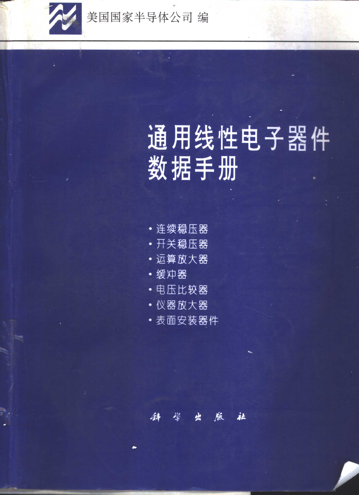
OCR 识别文字（可搜索层）
A 美国国家半导体公司 纺
3
通用线性电子器件
数据手册
EMBER
. 开关稳压器
. 运算放大器
. 缓冲器
. 电压比较器
. 仪器放大器
. 表面安装器件
a 学 mh 版 OR第 2 / 128 页
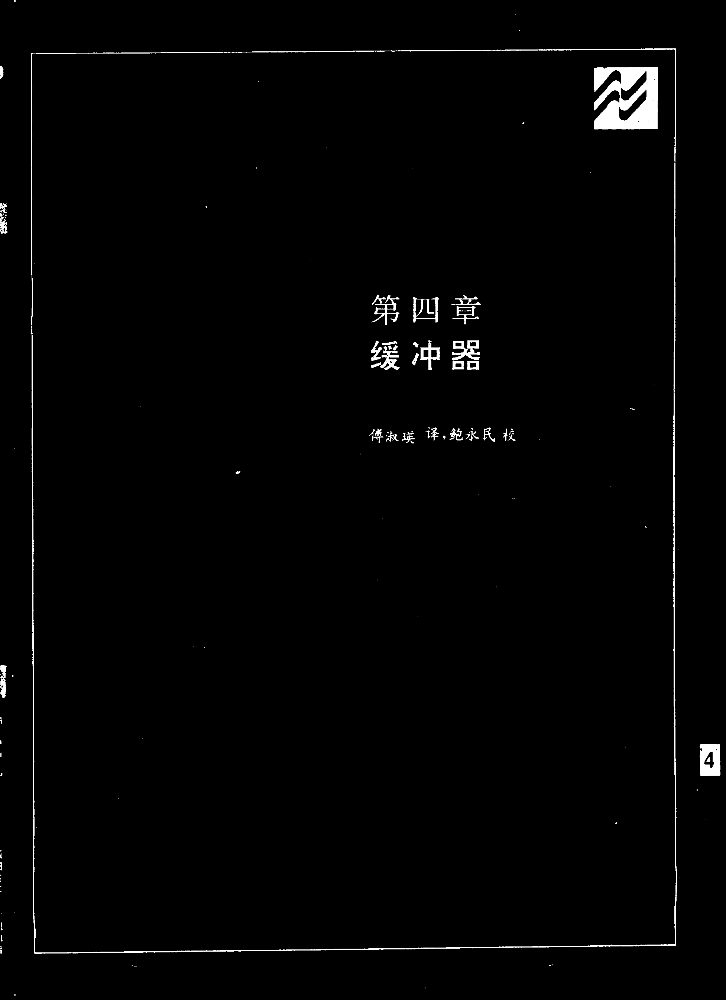
OCR 识别文字（可搜索层）
第 四 章
缓 中 2s
ing ERA.第 3 / 128 页
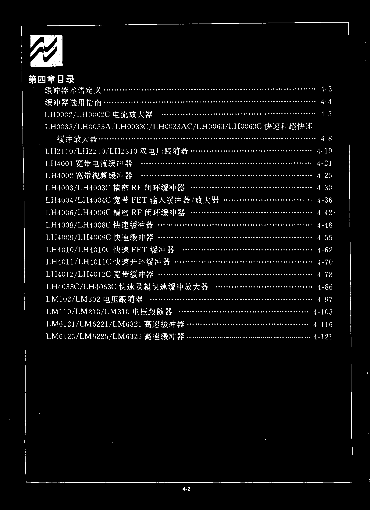
OCR 识别文字（可搜索层）
第四章目录
缓冲器术语定义…
缓冲器选用指南 …
LH0002/LH0002C 电流放大器
LH0033/LH0033A/LH0033C /LH0033AC/LH0063/LH0063C 快速和
缓冲放大器……
LH2110/LH2210/LH2310 双电压跟随器…
LH4001 宽带电流缓冲器
LH4002 宽带视频缓冲器
LH4003/LH4003C 精密 RF 闭环缓冲器
LH4004/LH4004C 宽带FET 输入缓冲器/放大器 …
LH4006/LH4006C 精密 RE 闭环缓冲器 pp
LH4008/LH4008C 快速缓冲器 ……
LH4009/LH4009C 快速缓冲器 ec cee cee ete eer eee ces ceseeces
1L.H4010/LH4010C {Rik FET 缓冲器
LH4011/LH4011C 快速开环缓冲器 …
LH4012/LH4012C 宽带缓冲器 …
LH4033C/LH4063C 快速及超快速缓冲放大器
LM102/LM 302 电压跟随器
LM110/LM210/LM310 电压跟随器 cer cce cee cee ee cee eew erence eee eneeees
LM6121/LM6221/LM6321 Bik Beh BB ee
1.M6125/LM6225/LM6325 高速缓冲器…
超快速
4-8
- 4-19
+ 4-21
… 4-25
… 4-30
4-36
sie 4-42
… 4-48
te 4-55
tee 4-62
tes 4-70
… 4-78
+ 4-86
… 4-97
… 4-103
… 4-116
… 4-121
4-2第 4 / 128 页
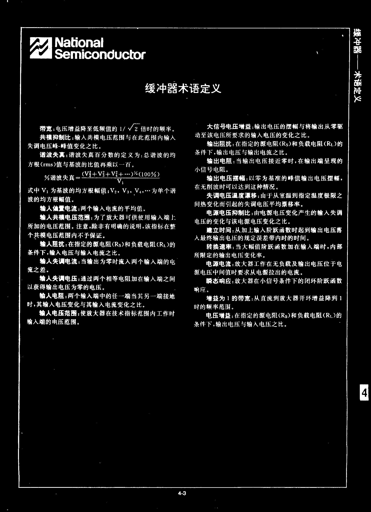
OCR 识别文字（可搜索层）
National
Semiconductor
缓冲器术语定义
带元:电压增益降至低频值的 1/ W 2 倍时的侨率。
共模抑制比 :输入共模电压范围与在此范围内输入
失调电压峰-峰值变化之比。
谐波失真;谐波失真百分数的定义为:总谐波的均
方根Grms)值与基波的比值青乘以一百。
site ew = VELVEF VEE) 100%)
式中 Vi REE AY 1 7 ABEL Ves Vv Vase
波的均方根幅值。
输入仿置电流 :两个输入电流的平均值。
输入共模电压范围:为了放大器可供使用输入端上
所加的电压范围。注意,除非有明确的说明,该指标在整
个共模电压范围内不予保证。
输人阻抗:在指定的源电阻(Rs)和负载电阻(Ri )的
条件下,输入电压与输入电流之比。
输入失调电流 :当输出为零时流入两个输入端的电
R22.
. 输入失调电压:通过两个相等电阻加在输入端之间
以获得输出电压为零的电压。 .
输入电阻 :两个输入端中的任一端当其另一端接地
时,其输入电压变化与其输入电流变化之比。
输入电压范围:使放大器在技术指标范围内工作时
输入端的申压范围。
大信和号电压增益:输出电压的摆幅与将输出从零驱
动至该电压所要求的输入电压的变化之比。
输出阻抗:在指定的源电阻(Rs)和负载电阻(Ri )的
条件下 ,输出电压与输出电流之比。
输出电阻 :当输出电压接近零时,在输出端星现的
小信号电阻。
输出电压摆幅:以零为基准的峰值输出电压摆贝，
在无前波时可以达到这种情况 。
失调电压温度漂移:由于从室温到指定温度极限之
间热变化而引起的失调电压平均蒜移率。
电源电压抑制比 :由电源电压变化产生的输入失调
电压的变化与该电源电压变化之比。
建立时间:从加上输入阶路函数时起到输出电压牙
入最终输出电压的规定误差带内时的时间。
转换速率:当大幅值阶跃函数加在输入端时,内部
所限定的输出电压变化率。
电源电流:放大器工作在无负载及输出电压位于电
源电压中间值时要求从电源拉出的电流 。
BRA. BOK BE DAS ARE FA
响应。
增益为 1 的带宽:从直流到放大器开环增益降到 1
时的频率范围。
电和压增益:在指定的源电阻(Rs)和负载电阻(Rit)的
条件下 ,输出电压与输入电压之比。 -
4-3
WRB — Becht SF第 5 / 128 页
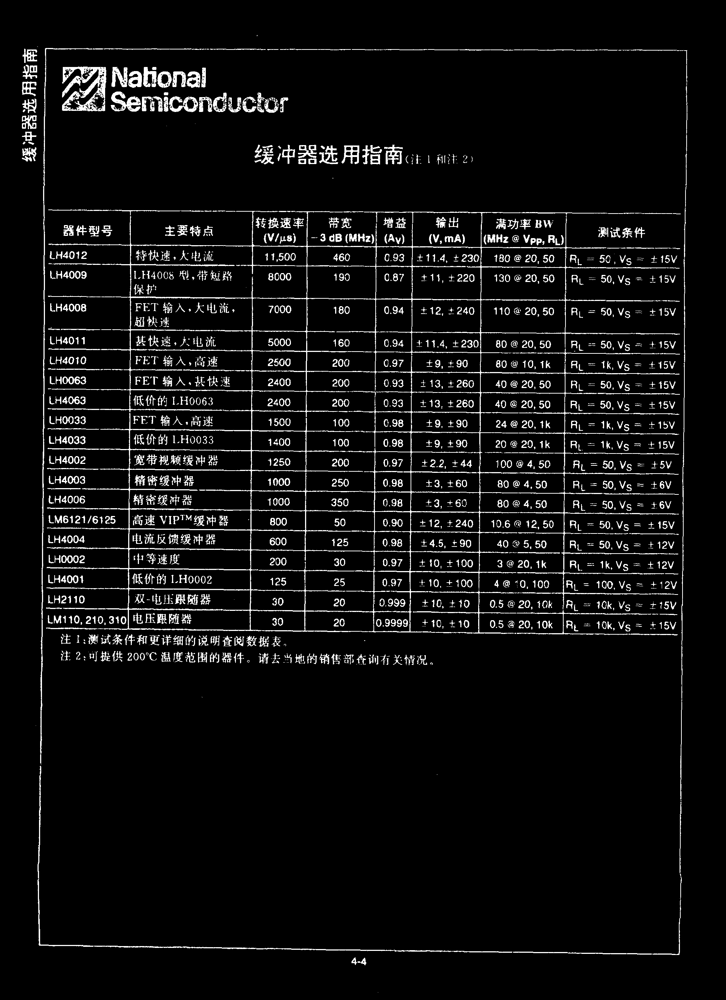
OCR 识别文字（可搜索层）
Kp abit AS
74 National
i Semiconductor
£5 2S ot FATS FA ci LAITE 2)
in T a0 ae
器件型号 主要特点 | ee [seb ikay Ga) | (rma) (wie wpp Ru| 。 测试条件 _
LH4012 | Fei cuit 十 11,500 | 460 0.93 |+11.4, +230) 180 @ 20, 50 [Ry = 50,Vg = +15V
LH4009 LH4008 型,带短路 | 8000 190 0.87 | +11,+220 | 130@20,50 | R, = 50,Vg = 土15V
ea | 二 十一十 a _
LH4008 FET 输入,大电流， 7000 180 0.94 | +12,+240} 110@20,50 | RL = 50,VSs = +15V
|起快速 | |
LH4011 其快速,大电流 5000 160 0.94 |+11.4 上230| 80@20,50 | Ry = 50,Vs = +15V
LH4010 FET 输入,高速 2500 | ”200 0.97 | +g9+90 | 80 @ 10, tk [RL = 1k, Vg = £15V
LHoo63 |FET 输入,其快速 上 2400 | 200 | 093 +13,+260 | 40 @ 20,50 |RL=50Vs= +15V_
LH4063 |低价的 LH0063 | 2400 4 200 1.099 | £13, +260 | 40 @ 20, 50 [RL = 50,Vs = £15V
LH0033 [FET 输入,高速 1500 L 100 | 6.98 | +9, +90 24 @ 20, 1k | Ri = 1k Vg = + 15V
LH4033 低价的 1.H0033 1400 100 0.98 | +9, +90 20 @ 20, tk | Pi = 1k, Vg = +15V
LH4002 ~ er fs 200 十 097 | 土2.2 +44 | 100@ 4,50 male = 50,VS = +5V
LH4003 精密缓冲器 1000 250 0.98 | +3, +60 80 @ 4, 50 Ry = 50,Vs = +6V
LH4006 Btu 上 1000 | 350 | 0.98 | +3, +60 80 @ 4,50 [a = §0,Vg = £6V_
LM6121/6125 [ei VIPIY缓冲器 | 8o0 50 0.90 | +12, +240 | 10.6 @ 12, 50 [RL = 50, Vg = +15V
LH4004 电流反馈缓冲器 i 600 | 125 | 0.98 | +45, +90 | 40@5,50 | R, ~ 50,Vs = +12V
LH0002 |中等速度 | 200 | 30 or | #10, +100| 3@201k | Ry = 1k, Vg = + 12V
LH4001 i LHo0002 | 125 | 25 for +10, +100 | 4@ +0, 100 a = 100,Vg = +12V
LH2110 双-电压跟随器 30 | 20 ial +10, +10 | 0.5 @ 20, 10k TAL = 10k, Vg = + 15V
LM110, 210, 310] 电压跟随器 r 30 20 9.9999) +10, £10 | 0.5 @ 20, 10k [Ry = 10k, Vg = + 15V
注 1 BO iat a CE A SE Ay Se HE
TE 2, HY PEAK 200°C 温度范围的器件。请去当地的销售部查询有关情况。
4-4第 6 / 128 页
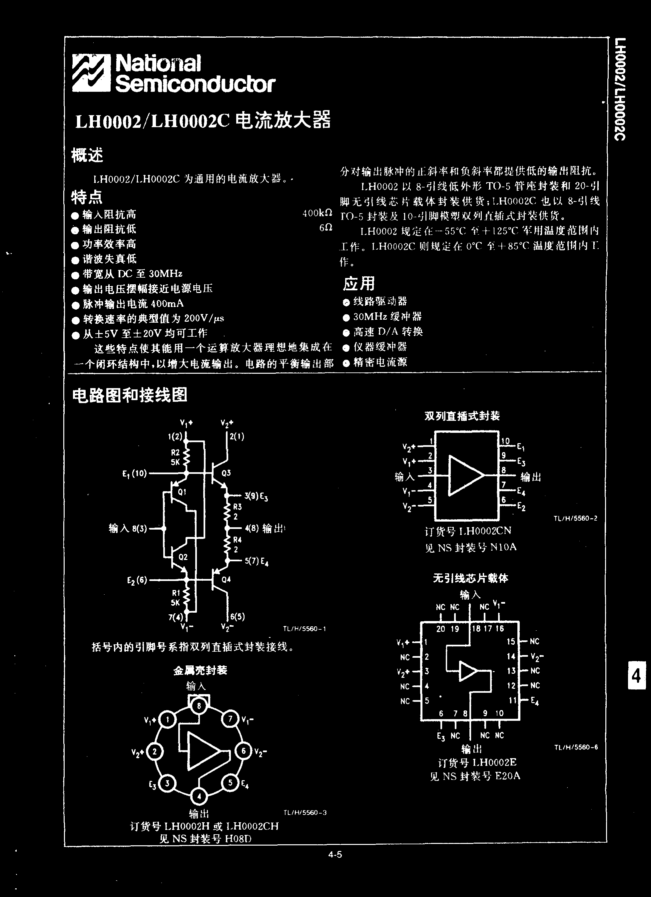
OCR 识别文字（可搜索层）
National
Semiconductor
概述
LH0002/I.H0002C 为通用的电流放大器。-
特点
@ 输入阻抗高
@@ 输出阻抗低
@@ 功率效率高
外 谐波失真低
@ HEM DC 至 30MHz
@ Hath
@ 脉冲输出电流 400mA
@ 转换速率的典型值为 200VVns
@ K15V 至士20V 均可工作
LH0002/LH0002C 电流放大器
分对输出屿冲的正斜率和负斜率都提供低的输出阻抗。
LH0002 以 8-引线低外形 TO-5 管座封装和 20-引
脚无引线芯片载体封装供货;LHRHoq02C 也以 8-引线
400k9 TO-5 封装及 10-引脚模塑双列直插式封装供货。
6a LH0002 规定在--55*C 全十125eC 军用温度范围内
工作。LH0O002C 则规定在 0"C 4 4+-85°C 温度范围内工
作。
应用
© 线路驱动器
@ 30MHz 缓冲器
@ 高速 D/A 转换
这些特点使其能用一个运算放大器理想地集成在 _@ 仪器缓冲器
一个闭环结构中,以增大电流输出。电路的平衡给出部 @ 精密电流源
电路图和接线图
Vo"
括号内的引脚号系指双列直播式封装接线。
输出
订货号1LH0002H 或1.H0002CH
RNS 封装号 Hosp
TL/H/S560~1
双列直插式封装
10
Vot Ey
vi一 se,
给入一 二 输出
4 7
Y1- iv
vs 6-ez
TL/H/5560-2
这货号 1.H0002CN
员 NS EES NLOA
无引线芯片载体
Wy
NC
Vot
NC
NC
E; NC
TL/H/§560-6
输出
订货号 LH0002E
见 NS 封装号 E20A
TL/H/5560-3
45
92000H'1/2000H1第 7 / 128 页
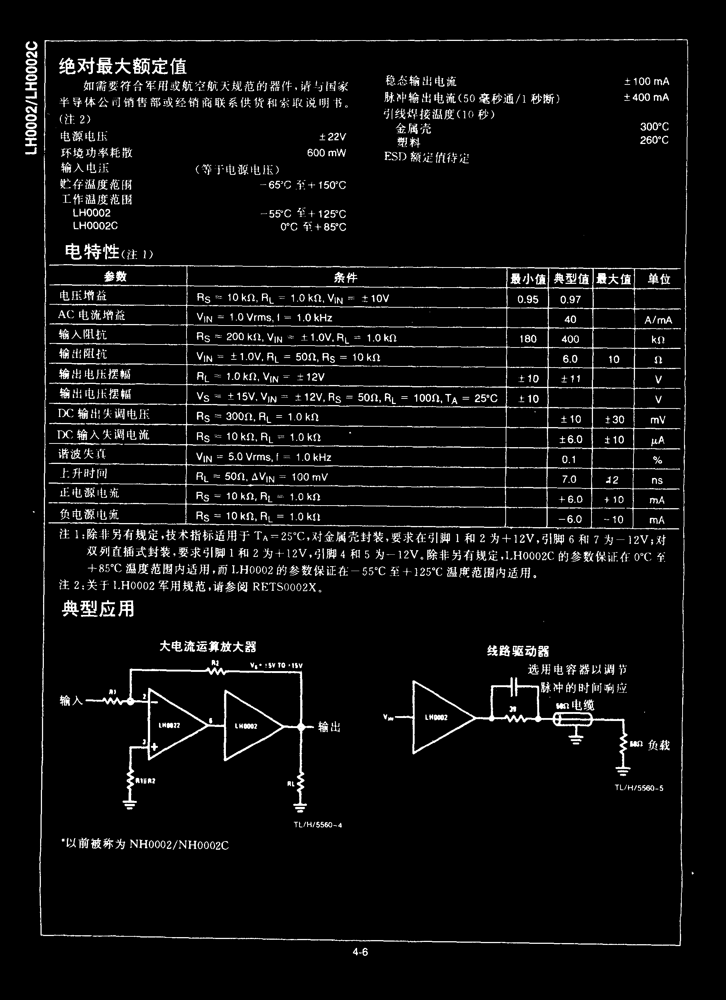
OCR 识别文字（可搜索层）
LH0002/LH0002C
+
绝对最大额定值
四 a fee ote 3° tik ide be pepe 稳态输出电流 +100 mA
如需要符合军用或航空航天规范的器件,请与国家 - 、
半导体公司销售部或经销商联系供货和索取说明书。 脉冲输出电流(50 毫秒通/1 秒斯) = 400 mA
~ Gr 2) “71 ERR AR HH BE (10 秒) 300°C
电源电下 上22V ae 260°C
SRS A RE 600 mW ESD 额定值待定
ffs A WLR CP He BLE)
WF EE —65°O Fi + 150°C
工作温度范围 _
LHO002 一55"C 至+125"C
LHO002C Oc 至+85C
电特性(注 1
参数 条件 |最小值| 典型什 县大信| 单位
电压增益 Rs = 10kn, RU = 1.0kn ,ViN = +10V | 9095 | 0.97 | 上
AC 电流增益 Vin = 1.0Vrms,1= 1.0 kHz {40 | A/mA
输入阻抗 Rs = 200 kQ, Vin = 上1.0V,RL = 1.0k9 i 180 | 400 ka
4 tt RLS Vin = £1.0V, Ry = 509, Rg = 10kn 6.0 10 2
Sie tH HE Ry = 1.0k2, Vin = +12V {#10 | +11 tv
fm A BH HE a _| Vs = £18V, Vin = £12V, Rg = 509, Ri = 1009, Ta = 25"C | +10 | V
DC 输出失调电压 Rs = 3009, Ry = 1.0kn 4 +10 | +30 | mV
DC 输入失调电流 Rs = 10kn,Ri = 10kn +6.0 | +10 pA
————— 十 + +
Wee AE | Vin = 5.0 Vrms, f = 1.0 kHz [ 0.1 %
上 升时间 Ry = 500, AVin = 100 mV [ 7.0 42 | ns
2 HDR Rg = 10k9, Rp = 1.0k2 | | +60 | +10 | mA
Sh FL UH SAL Rg = 10k9, RL = 1.0kn -6.0 | -10 mA
注 1 BAR Ay SLE BRA Ta = 25°C ,对金属壳封装,要求在引针 1 和 2 为二12V,引脚 6和7 为一12V;对
双列直择式封装,要求引脚 1 和 2 为12V,引脚4 和5 为-12V。除非另有规定,LH0002C 的参数保证在 0*C 至
十85"C 温度范围内适用,而LH0002 的参数保证在一55"C 至十125*C 温诬范围内适用，
注 2:关于 1.H0002 军用规范,请参阅 RETSO002X。
典型应用
输入
大电流运算放大器
R2 Vgo :8SVY TO 15SV
TL/H/5560-~4
“以前被称为 NH0002/NH0002C
线路驱动器
选用电容器以调闻
sant Fy BY
TL
WB Td 1
/7H/75560-5
4-6第 8 / 128 页
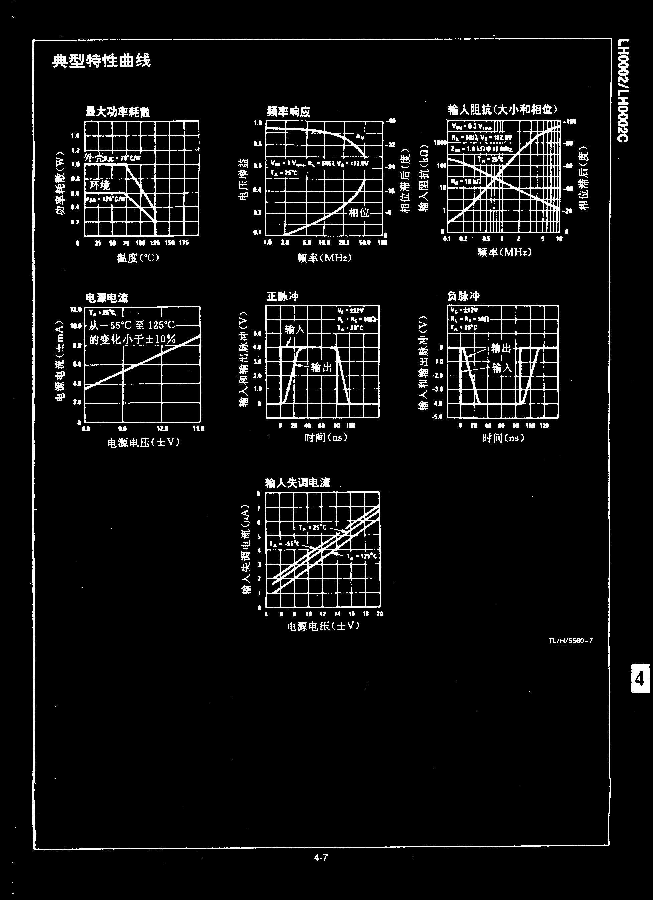
OCR 识别文字（可搜索层）
Pry
电源电压(
128
士V)
188
输入失调电流(pA)
e-* wawnen~ @
输入和输出脉冲(V)
输入阻抗(大小和相位)
中
Peat 71
ast) a
miei TN TT
ANT OS
A |
输入阻抗(kQ) ~
18 20) 88 18 78 bee te ser as tot ll
频率(MHz) (MHz)
oon
ws:
ss.
输入和输出脉冲(V)
sf
2 @
AY fa] (ns) By [al] (ns )
FR A HE Ct: VD
TL/H/5560-7
4-7
92000H1/2000H1第 9 / 128 页
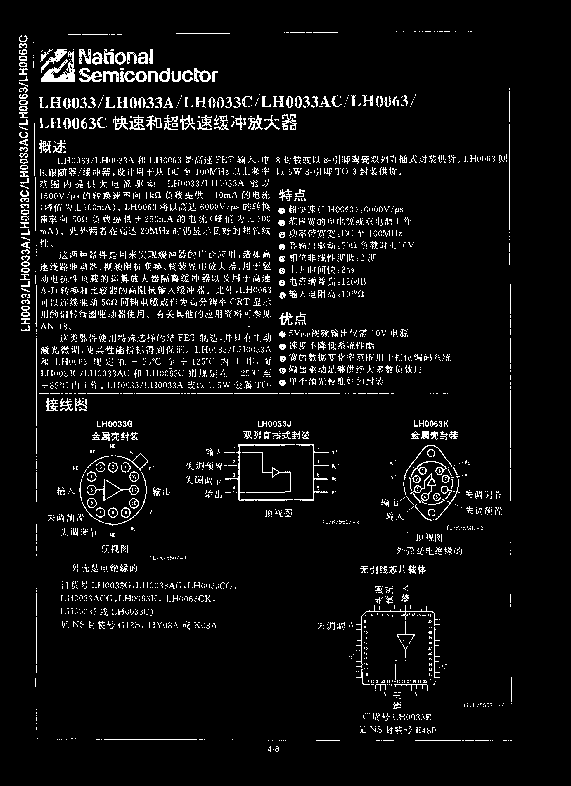
OCR 识别文字（可搜索层）
LH0033/LH0033A/LH0033C/LH0033AC/LH0063/LH0063C
jg National
Semiconductor
LH0033/LH0033A /LH0033C/LH0033AC/LH0063/
LH0063C 快速和超快速缓冲放大器
概述
1.H0033/LH0033A 和 LH0063 是高速 FET 输入.电 8 封装或以 8-引县陶次双列 1直揪式封装供货。LH0063 则
正跟随器/缓冲器,设计用于从 DC 至 100MHz 以上频率 以5W 8-引脚 TO-3 封装供货。
范围内提供大电流驱动。LH0033/LH0033A 能以
1500V /pes 的转换速率向 1kg 负载提供士10mA 的电流 特点
(峰值为士100mA)。LH0063 将以高达 6000V/ps 的转换 @ BHR C_H0063) : 6000V/ps
速率向 500 负载提供士250mA AS HS Be CE AFL OY oc 500 gy ity gt ay Ota BE oe HT fe
mA)。此外两者在高达 20MHz 时仍显示良好的根位线 @ 功率带宽突:DC 至 100MHz
性。 @ 高输出驱动:5n0 负载时上1CV
这丙种器件是用来实现缓冲器的广泛应用,诸如高 @相位非线性度低:2 度
还线路驱动器视频阻抗变换、核装置用放大器、用于驱 @ 上上升时间快,2ns
动电抗性负载的运算放大器隔离缓冲器以及用于高速 @ 电流增益高:120dB
A-D 转换利比较器的高阻抗输入缓冲器。此外,LH0063 @ A HEH Ag. 100
np EA iE SEAM oy 500 Fa] BH ah A BR Ey ES BRK CRT 显示
用的偏转线圈驱动器使用。有关其他的应用资料可参见 优点
AN-485。 my -
这类器件使用特殊选择的结FET BLE SEA diay @ OVE ?视频输出仅 需 10V 电小
激光微训,便其性能指标得到保证。LH0033/LH0033A @@速度不降低系统性能
Al LEHoc63 规定在-55"C H+ 125°C 内工作,而 ee 宽的数据变化率范围用于相位编人铀系统
0053 人 Ho033AC 和 LH0083C 则规定在…25s0C SO HR oh AL Ae AR
+85°C 内于作。LH0033/LH0033A 或以 1.5W 金属TO- @@ 单个需先佼准好的封装
ee
LH0033G LH0033J LH0063K
金属沉封装 双烈直播式封装 金属充封装
woe i A ay JON.
X . 失调预置一 — ie “7 ~
失调调节 一 —*
A 出 a Hi -
si 输出 aw
AIA BLT , 项视图 TU/K/5507-2 Hr”
4 凋 re ‘5 u vc 项视图 TL/K/5507 -3
HARA Mh ore Bek ie Be
TL/K/S50? ~1
外过是电绝缘的 无引线芯片载体
订货号 LH0033G,LHo033AG ,LH0033CG ， i <
1.H0033ACG,LH0063K, LH0063CK, KE &
LHo033本或 LH0033Cj em
见 NS 封装号 Gi2B，HY08A 或K08A IRIE
20.2) 2225 1a? 28 27 26.29 0
名 pol +
$e TL/K/$507- 27
订货号 LHO0O33E
见 NS 封装续 E48B
4.8第 10 / 128 页
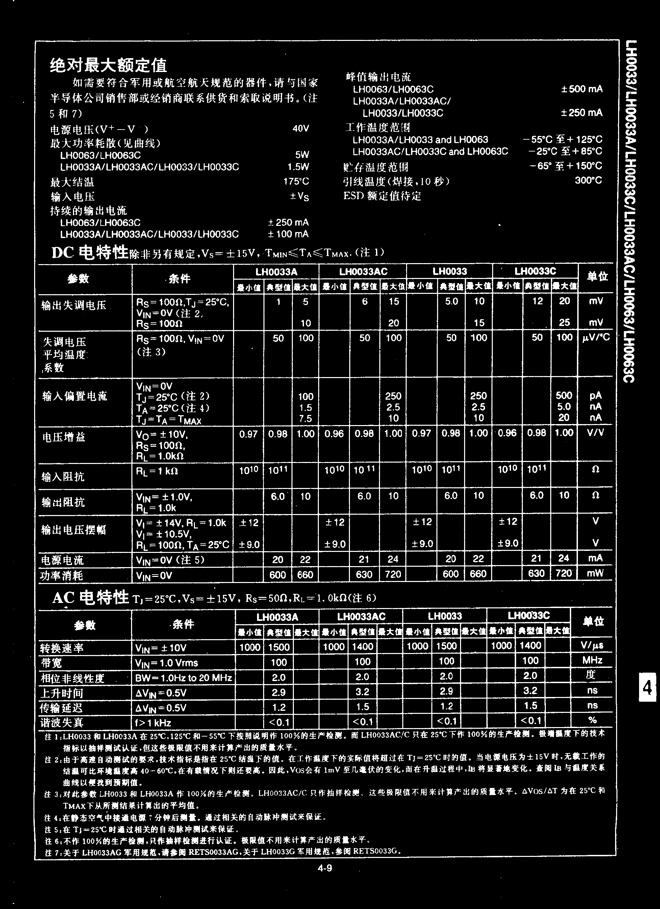
OCR 识别文字（可搜索层）
绝对最大额定值
如需要符合军用或航空航天规范的器件,请与国家
半导体公司销售部或经销商联系供货和索取说明书。(注
5和?7)
电源电压CV+一V )
最大功率耗散(见曲线)
LH0063/LH0063C
LHO033A/LHO033AC/LHO033/LHO0033C
最大结温
输入电讨
持续的输出电流
LH0063/LHO063C
LH0033A/LHO0033AGC/LH0033/LHO033C
40V
5W
1.5W
175°C
tVs
+250 mA
+100 mA
峰值输出电流
LH0063/LH0063C
LH0033A/LH0033AC/
LH0033/LH0033C
工作温度范围
LH0033A/LH0033 and LH0063
LH0033AC/LH0033C and LH0063C
巡存温度范围
引线温度(焊接,10 秒)
ESD 额定值待定
土500 mA
+250 mA
一55"C 至+ 125"C
一25"C 至十85"C
一65" 至十150"C
300"C
DC 电特性除非另有规定 ,Vs一土15V，TNsTA委Tax' (注1)
了
LHOO33A LHOO33AC LH0033
参数 条件
® | 量小值|典型信服大值| 是小值|典型什 exile te
输出失调电压 Rg = 1002,Ty= 25°C, 1 5 6 15
Vin= OV GE 2,
[Rs= 1000 10 | 20
失调电压 Ag = 1002, Viy=O0V 50 | 100{ 50 | 100
平均温度: CE 3)
系数 |
-一一一一 十-一 —-
: Vin=0V 1 |
输入偏置电流 Ty=25°C (注 2) 100 250
J
Ta=25°C (HE 4) 1.5 25
[Ty=Ta= Tmax 25 | _| 10
电压增益 Vo= +10V, 0.97 10.98 | 1.00} 0.96 | 0.98 | 1.00] 0.97
Rg = 1000,
Ry, = 1.0k0 an L | | |
输入阻抗 RL=1kn 1010 | 1011 1010 [4011 1010
V | | T10 | 0 二
IN= 土1.0V， 6.0'| 10 60 | 4 ;
输出半搞 RL= 1.0k | |
Vi= £14V, RL=1.0k | +12 £12 £12]
EM ly + 10.5,
R= 1009, Ta=25°C | +90| [+90] | [+90
电源电流 VIN=OV (注 5) 20 | 22 21 | 24 |
功率消耗 VN=ov [e00 | 660 630 | 720] |
AC BASRE 7 = 25°C. Vs= + 15V, Rs=500,R.=1. OkOGE 6)
9€900H1/£900H1/OVEC00H1/9EE00H1/ VEEOOHT/EC00HT
LHOO33A LH0033AC
参数 条件 最小值| 典型值|最大便| 最小值| 典型值|级大
转换速率 Vin=+10V 1000] 1500 1000
| 带宽 Vin= 1.0 Vrms 100
相位非线性度 “， .|BW= 1.0Hzto 20 MHz [ 2.0 Le
上升时间 AVIN=0.5V 2.9 | |
传输延迟 AVN=0.5V BEE |
谐波失真 f>1kHz | [sos |
EE 1;LH0033 和LH0033A Z 25°C.125°C #1— 55°C 下按晤说明作 100%的生产检测。而 LHOO33AC/C 只在 25"C 下作 100%的生产检测。 极端湿度下的技术
指标以抽样测试认证,但这些极限值不用来计算产出的质量水平。
注 2,由于高速自动测试的要求,技术指标是指在 25"C 结漫下的值。在工作温度下的实际值将超过在 TJ一25"C 时的值。当电源电压为土15V 时,无载工作的
结温可比环境温度高 40- 60"C,在有载情况下则还要高. 因此,Vos会有 imV 至几音伏的变化,而在升温过程中,了 将显著地变化。查阅 IB 与温度关系
HAL RS
注 3,对此参数 LH0033 和 LHOO33A 作 100% ME HMM. LHOOI3ZAC/C 只作抽样检测.这些极限值不用来计算产出的质量水平。AVOS/AT 为在 25°C 和
TMAX下从所测结果计算出的平均值，
注 4在稻杰空气中接送电源 ? 分钟后测最。 通过相关的自动对冲测试来保证。
注5:在TI=25"C时通过相关的自动脉冲测试来保证.
注 6:不作 100%的生产检测,只作抽样检测进行认证。极限值不用来计算产出的质量水平。
注 7,关于 LH0033AG 军用规范 ,请参阅 RETS0033AG ,关于 LH0033G 军用规范 ,参阅 RETS0033G 。
4-9第 11 / 128 页
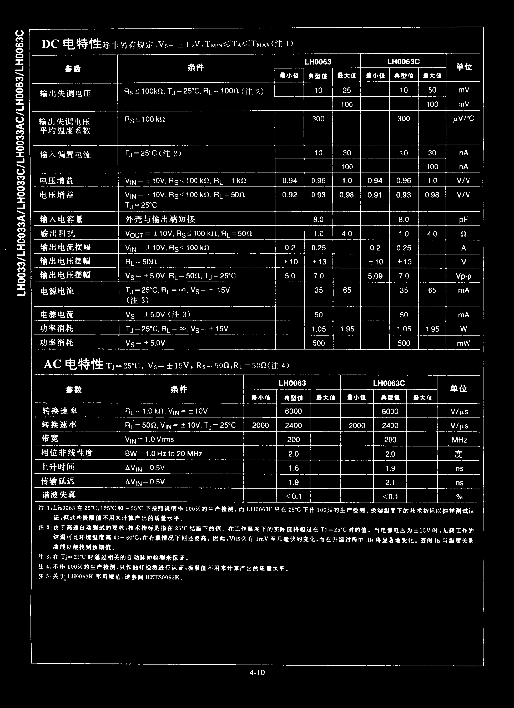
OCR 识别文字（可搜索层）
LH0033/LH0033A/LH0033C/LH0033AC/LH0063/LH0063C
DC 电特性除非 58 AE Vs = £15V. Tein Ta Tmax GE 1)
LH0063 LH0063C
参数 条件 单位
最小值 | awe | 县大值 | 最小值 | 典型值 | BA
输出失调电压 Rs<s1ookn,TJ=25"C,RL=1000 (注 2) 10 25 10 | 50 mV
| 100 | | [too | mv
输出失调电压 Rss 100 kf. 300 300 有VAC
平均温度系数
- - T 十 | T
fe A Ut BL Ty= 25°C GE 2) 10 30 10 30 nA
100 100 nA
电压增益 {Vin = + 10V, Rg < 100 kf, AL = 1k 0.94 | 0.96 10 | 094 | 096 | 10 V/V
十
电压增益 VIN=寺10V,Rs<100k0, Rp = 502 0.92 | 0.93 | 0.98 | 0.91 | 0.93 | 098 V/V
Ty= 28°C
4. 十
RANA a A [ [eo | i oF
Si th RAL SE | Vout = #10V, Rg< 100 kf, Ry = 500 i 1.0 40 | 1.0 4.0 a
输出电流摆幅 VIN= £10V, Ag< 100 kn 0.2 | 0.25 0.2 | 0.25 A
输出电压摆幅 Ru= 500 +10 | +13 +10 | +19 V
输出电压摆幅 VSs= +5.0V,RL= 500,TJ= 25°C 50 | 7.0 | 509 7.0 Vp-p
| |
电源电流 TJ=25"C, RL = 20, Vg= + 15V 35 65 35 65 mA
| GE 3) 4 +—
电源电流 VSs= +5.0V GE 3) 50 50 mA
功率消耗 Ty=25°C, RL= ©, Vg= + 15V 1.05 | 1.95 1.05 | 1.95 W
功率消耗 Vg = +5.0V 500 500 mw
AC EB RSTE T= 25°C, Vs= £15V, Rs =500,R,, = 500GE 4)
LH0063 LH0063C
参数 KH 1 单位
最小值 | 典型值 | 最大值 | 量小值 | awe | 最大介
—+ +
转换速率 RL=1.0ka,VIN=土10V 6000 6000 V/us
- = + +
转换速率 RU=500,VIN= +10V,Ty=25°C | 2000 | 2400 2000 | 2400 V/ns
| 上 上 +
带宽 Vin = 10Vrms i 200 | 200 MHz
相位非线性度 8BW=1.0Hzto 20 MHz 2.0 2.0 度
凤 T 一全
上升时间 AVIN= 0.5V 1.6 1.9 | ns
| -|
传输延迟 AVIN=0.5V 1.9 24 ns
wah Ay | + 上一一 t
谐波失真 <01 <01 | %
1E 1,LH9063 在 25"C,125"C 和一55"C 下按照说明作 100%的生产检测. 而 LH0063C 只在 25"C 下作 100%的生产检测, 极端温度二的技术指款以抽样测试认
证,但这些极鼠值不用来计算产出的质量水平。
ELF RAG OURO RR ,技术指标是指在 25"C 结温下的值。在工作温度下的实际值将超过在 Tj = 25"C 时的值。当电源电压为土15VY 时,无载工作的
结温可比环境温度高 40一 560"C,在有载情况下则还机高. 因此,VOs会有 lmV LER EL MEARE SBR POEL. 查阅 lb 与温度关系
曲线以便找到预期值。
入 3:在Ti= 25"C 时通过相关的自动脉冲检测来保证。
注 4:不作 100%的生产检测,只作抽样检测进行认证,极限值不用来计算产出的质量水平。
注 5:关于 LHC6063K 军用规范,请参阅 RETSO063K 。
4-10第 12 / 128 页
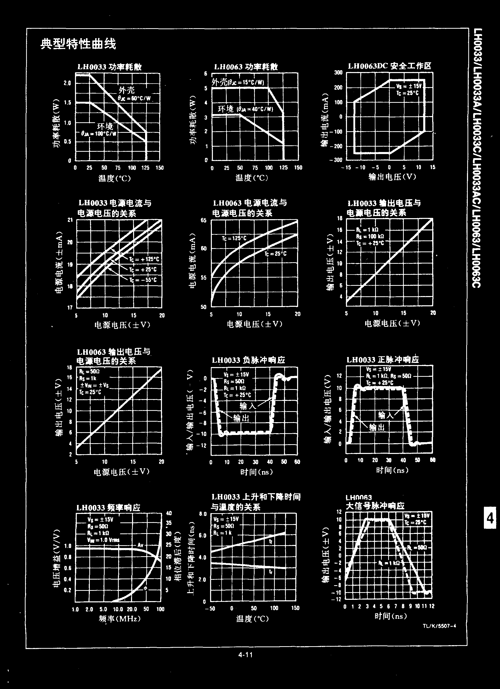
OCR 识别文字（可搜索层）
典型特性曲线
工H0033 TAREE MK
NU
20 NY 7十
全 ts AN
= 1.6
0
0 25 50 75 100 125 150
WBECC)
LH0033 电源电流与
电源电压的关系
<
g
ui
过
髓
Ss
三
LH0063 输出电压与
可 电源电压的关系
四
出
4
By
4
&
5 10 15 20
电源电压(士V)
LH0033 频率响应
=
> A
B4:| .
Bo.
4
2
10 20 50 100 200 50 100
频率(MHz)
LH0063 AEM
外壳buc = 18°C /W)
功率耗散(W)
0 2 S@ 75 100 125 150
WBE CC)
LH0063 电源电流与
电源电压的关系
电源电流CmA)
§ 10 15 20
电源电压(士V)
LH0033 负脉冲响应
-V)
“输入/输出电压(
LH0033 上升和下降时间
， 与温度的关系
EFA ER IA (ns)
LH0063DC 安全工作区
=<
上
c=
a
5
&
~15 -10 -5 0 § 10 15
输出电压CV)
LH0033 输出电压与
电源电压的关系
5 vo 5 20
电源电压(士V)
LH0033 正脉冲响应
Vg = + 15¥
+ AL =1k2, As =500 于
Te = +25°C
iat
|_| 4
~~ =
o “内
输入/输出电压(V)
eo mo
|
|
a
el
Ld
0 10 20 和 和 8 的
Bt [il] (ns)
LHnnh3
2 大信号脉冲响应
wo vs = 2180
8) Nee VO
LO. eee
PUTT PAT TT
|
二
|
输出电压(士V)
| |
Petry a AD
[|
SESE
01234567 8 9 101312
Bf [A] (ns)
-8
-10
一12
TLAK715507-4
4-11
IE900H1/E900HT1/DVEE00H1/SEE00H1/VEE00H1/E600HT第 13 / 128 页
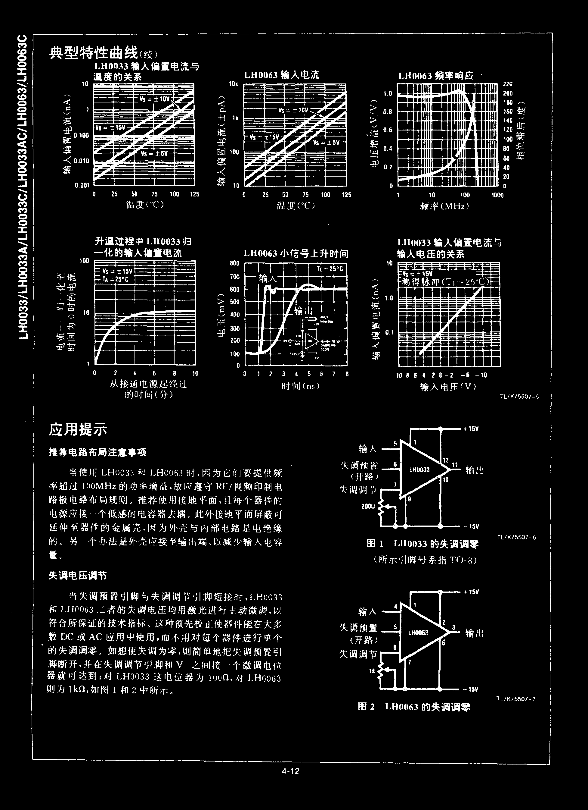
OCR 识别文字（可搜索层）
LH0033/LH0033A/LH0033C/LH0033AC/LH0063/LH0063C
典型特性曲线(缕，
LH0033 流与
en BAGEL AS LH0063 输入电流 LH0063 频率响应 -
温度的关系
en ee ee ee == 226
一 上一下一 ~ 1.0 200
yf os on
3 1 Kv é 之 08 I 50 由
; 产<二 > 41a ~
il 三三三 @ = 100 ，
zz ———— 下 wi 04 aE
: ; =—— 村 Paz a *
’ 20
rts
1S 100 “125 ° 1 10 100 1000
WBE CO) 频率(MHz)
升温过程中 LH0033 归 LH0033 输入偏置电流与
oo 一化的输入偏置电流 ， 输入电压的关系
800
we Else van -
+2 0 3
=e 1 | 2 ie = .
oO ~~ 400 =
as +t os = 300 i
ter - 型 还
25 FF十 | 本 <
一 100 =
1 0
0 2 4 6 8 10 86 4 20-2 -6 一10
从接通电源起经过 i A HER CV)
的时间(分) TL/K/5507-5
应用提示 中
推荐电路布局注意事项
当使用 LH0033 和 LH0063 HW AWE BE
率超过 LOOMHz 的功率增益,故应遵守 RF/视频印制电
路裤电路布局规则。推荐使用接地平面,且每个器件的
电源应接 个低感的电容器去纪。此外接地平面屏蔽可
延伸至器件的金属壳,关为外壳与内部电路是电绝缘 oN nustore
MRL a Lice ee Te ae Ce Pee Hl LH0033 MAS
#. 《所示引脚号系指 TO-8)
失调电压调节
当失调预置引脚与失调调节引脚短接时,LH0033 1
和 LH6063 二者的失调电压均用激光进行主动微调,以 输入
符合所保证的技术指标。这种项先校正使器件能在大多 失调预置 st
_ 数 PC 或AC 应用中使用,而不用对每个器件进行单个 (开路) ™
OO UAE. MR RW Pde A | 失调调节
BOOST IE ,并在失调调节引脚和V- 之间接.个微调电位
器就可达到;对 LH0033 这电位器为 1000,对LHoo63
则为 1ka,如图1 和2 中所示。
~ 15V
.图2 LH0063 HARES
TL/K/5507~7
4-12第 14 / 128 页
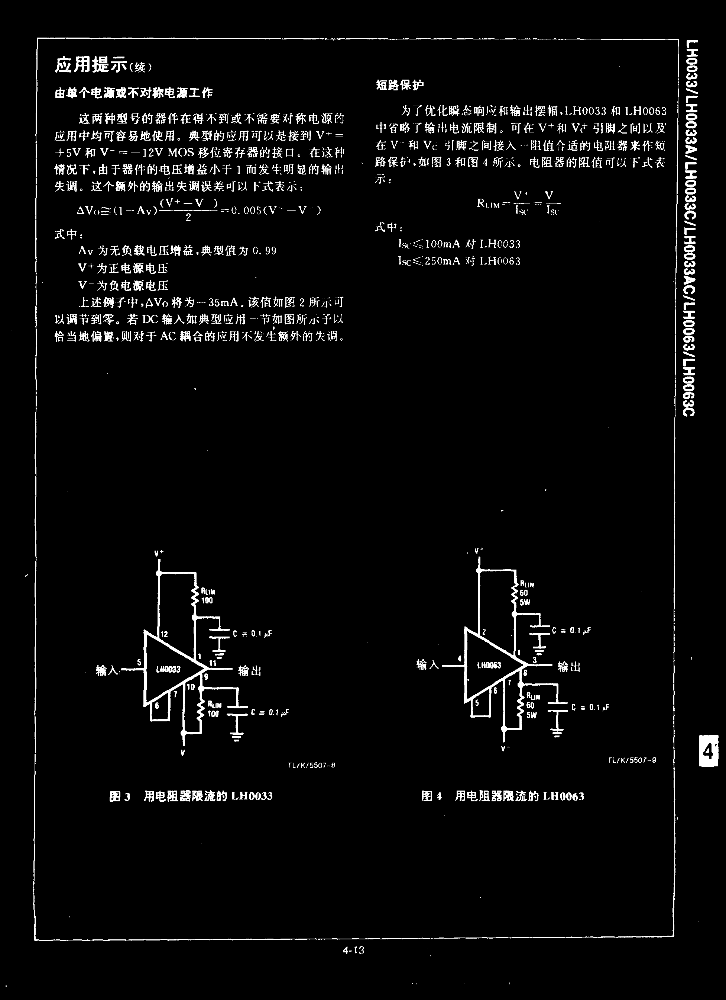
OCR 识别文字（可搜索层）
BAR
由单个电源或不对称电源工作
这两种型号的器件在得不到或不需要对称电源的
应用中均可容易地使用。典型的应用可以是接到 VT =
十5V Al V~=—12V MOS 移位寡存器的接口。在这种
情况下 ,由于器件的电压增益小于 1 而发生明显的输出
失调。这个额外的输出失调误差可以下式表示
CCV+一V-)
AVo=(1~ Av) 2 “一0.005(V 一V )
式中
Av 为无负载电压增益 ,典型值为 0. 99
V+为正电源电压
V-为负电源电压
上述例子中,AVo 将为一35mA。 该值如图 2 Brac ay
以调节到零。若 DC 输入如典型应用一节如图所孙子以
恰当地偏置,则对于 AC 耦合的应用不发生额外的失调。
TLAK/75507-8
图3 ABBA SPR HY LH0033
短路保护
为了优化瞬态响应和输出摆幅,LH0033 和 LH0063
中省略了输出电流限制。可在 Vt AL VS 引脚之间以及
在V 和YVc 引脚之间接入…阻值合适的电阻器来作短
”路保护,如图3 和图4 所和示。电阻器的阻值可以下式表
AR:
V
Rum=
LIM Tsc Tsc
式中:
Isc委100mA 对 1.H0033
IscX250mA 对 LH0063
TLYK/5507-9
用电阻器限流的 LH0063
4
4-13
9£900HT/£900H1/OVEE0OHT/SEE00HT/VEE00H1/E£00H7第 15 / 128 页
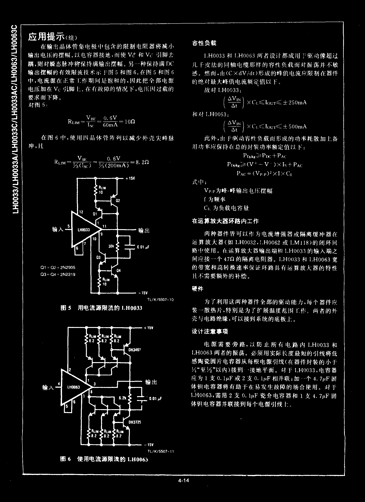
OCR 识别文字（可搜索层）
LH0033/LH0033A/LH0033C/LH0033AC/LH0063/LHO0063C
BAER ene
EE Mie (LL hd OEE A od BB ht a Da Bs
fy ts PE At AE RR AE VE OA Ve 引脚去 1.H0033 和 1H0063 BY A Bit ABA HY Te AR Aid
$B UU Rt Be ASK OR PE. 5 — BR DC SUF Be a [ed Sa He 9 RE PEE Oe BR TT She SF AS
输出摆幅的有效限流技术示于图5 APS 6. (EI 5 和图6 感。然而,由(CXdVy/dt)形成的峰值电流应限制在器件
中,电流法在正常工作期问是饱和的,因此把全部电源 的绝对最大峰值电流额定值以下。
电压加在 Vo 引脚上 , 在有故障的情况下,电压因过载的 故对 LHO033;
要 降， | art] X CL <lourS + 250mA
R Ve 0.6V 00 和对 TO
LIM Tso 6OmA | area X Ci <lourk< + 500mA
在图6 ft, (88 HY DY ih AR TE PE 8 a > OP FE RB SOSb HF Sih APE fe BEE RS Oy SE Hb
冲,且 J BSR EE ZEB ED ELF
Prpkg =? Poe +Pac
RM一 Var __0. 6V =8.20 J
Pppkxg之(V — Vi) XIst+Pac
Pac=(Vp.p)? KIT Cy
Mads) 4C200mA)
+ 15V
式中;
VpPp为峰-峰输出电正摆幅
f 为频率
Ci 为负载电容最
在运算放大器环路内工作
两种器件皆可以作为电流增强器或隔离缓冲器在
运算放大器(如 LH0032,LH0062 & M118) a4 HA al
路中使用。在运算放大器输出端和 1LH0033 的输入端之
间应接一个479 的隔离电阻器。LH0033 和 1LH0063 &
的带宽和商转换速率保证环路上共有运算放大器的特性
Q1 = Q2= 2N2905
Q3= Qa= 2N2219 HANH SE BP AY FP.
硬件
~15V
TLIK 8507-10 为了利用这两种器件全部的驱动能力,每个器件应
HS 用电流源限流的 LH0033 装 一散热片,特别是为了扩展温度范围工作。丙者的外
党与电路绝缘 ,可以接到系统的底板上 。
ve 设计注意事项
电源需要旁路,以防止所有电路肉 LH0033 积
LH0063 两者的振荡。必须用实际长度最短的引线将低
感陶资圆片电容器从每根电源引线(在器件封装的小于
办“至瓜?以内)接到“接她平面。对于 LH0033 ,电容器
输出 应为1支0.1nF或2支0.1pF相并联;加-个4.7pF固
体钮电容器将有助于在易发生故障的场合使用。对于
“00 pf LHRH0063,需用 2 支 0. lpF 85 Sp EEA OX 4. 7p
体钮电容器并联接到每个电源引线上 。
一1
TLVK/75507-11
6 使用电流源限流的 LH0063
4-14第 16 / 128 页
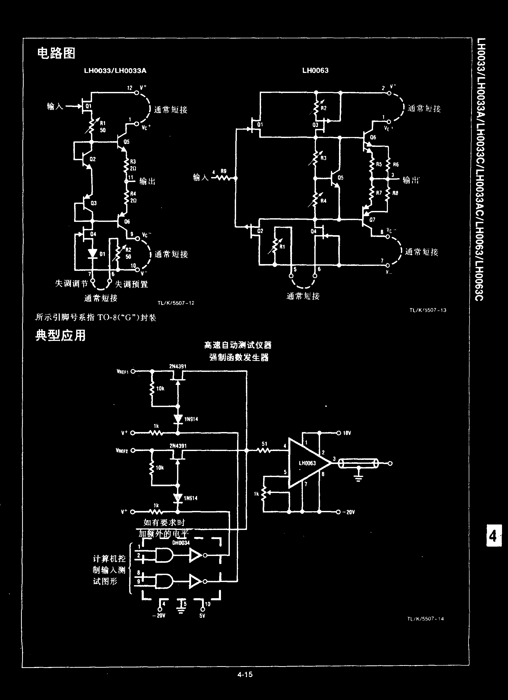
OCR 识别文字（可搜索层）
电路图
LH0033/LHO033A
12
所示引脚号系指 TO-8(“G”)封装
典型应用
LH0063
1 通常短接 ) 通常短接
TL/AK/5507-12
TLAK75507-13
高速自动测试仪器
强制函数发生器
TL/K/5507 -14
4-15
9£€900H1/£900H1/DVEE00H1/DE£00H1/ VEE00H1/E£00H1第 17 / 128 页
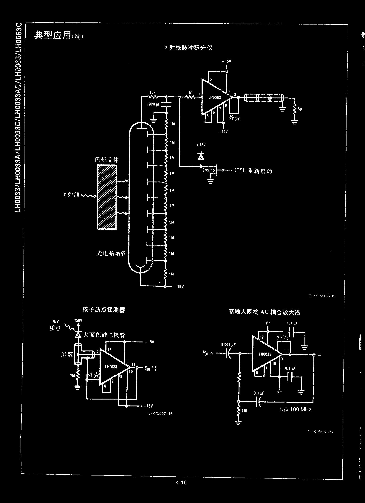
OCR 识别文字（可搜索层）
LH0033/LH0033A/VLHG033C/LH0033AC7LH00637H00638
BRAY RY Fx)
— KV
+15V
输出
+ — 15¥
TL/K/S507-16
2N5115
> 射线脉冲积分仪
50
TTL 重新启动
Thee 5807-16
高输入阻抗 AC 耦合放大器
ve 47 4F
0.001 uF
iA—
fH2> 100 MHz
TLZK75507-17
4-16
tae第 18 / 128 页
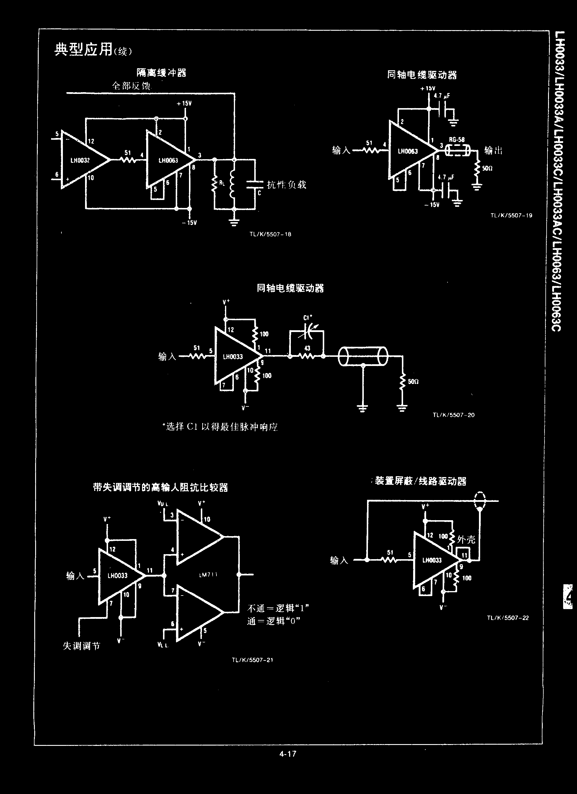
OCR 识别文字（可搜索层）
BY eg FA sx
Se
~~
隔离缓冲器
全部反馈
TL/K/550? - 18
同轴电费驱动器
“选择 Ch 以得最佳脉冲响应
带失调调节的高输和人阻抗比较路
Wu
Vou.
vt
Ji = BET"
iti = “oO”
TL/K/5507~21
FS Fh FB 8 OR oh BS
TL/K/5507-20
:装置屏蔽/线路驱动器
TL/K/5507-19
TL/K/5507-22
3€900H1/E900H1/DVEECOHT/IEE00H T/¥EE00H 1/Ef00HT
4-17第 19 / 128 页
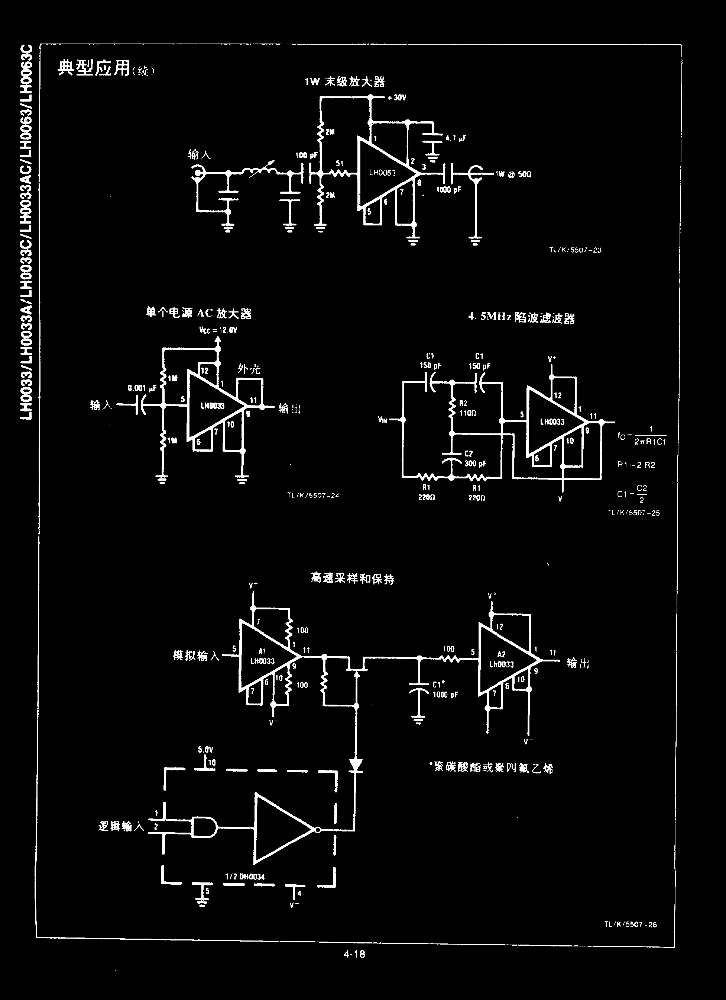
OCR 识别文字（可搜索层）
LH0033/LH0033A/LH0033C/LH0033AC/LH0063/LH0063C
SL FEY By FA css
输入
单个电源 AC 放大器
Vec = 12.0
TL/K/§507-24
1/2 DH0034
ne
= v
高速采样和保持
1W @ 500
TL/K/5507-23
4. 5MHz陷波滤波器
220n
“聚碳酸酯或聚四氟乙燃
fo
”27R1G1
R1-=2 R2
2
C1 _c2
2
TL/K/5507 ~25
TL/K/5507 ~26
4-18第 20 / 128 页
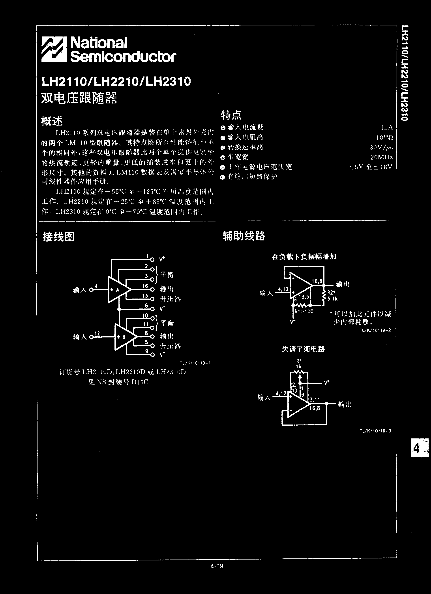
OCR 识别文字（可搜索层）
National
Semiconductor
LH2110/LH2210/LH2310
双电压跟随器
概述 tS a
LH2110 ABIL 4s, HEP Be BB 2 RS SrA @ A ME in
OLEZH1/01 27H 1/01 L2H
Ue 。
的两个LMI19 型根随器。其特点除所有从能特从与单 OB NE ov
5 ,这些 = ae ee ee x A rea : BS
APH AED is HE LE A HB LE @ 带窗宽 DOME»
的热流轨迹、更轻的重量.更低的插装成本和更小的外 的 ， :
形尺寸。其他的资料见 LM 10 数据表帮国家半导体公 OT ME RNR 二5Y 全十18Y
1LH2110 规定在一55"C BH 125°C ALE ae
工作。LH2210 规定在一25"C 至十85"C 温度范围内工
作。LHR2310 规定在 0"C 至十70*C 温度范围内工作.
接线图 辅助线路
在负载下负摆幅增加
R1>100 “可以加此元件以减
天 少内部耗散。
TLAK/10119-2
TL/K/10119-1
订货号 LH2110D,1-H2210D 或 LH2310D
见 NS 封装号 D16C
TLAK/10119-3
4-19第 21 / 128 页
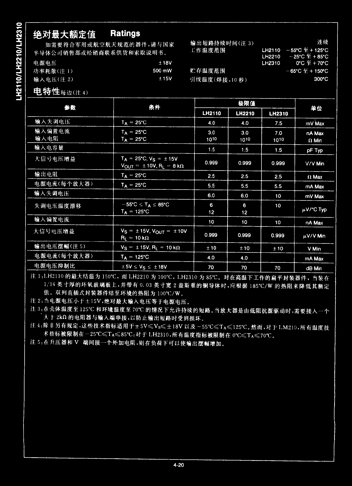
OCR 识别文字（可搜索层）
LH2110/LH2210/LH2310
绝对最大额定值
Ratings
如需要符合军用或航空航天规范的器件 ,请与国家
输出短路持续时间(注 3)
连续
- gawe: 、 工 LH2110 ”一55*C 至十125"C
半导体公司销售部或经销商联系供货和索取说明书。 作温度范围 Lh2210 “25C 至+85'C
电源电压 +18V LH2310 oc 至+70C
功率耗散(注 1) 500 mW 贮存温度范围 一65"C 至十150"C
SA HLIK GE 2) +15V 引线温度(焊接,10 秒) 300°C
电特性每边(注4)
极限值
参数 条件 单位
| LH2110 LH2210 LH2310
输入失凋电讨 |_Ta = 25°C 4.0 | 4.0 7.5 mV Max
| -
输入偏置电流 Ta = 25°C 3.0 3.0 7.0 nA Max
输入电阻 | TA= 25°C toro | 100 1010 | n Min
输入电容量 i 1.5 | 15 1.5 | pF Typ
大信号电压增益 Ta = 25°C, Vg = +15V .
ay Vour== #10V.Ay -am | 0.999 0.989 | 0.999 V/V Min
输出电阻 Ta = 25°C 25 | 25 2.5 Max
电源电流(每个放大器) Ta = 25°C 5.5 5.5 55 | mA Max
输入失调电压 6.0 6.0 | 10 | mV Max
失调电压温度漂移 一55"C < Ta < 85"C 6 6 10 。
‘ i Ta = 125°C 12 42 B/C Typ
输入偏置电流 | | 10 10 10 nA Max
全
大信号电压增益 Vs = +15V, Vour = 土10V :
aed Ri = 10kn 0.999 0.999 0.999 BV/V Min
十
输出电压摆幅(广 5) Vs = +15V, Ri = 10k9 +10 ti0 | +10 V Min
电源电流(每个放大器) | _TA=125C | 4.0 4.0 mA Max
电源电压抑制比 £5V< Vg < +18V 70 70 70 dB Min
注 1:LH2110 的最大结漫为 150°C, 而 LH2210 4 100°C, LH2310 为 85"C。对在高温下工作的扁平封装器件，当装在
1/16 英寸摩的环氧坡璃板上,并带有 0. 03 英寸宽 2 答斯重的铀导体时,应根据 185*C/W 的热阻来降低其额定
值。双列直插式封装器件结至环境的热阻为 100"C/W。
TE 2:当电源电压小于士15V,绝对最大输入电压等于电源电压。
注 3:在壳体温度至 125"C 和环境温度至 70"C 的情况下允许持续的短路。当放大器是由低阻抗源驱动时,需要接入一个
大于 2kg 的电阻器与输入端串接,以防止输出短路时受到损坏。
注4:除非另有规定,这些技术指标适用于士5V和Vs受士18V 以及一55"CSTA扫125"C 。然而,对于LM210,所有温度技
术指标被限制在-- 25°C T 85°C; Mt F LH2310,所有温度指标被限制在 OCCT A<70°,
注 5:在升压器和V- 端间接一个外加电阻 ,则在负荷下可以使输出摆幅增加。
-~一-
4-20第 22 / 128 页
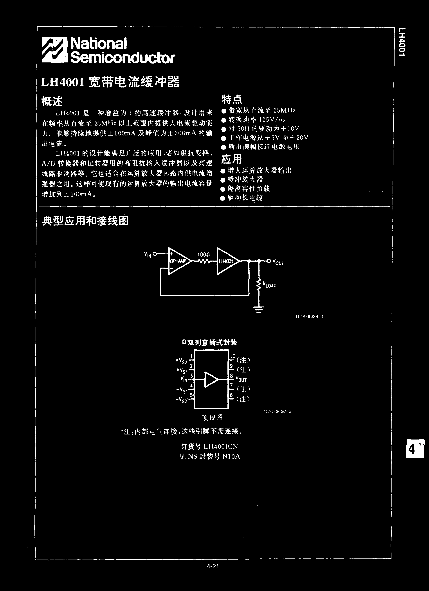
OCR 识别文字（可搜索层）
National
Semiconductor
LH4001 宽带电流缓中器
概述
LH4001 是一种增益为 1 的高速缓冲器,设计用来
EMR AL 25MH2 以上范围内提供大电流驱动能
力。能够持续地提供士100mA 及峰值为士200mA 的输
出电流 。
LH4001 的设计能满足广泛的应用,诸如阻抗变换、
A/D 转换器和比较器用的高阻抗输入缓冲器以及高速
线路驱动器等。它也适合在运算放大器回路内供电流增
强器之用。这样可使现有的运算放大器的输出电流容量
增加到=100mA 。
特点
@ HRM ALR 25MHz
@ 转换速率 125VVns
@ Xf 502 的驱动为士10V
和工作电源从士5V 至士20V
@@输出摆幅接近电源电压
应用
@ 增大运算放大器输出
© BHKAR
@ ATE HR
@ 张动长电缆
典型应用和接线图
TL K/B628- 1
D双列直插式封装
"597 SED
+YS1 CHE)
Yin : . Vout
5 GED
-Vsz CE)
TL/K (8628-2
项视图
*注:内部电气连接,这些引嘟不需连接。
订货号 LH4001CN
见 NS 封装号 N10A
4-21
t00PH1第 23 / 128 页
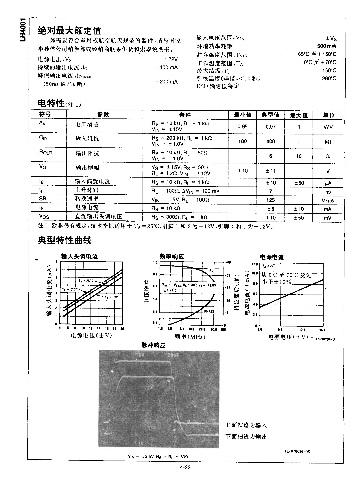
OCR 识别文字（可搜索层）
LH4001
绝对最大额定值
如需要符合军用或航空航天规范的器件 ,请与国家 onl soos
半导体公司销售部或经销商联系供货和索取说明书。 环境功率耗散 em
a 贮存温度范围,Tere 一65"C # + 150°C
IRAE» Vs +22V 工作温度范围,TA oc # +70°C
持续的输出电流 ,Jo +100 mA KET, 150°C
峰值输出 电流 + Tocpeak + 引线温度(焊接,<-10 秒) 260°C
(50ms 通/1s MT) +200 mA ESD 额定值待定
EB TE Ge 1
Rs = 10k, RL = 1kn
Vin = +10V
输入阻抗 Rs = 200kn,RLU= 1kn
Vin = +1.0V
Rs = 10k, RU = 502
Vin = +1.0V
输出摆幅 Vg = +15V,Rs = 509
Re = 1kn,ViN = +12V
Ag = 10kn,RL= Tkn
土升时间 Ri = 1009, AVIN = 100 my
转换速率 Vin = +5V, RL = 1000
电源电流 Rs = 10kn
直流输出失调电压 Rs = 3000,RL = Tkn
注 1:除非另有规定,技术指标适用于 TA=25"C,引脚 1 和2为+12V,引脚 4和5为一12V。
典型特性曲线
， 输入失调电流 频率响应 a 电源电流
18
ia 2077. at,
A a | {
.
10.0 从 oc 70°C cio | |
os oan +4 -32 一
x hF4ION%_
* 1 Vem By 2 588% Vg = 212.00
{
Tat
电源电流(士mA)
Sin
=
输入失调电流(AnA)
@ 10 12 4 th 1 28 16 200 686 106 200 soe 100 . 8 120 15.8
电源电压(士V) 频率(MHz) HR ALR C+ VY) rukvsezs_9
脉冲响应
上面扫迹为输入
下面扫迹为输出
TUL/K/B628-10
Vin = +2.5V, Rs = Ry = 50n
4-22第 24 / 128 页
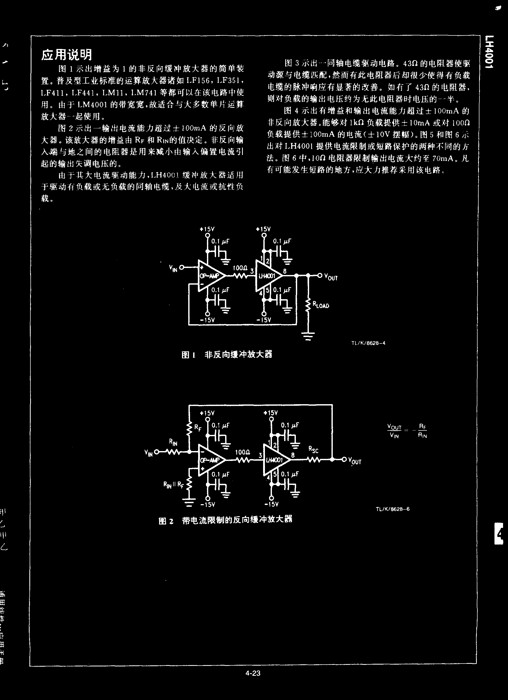
OCR 识别文字（可搜索层）
cr
HA
由
WA? OE
UU oo bd wrt
应用说明
图 1 示出增益为 1 的非反向缓冲放大器的简单装
置. 普及型工业标准的运算放大器诸如 LF156，LF351，
LF411，LF441，LM11，LM741 等都可以在该电路中使
用。由于 LM4001 的带宽宽,故适合与大多数单片运算
放大器--起使用。
图 2 示出一输出电流能力超过士100mA A A ey
KB. 该放大器的增益由 RFr 和Ran的值决定。非反向输
入端与地之间的电阻器是用来减小由输入偏置电流引
起的输出失调电压的。
由于其大电流驱动能力,LH4001 缓冲放大器适用
于驱动有负载或无负载的同轴电缆,及大电流或抗性负
载。
图 3 示出一同轴电缆驱动电路。439 的电阻器使驱
动产与电缆亚配,然而有此电阻器后却很少使得有负载
电缆的脉冲响应有显著的改善。如有了 438 的电阻器，
则对负载的给出电压约为无此电阻器时电压的--半。
图4示出有增益和输出电流能力超过士100mA 的
非反向放大器。能够对 1kga 负载提供士10mA 或对 1000
负载提供士100mA 的电流(士10V ERED. FAS 和图6 示
出对LH4001 提供电谢限制或短路保护的两种不同的方
法。图6 中,100 电阻器限制输出电流大约至 70mA, AL
有可能发生短路的地方,应大力推荐采用该电路 .
TL/K/8628-4
1 非反向缓冲放大器
Vout _ _ Fr
Vin An
TL/K/8628--6
图 2 ”带电流限制的反向缓冲放大器
1O0VHT1第 25 / 128 页
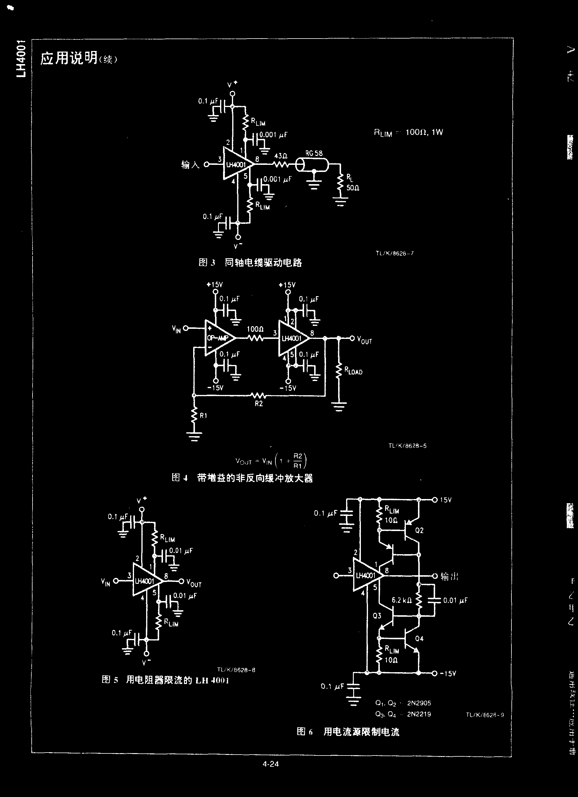
OCR 识别文字（可搜索层）
LH4001
MAR Acs
Rim
图4 带增巷的非反向缓冲放大器
Vout = Vin (
TL/K/8628-8
5 用电阻器限流的 LH 4001
=)
1+一
B1
图
1009, 1W
TL/K/8626-7
TL’/K/862B-5
= Qy, Qe -
Q,, Qy -
用电流源限制电流
2N2905
2N2219
输出
0.01 pF
TL/K/8628-9
L
4-24
Vv
Tt
m
IL BA Tat or Love SH第 26 / 128 页
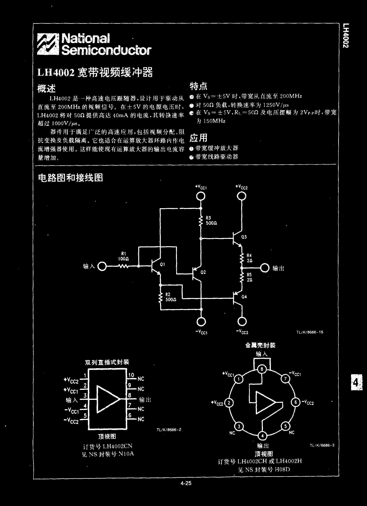
OCR 识别文字（可搜索层）
National |
Semiconductor
LH4002 宽带视频缓冲器
概述
LH4002 是一种高速电压跟随器,设计用于驱动从
直流至 200MHz 的视频信号。在士5V 的电源电压时，
LH4002 将对 500 提供高达 40mA 的电流,其转换速率
超过 1000V/ps,
器件用于满足广泛的高速应用,包括视频分配.阻
抗变换及负载隔离。它也适合在运算放大器环路内作电
流增强器使用。这样能使现有运算放大器的输出电流容
量增加，
特点
@在Vs一士5V 时,带宽从直流至 200MHz
@ Kt 500 负载,转换速率为 1250Vynus
@ #£ Vs=+5V.R.=500 及电压摆幅为 2VepP时,带宽
为 150MIiz
应用
@ 带宽缓冲放大器
@@带宽线路驱动器
电路图和接线图
双列直插式封装
1 10
输入 输出
4 7 NC
“Veet 5 6
“~Vccz NC
TL/K/B686-2
顶视图
订货号 LH4002CN
见 NS 对装号 NI0A
+Ycc2
+YCC1
TL/K/8686- 15
TL/K/8686-3
顶视图
订货号 LH4002CH 或LH4002H
IL NS 封装号 Hosp
4-25
Z00PH1第 27 / 128 页
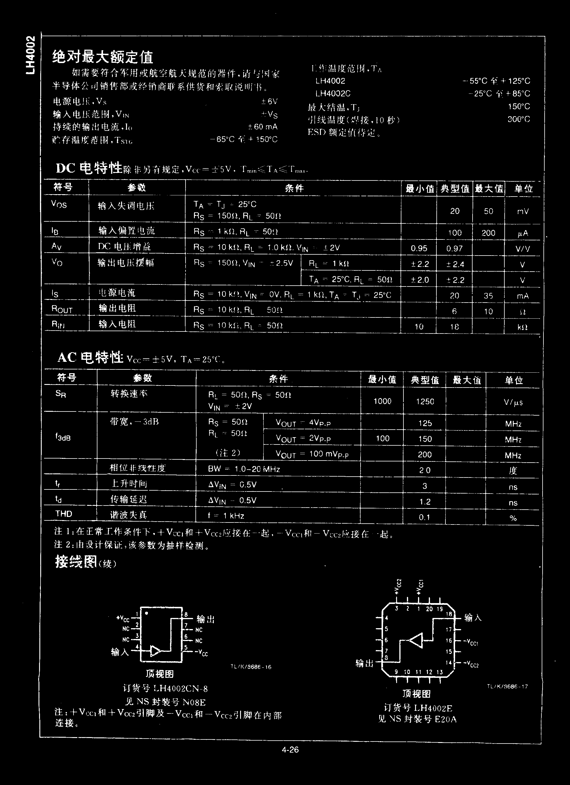
OCR 识别文字（可搜索层）
LH4002
绝对最大额定值
如需要符合军用或航空航天规范的器件 ,请与同家
半导体公司销售部或经销商联系供货和索取说明书。
电源电庄,Vs
Se A HE A. Vin
持续的输出电流,lo
驻存温度范围,Tstc
+6V
十VS
二60 mA
—65°C 4: + 150°C
1A HE at HT,
LH4002
LH4002C
最大结温,T)
引线温度(爆接,10 秒)
ESD 额定值待定。
DC 电特性除利另到规定,Vcc= 十5V， Poin TAS Two
一55"C + 125°C
-25"C 4. + 886°C
150°C
260°C
符号 | eu a ee ; 最小值] 典型值|最大值| 单位“
Vos 输入失调电压 | Re 7 ‘on, RL - son 20 50 mV
Ip See A Aad FL Dit Rg = 1k, AL = 509 : 100 | 200 nA
Ay | DC #8, Hid ft 1 Rs = 10k0, Ry = 10k0， Vin 2V 095 0.97 | W/V
Vo Vg ree nisi | Rg = 1800, Yin - =2.5V | RL = 1k0 加 +22 | +24 Tov
| | 人 Ta = 25°C,R, = 500 | +20] +22 ir 7 Vv
tg | HUH _ Rg = 10k9, Vin = OV,RL = 1ko,TA = Ty = 25°C 20 35 mA
Rout | 和输出电阻 | Rg = 10k8,RL 500 6 | 1 | oa
Rin | 输入电阻 Rg = 19k, Ry 500 加 _ 40 | ae | Tg
AC 思特性 vec +5V, Ta= 25°C.
符号 #% : RE Uy ay acs see ee
SR 转换速率 人 = 500 1000 1250 V/us
带宽,一34B 7 Rs = 502 “Vout ~ 4Vp.p 125 MHz
fade AL = S00 | Vout = 2Vp-p __ 100 a 150 —_ MHz
_ ; GE 2) Vout = 100 mVp.p 200 : MHz
AE AS AF RTE IB BW = 1.0-20 MHz 站 20 ie
to 上升时间 AVIN = 0.5V 加 3 ns
t 传输延迟 AVIN = 0.5V 7 12 fas _
THD BRA 加 f= 1 kHz 0.1 %
注 1:在正常工作条件下,十Veci和十Vcc:应接在--起, - Veer Al — Vecs应接在 :起。
注 2:由股计保证,该参数为抽样检测 。
RAs
Neo” 2 输出 BA
NC =“一 NC
noe Sc “Veet
输入 “Voc
顶视图 TH/8686-16 9 10 41 12 13 "een
订货号 LH4002CN-8
见 NS 封装号 NO8E
TEs + Veer fil + Voce] HR — Voc: Fil 一Vccz引脚在内部
连接，
TL/K/S686 -17
TB
订货号
LH4002E
见 NS 封装号 E20A第 28 / 128 页
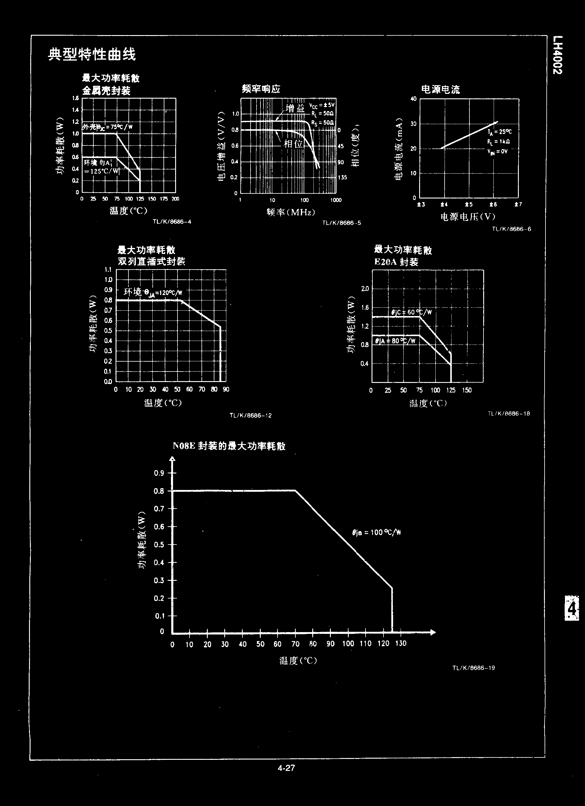
OCR 识别文字（可搜索层）
典型特性曲线
功率耗散(W)
电源电流
“
39 | _
人= 25%
R= ka
20 |一 ww=oy
10二-- -
0
tt 5 7
电源电压(V)
TL/K/8686-6
BADE
SARHE
全 A
] > 中
@ ， ig
-| ou : BP
w a
2 iyi ¥ i | 1 1 ®
° UE | | hill
0 2B SO 7 100 125 150 175 20 1 10 100 1000
Wa RE CC) 频率(MHz)
TL/K/8686-4 TL/K/8686--5
最大功率耗散
,| 再列直揪式封闭
wf EPP PTT
0 Mice akc ll |
SBE RL CW)
0
10 2 30 40 50 80 70 8 9
ih ECC)
功率耗散(W)
0.9
0.8
0.7
0.6
0.5
0.4
0.3
0.2
0.1
TL/K/8686-12
NOSE 封装的最大功率耗散
0 10 20 30 40 50 60 70 80 90
温度("C)
TBR CW)
0 6B 9
gja = 100°C /W
100 110 120 130
75 100 125 150
HARE CO)
TL/K/8686- 18
TL/K/8686-19
4-27
Z00PHT第 29 / 128 页
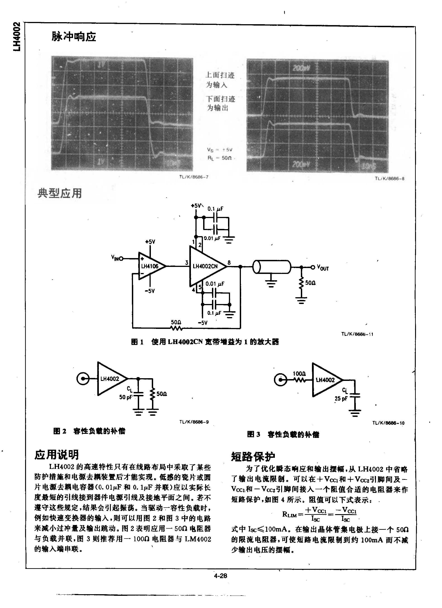
OCR 识别文字（可搜索层）
LH4002
了脉冲响应
bia 4 i
为输入
下面扫迹
为输出
TL/K/8686-7
+5V\ 04
TL/K/8686-9
图2 容性负载的补偿
应用说明
LH4002 的高速特性只有在线路布局中采取了某些
防护措施和电源去耦装置后才能实现。低感的资片或圆
片电源去耦电容器(0. 01nF 和 0. 1pF 并联)应以实际长
度最短的引线接到器件电源引线及接地平面之间。若不
遵守这些规定,结果会引起振划。当驱动一容性负载时，
例如快速变换器的输入,则可以用图 2 和图 3 中的电路
来减小过冲量及输出跳动。图 2表明应用一 5000 电阻器
与负载并联,图 3 则推荐用一 1000 电阻器与 LM4002
的输入端串联。 ‘
TL/K/8686-11
TL/K/8686-10
图3 窜性负载的补偿
短路保护
为了优化瞬态响应和输出摆幅,从 LH4002 中省略
了输出电流限制。可以在十Vcc 和十Vccz引脚间及一
Vcc和一Vccz引脚间接入一个阻值合适的电阻器来作
短路保护,如图 4 所示。限值可以下式表示 、
十Veccl_二Vcci
Isc Isc
式中 Isc委100mA 。在输出晶体管集电极上接一个 500
的限流电阻器,可使短路电流限制到约 100mA 而不减
少输出电压的摆幅。
Rim=第 30 / 128 页
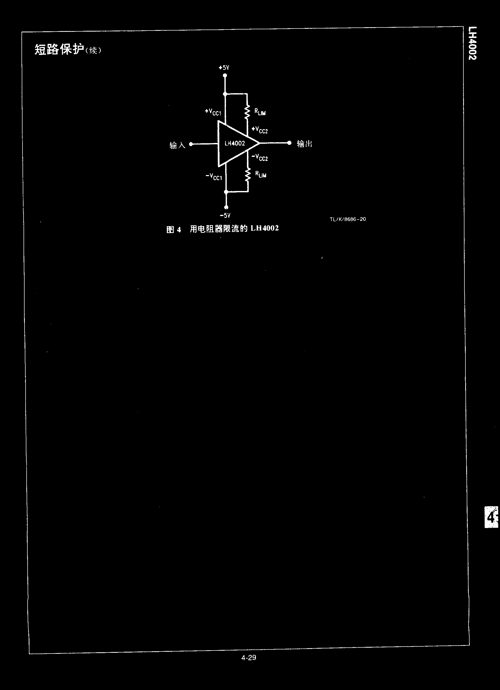
OCR 识别文字（可搜索层）
RB RR
+5V
-5Y
4 用电阻器限流的 LH4002
TL/K/8686-20
z00VYHT
4-29第 31 / 128 页
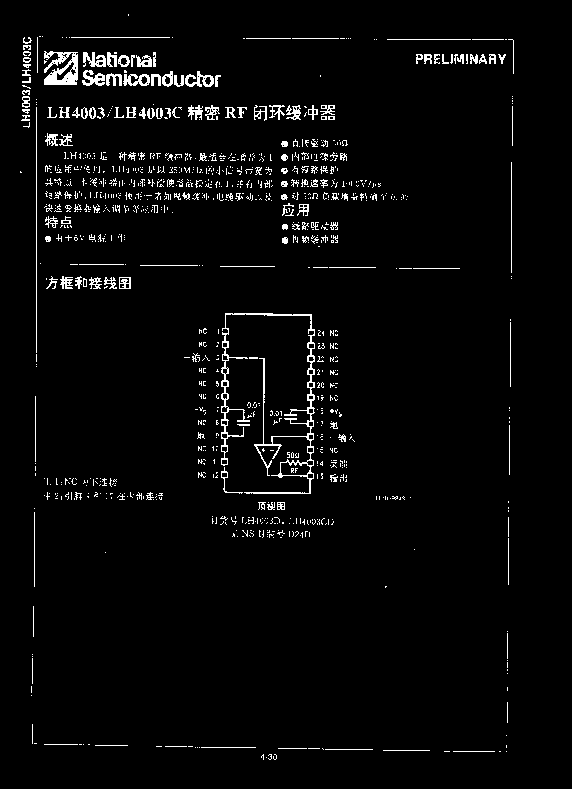
OCR 识别文字（可搜索层）
LH4003/LH4003C
Nationai
Semiconductor
LH4003/LH4003C 精密 RF 闭环缓冲器
@ 直接驱动 500
LILH4003 是一种精密 RE 缓冲器,最适合在增益为 1 @@内部电源旁路
的应用中使用。LH4003 是以 250MHz 的小信号带宽为 @@有短路保护
其特点。本缓冲器由内部补偿使增益稳定在 1 ,并有内部 @ 转换速率为 1000VVps
短路保护.LH4003 使用于诸如视频缓冲 .电缆驱动以及 鲁对 500 负载增益精确至 0. 97
PRELIMINARY
RR Me EG ATS A i, 应用
特点 @ 线路驱动器
@由士6V 电源工作 © 视频缓冲器
方框和接线图
注 1:NC 为不连接
注2:引脚?3和17在内部连接
TL/K/9243-1
项视图
订货号 LH4003D, LH4003CD
见 NS 封装号 D24D
4-30第 32 / 128 页
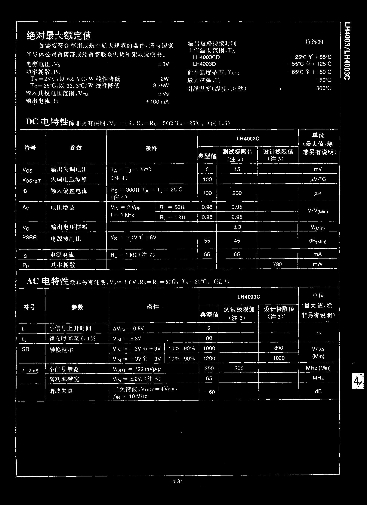
OCR 识别文字（可搜索层）
~ ~ c
| 区
| 绝对最六额定值 cae 5
i ES AAR ae Wan 13
半导体公司销售部或经销商联系供货和索取说明节。 LH4003cD ”“ _osc4 vase | E
电源电压,Vs +8V LH4003D -sec#+128¢ | 8
ERE Po 62. °C/W SEHK A ow 贮存温度范围,Tsrc —65°C # + 150°C 3
A= 25°C. LL 62. 5°C/W St A Be Ala Ty 150°C
gemini ver 线性降低 7 引线温度(焊接,10 BY) ， 300°C
输出电流 ,Io 土100 mA
DC BB EME pe ak 8 Hi, Vs= +6. Rs=Ri一5CQ Ta=25°C, GE 1.6)
LH4003C Pee rm
符号 参数 E - — ( ,除
了 条件 ve) SHORE | EME | 非另有说明)
GE2 | GED
Vos og oH Se Fl He, Ta = Ty = 25°C 5 15 mV
Vosvat | 失调电压漂移 GE © 100 pv/°C
上 _ -
ip 输入偏置电流 Rs. | fone Ta T= 25 100 200 pA
Ay 电压增益 Tn = 2Vpp Ri = 502 | 0.98 0.95
t= 1kHz 1 VN min)
i | RL = 1ko 0.98 0.95 _
Vo 输出电压摆幅 | 13 VIMin
PSRR 电源换制比 Vg = +4V # £8V 55 45 dBwin
Is 电源电流 AL = 1kn GE 7) 55 65 _ mA
1 Pp BRK | 780 mw
AC 电特性除非另有注明,Vs= 士V,Rs= Ri = 502, Ta=25C. GE)
LH4003C 单位
符号 参数 条件 Bem | 设计机根值 | (最大值.除
t, 小信号上升时间 AVIN = 0.5V 2
_ ns.
ts | cnt 6.1% Vin = +3V . 80 _ ;
SR 转换速率 | Vin = —3V # +3V | 10%-90% | 1000 | 800 Vs
_ Vin = +3V 4 —3V | 10%-90% | 1200 | 1oo0 (Min)
f-303 | 小信号带宽 Vout = 109 mVp-p 250 200 [MHz (Min)
_ 满急率带宽 Vin = £2V, GE 5) 65 ; MHz
谐波失真 二次谐波 ,VocT一4VP-P， _60 dB
L. L Jin = 10 MHz-
4.31第 33 / 128 页
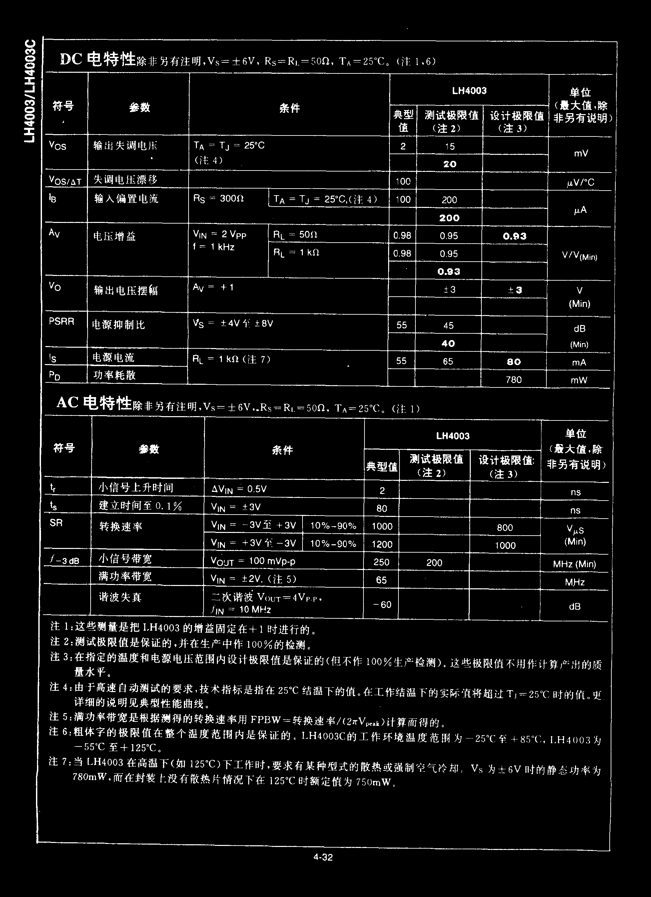
OCR 识别文字（可搜索层）
LH4003/LH4003C
DC 电特性除非另有注明,Vs= t6V, Rs=Ri =一500,，TA=25"C。(注 1,6)
LH4003 单位
a (BAER
#5 参数 att 典型| 测试极限值| 设计极限值 | 非另有说明，
‘ fA | GED (注 3)
Vos rerrertte Ta = Ty = 25°C 2 15 L mV
. GE 4) 20
|
YosvaT | 失调电讨漂移 | 100 { AVAC
Ig 输入偏置电流 Rg = 3002 Ta = Ty = 25°C, GE 4) 100| 200 A
200 上
T 7 十
Ay 电压增益 Vin = 2 Vpp Ry = 500 0.98 0.95 0.93
f= 1 kHz RL = 1kn 098} 095 V/Vimin)
0.93
Yo 6 oH ty REE Ay= +1 +3 +3 v
(Min)
PSRR = ‘ 于
电源抑制比 Vg = +4V 4 +48V 55 45 | dB
i 40 (Min)
Is 电源电流 AL = 1kn CE 7) _ 55 65 80 mA
Pp 功率耗散 i 780 mw
AC FERS TE oe 3 WE MH Vs— + 6V..Ro=Ri=500, Ta=25°C, GE 1)
LH4003 单位
符号 参数 条件 - -一 RAE BE
测试极限值 : _
一一一一一一一一 十一 下 —-
t 小信号上升时间 | AViy = 0.5V 2 ] ne
ts | 建立时间至 0.1% [iw = +3V | 80 | ns
SR 转换速率 Vin = -3V至 +3V | 10%-90% | 1000 | 800 Vus
Vin = +3V 4 —3V | 10%-90% | 1200 1000 (Min)
|
f-3ap | 小信号带宽 Vout = 100 mVp-p _[ 250 t 200 | MHz (Min)
| 满功率带宽 Vin = +2V，(注5) 65 | MHz
谐波失真 二次谐波 Vout=4Vp-p+ _
Sin = 10 MHz 6 | 98
注 1:这些铀量是把 LH4003 的增益固定在十1 时进行的。
注 2:测试极限值是保证的,并在生产中作 100%的检测
注 3:在指定的温度和电源电压范围内设计极限值是保证的(但不作 100%%生产检测), 这些极限值不用作计算产出的质
量水平。
注 4:由于高速自动测试的要求 ,技术指标是指在 25°C 结温下的值。 在工作结温下的实际秆将超过Ti=25"C 时的值。更
详细的说明见典型性能曲线。
注 5:满功率带宽是根据测得的转换速率用FPBW二转换速 率/(2rVpeak)计算而得的。
注 6:粗体字的极限值在整个温度范围内是保证的， LH4003C的工作环境温度范围为一25"C至十85"C，LH4003为
一55*C 至十125"C 。
注7:当LH4003 在高温下(如 125°C) 下工作时,要求有某种型式的散热或强制空气冷却，Vs 为十6V 时的静态功率为
780m允,而在封装上没有散热片情况下在 125°C 时额定值为 750mWW，
4-32第 34 / 128 页
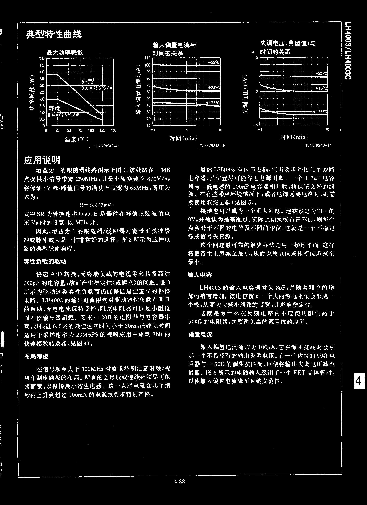
OCR 识别文字（可搜索层）
Oe ese
meer
ah on 8
典型特性曲线
输入偏置电流与 失调电压(典型值)与
最大功率耗散 时间的关系 - 时间的关系
50 T 10 rrrrrrrT 4 ST 7 TTT
45; - | ~~ + 一 100 -55°C 全二二十二 |
| 1
一 名 |一下 3 HH i ~ boo =
55上上一 as 80 一 +4 fae
区 ga | 叶2 二 a
Fd Os @K=33.5%C/W z 50 T | +25°C) Z 下
| Tt TH TI ’
wo { Iz 50 | 二 a Hite t i | 二
ad 15 环境| 二一 — Par) — feat 25°C ng Lt +4
7 # 3 rt 4 aK — ¢ #125%
as pa mt } Hot |
0 | i 】 10 | | i -5 1 加
0 f~) 50 7% 100 125 150 =1 10 =1 1 10
温度("C)
。 TL/K/9243-2
应用说明
增益为 1 的跟随器线路图示于图 1 ,该线路在一3dB
点提供小信号带宽 250MHz ,其最小转换速率 800V/ps
将保证 4V 峰-峰值信号的满功率带宽为 65MHz,所用公
KY:
B=SR/2nVp
式中 SR 为转换速率(hs);B 是器件在峰值正弦波值电
Hi Ve 时的带宽,以 MHz it.
因此,增益为 1 的跟随器/组冲器对宽带正弦波缓
冲或脉冲放大是一种非常好的选择。图 2 所示为这种电
路的典型脉冲响应。
窜性负载的驱动
快速 AD 转换.无终端负载的电缆等会具备高达
300pF 的电容量 ,故而产生稳定性(或建立)的问题.图3
所示为驱动这类容性负载而仍能保证最佳建立的补偿
电路。LH4003 的输出电流限制对驱动容性负载有明显
的帮助,充电电流保持受控,阻尼电阻器可以是小阻值
而不使输出级超载。要求一 200 的电阻器与电容器串
联,以保证 0.5%的最佳建立时间小于 20ns ,该建立时间
适用于采样速率为 20MSPS 的视频应用中驱动 7bit 的
快速模数转换器(见图4)。
布局考虑
在信号频率大于 100MHz 时要求特别注意射频/视
频印制电路板的布局。所有的图形线或连线必须尽可能
短而宽,以保持最小寄生电感。这一点对电流在几个纳
秒内上升到超过 100mA 的电源线要求特别严格 。
时间(Cmin)
时间(min)
TL/K/9243-10 TL/K/9243~11
虽然 LH4003 AN AB A AB LU BER SPR IL A
电容器,其位置尽可能靠近电源引脚。 fh 4. oF 电容
器与一低电感的 100nF 电容人器相并联,将保证良好的滤
波, 在有些噪声环境情况下 ,或者电针远离电路时,则需
要使用双级去耦(见图 5) 。
”接地也可以成为一个重大问题。地被设定为均 的
0V,并被认为是基准点。实际上如地线布置不良,则每个
点会处于不同的电位及不同的相位,这就是个不稳定
源或信号失真源。
这个问题最可靠的解决办法是用 -接地平面,这样
将使寄生电感减至最小,从而也使电位差和由位卷减至
最小。
输入电容
LH4003 的输入电容通常为 8pbF,并随着频率的增
加而稍有增加。该电容前面 -个大的源电阻值会形成
个极,从而大大减小线路的带宽 ,并影响稳定性。
这就是为什么在反馈电路内不应使用限值高于
5000 的电阻器,并要避免高的源阻抗的原因 .
偏量电流
输入偏置电流通常为 100pA,它在源阻抗高时会引
起一个不希望有的输出失调电压。有一个内接的 SOM 电
阻器与一 500 的并阻抗匹配,以便将输出失调电压减至
最低。图 6 所示的电路输入级用了 - -个 FET 晶体管对，
以使输入偏置电流降至亚纳安范围。
4-33
9E00PH1/E00FH1第 35 / 128 页
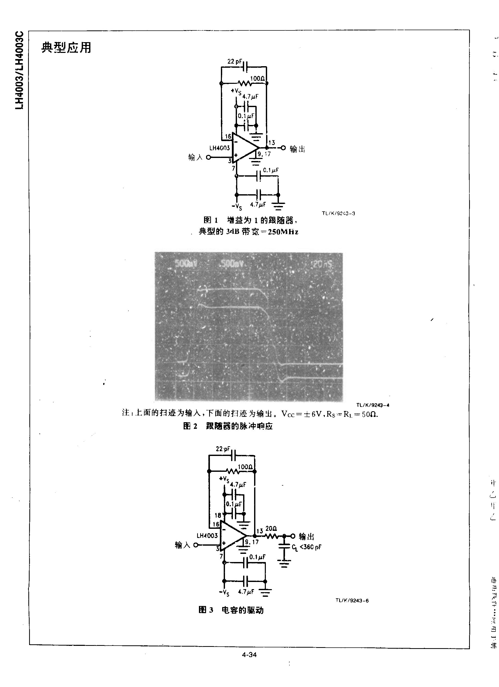
OCR 识别文字（可搜索层）
LH4003/LH4003C
典型应用
TL/K/S263-3
图1 增益为 1 的跟随器，
、典型的 34B 带宽=250MHiz
注:上面的扫迹为输入,下面的扫迹为输出。Vcc=士6V,Rs=Rr
图2 跟随器的脉冲响应
“Vy 47pr 一
TLAK/9;
TL/K/9243-4
= 500.
243-6
ve tng Shi AE
tk Lb fre第 36 / 128 页
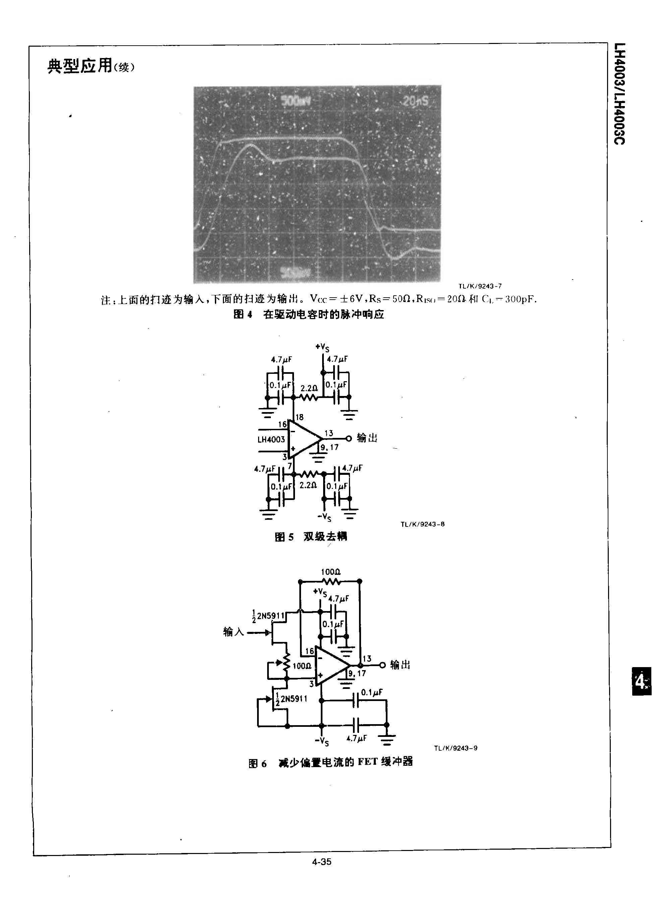
OCR 识别文字（可搜索层）
Pere
TL/K/9243-7
图4 在驱动电容时的脉冲响应
+YS
4.7uF
2.20, 0.1AF
输出
TL/K/9243-8
1000
TL/K/9243-9
Bo 减少偏什电流的 FET 缓冲器
4-35
注 :上面的扫捞为输入,下面的扫迹为输出。 Veco = £6V,Rs= 500, Riss = 200 Al C= 300pF.
IEOOPH1/E00PH1第 37 / 128 页
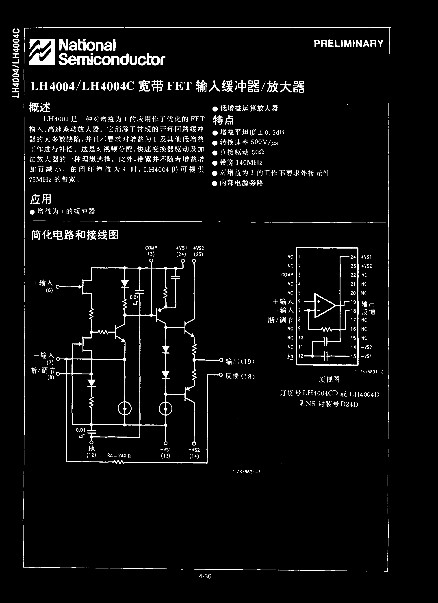
OCR 识别文字（可搜索层）
LH4004/LH4004C
National
Semiconductor
PRELIMINARY
LH4004/LH4004C 宽带FET 输入缓冲器/放大器
概述
LH4004 是 -种对增益为 1 的应用作了优化的FET
输入高速差动放大器。它消除了常规的开环回路缓冲
器的大多数缺陷,并且不要求对增益为1 及其他低增益
工作进行补偿。这是对视频分配、快速变换器驱动及加
法放大器的--种理想选择。此外,带宽并不随着增益增
加而减小。在闭环增益为4 时, LH4004仍可提供
75MHz 的带宽 。
@ 低增益运算放大器
特点
@ $8 mF 3H Bt 0. 5dB
@ IRS 500V/ps
e@ AERA 500.
二带宽 140MHz
@ 对增益为 1 的工作不要求外接元件
@ 内部电源旁路
应用
和@增益为1 的缓冲器
简化电路和接线图
COMP 4VYS1 4VS2
13) (24) (23) NC
| NC
COMP
十输入 NC
(6) NC
十输入
一输入
新/调节
NC
NC
NC
lA) © 输出(19) 地
断/调 v TL/K./8831 -~2
RA= 2400
Bf 8)
BA
订货号1LH4004CD 或 LH4004D
见NS 封装号D24D
TL/K/8831-1
4-36第 38 / 128 页
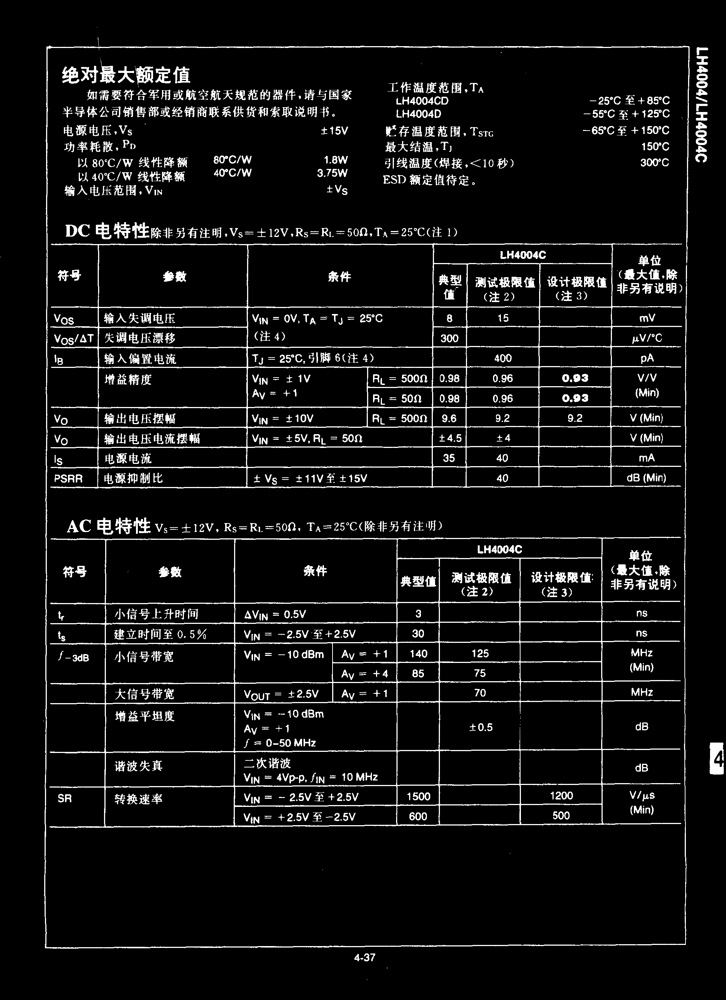
OCR 识别文字（可搜索层）
SHB AME IA
4-37
如需要符合军用或航空航天规范的器件,请与国家 。 工作温度范围,TA psc € 4880
半导体公司销售部或经销商联系供货和索取说明书。 LH4004D 一55"C 至+125"C
电源电压,Vs +15V 贮存温度范围, Tsrc -65C至+150C
功率耗散, Po 最大结温,T) 150°C
LA 80°C/W 线性降额 -BO°C/W 1.8W 引线温度(焊接,<10 秒) 300C
以40C7W 线性降额40"C/W 3.75W ESD 额定值待定，
输入电压范围,Vm 土VS
DC 电特性除非另有注明,Vs= + 12V. Rs=R = 500,TA=25"C(注 1)
~ T
LH4004C 单位
id 参数 条件 典型 | 测试极限值| 设计极限值| SAM
值 | GE 2) (注3) | 非另有说明)
Vos 输入失调电压 Vin = OV, Ta = Ty = 25°C 上 8 | 15 | mV
Vog/AT | 失调电压漂移 GE 4) 300 AVAC
ip | A SEH Ty = 25°C, SIV 6 GE 4) | 100 | pA
增益精度 Vin = 二1V Ri = 5000| 0.98 0.96 0.93 V/V
Ay = +1 _ (Mi )
| Vv Ri = 500 | 0.98 | 0.96 | 0.93 "
Vo 输出电压摆幅 Vin = +10V RL= 5000] 96 | 92 | 92 V(Min)
vo | 输出电压电流摆幅 Vin = +5V,RL= 500 Taz45| +4 V (Min)
Ig 电源电流 | 35 | 40 | mA
PSRR 二电源抑制比 土VSs = +11V¥ +15V 40 dB (Min)
AC 电特性 v,= +12V, Rs=Ri=50M, Ta=25°C RAE BA IEW
| , LH4004C att
ied 参数 a 测试极限值 | 设计极限值 | EAE
Re ED GE 3) 非另有说明)
十一
fr Ma 号上升时间 AVIN = 0.5V | 3 | ns
ts TT B 0.5% Vin = 一2.5V 至+2.5V 30 L ns
Tone =- = 0 125 MH
/ -3dB 小信号带宽 VIN 10 dBm me = +1 {| 14 二 L ve
y= +4} 85 75
oe 一一个 一
| 大信和号带宽 Vout = +2.5V | Av = +1 {|__| 70 [ MHz
Se 2 7 SBE Vin = -10 dBm
Ay= +1 +05 dB
f = 0-50 MHz
-一一-一| 4 - 十 十一
谐波失真 二次谐波
Vin = 4Vp-p, fin = 10 MHz | L L
SR 转换速率 | vn= -25V至+25Y | 1500 1200 V/ps
| Vin = +2.5V 3 -2.5V 600 | 500 | Min)
SP00PHT/PO0PHT第 39 / 128 页
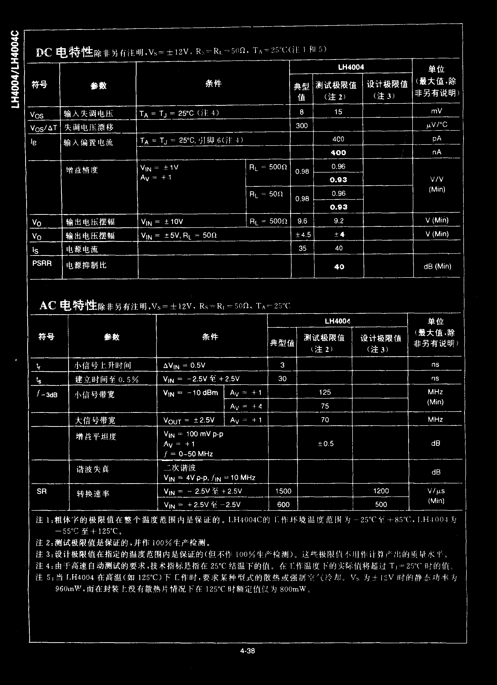
OCR 识别文字（可搜索层）
LH4004/LH4004C
DC 电,特性除非另有注明,Vs= 士12V， Re aR = 508. Ta=25°CGE | AIS)
LH4004 单位
符号 参数 条件 典型|测试极限值 | 设计极限值 | (最大值,除
ff | (注2) (注3) FEA AWAD
Ty T
Vos “|输入失调电夺|TA= Ty = 25C GED) | 8 15 mV
Vog/ OT | 失调电压漂移 300 vc
le 输入偏置电流 [Ta = Ty = 25°C, 引脚6(注4) 400 pA
400 nA
+ r -
499 78 BYE Vin = +1V Rt = 5002 0.98 0.96 _|
Av= +4 0.93 VAV
一 (Min)
RL = 502 | ogg 0.96 |
0.93
Vo err Vin = 土10V Ru = 5002] 9.6 | 9.2 V (Min)
Yo 输出电压摆幅 [Yin = +5V,R, = 500 +4.5 +4 V (Min)
Is | sea | 35 40
PSRR | 电源抑制比 40 dB (Min)
一一
AC 电特性除非另有注骨 ,Vs一士12V、Rs一RI = 500, Taz 25°C _
LH4004 单位
符号 参数 条件 测试极限值 | 设计极限值 | BASE
典型 上
典型值 GED GG 3) 非另有说明)
| an 十
tr 小信号上升时间 | AVIN = 0.5V | 3 ns
ts 7 [A] F 0.5% Vin = —2.5V 至十2.5V 30 | ns
六-3dB 小信号带宽 | Vin = -10dBm | Ay = +1 | 125 MHz
Ay = +4 | 75 (Min)
大信和号带宽 Vout = +2.5V | Av= +1 70 MHz
二 一
增益平坦度 Vin = 100 mV p-p
Ay = +1 +05 dB
| /= 0-50 MHz
谐波失真 二次谐波 4B
. Vin = 4V p-p, fin = 10 MHz
SR 转换速率 Vin = — 2.5V % +2.5V 1500 | 1200 V/s
| Vin = +2.5V 4 —2.5V 800 | 500 (Min)
注 1 LA BY RR Ae EPH
of
一55“ #+125°C,
注 2:测试极限
值是保证的,并作 100儿生产检测。
内是保证的。LH4004C的工作环境温度范围为一25"C乍十85"C，LH4004 为
注 3:设计极限值在指定的温度范围内是保证的(但不作 100站后产检测)。这些极限值不用作计算产出的质量水站。
注 4:由于高速自动测试的要求 ,技术指标是指在 25°C 结温下的值。在工作温度下的实际全将超过 Ti= 25°C 时的值，
注 5:当1LH4004 在高温(如 125"C)下工作时,要求某种型式的散热或强盎空气聆却。Vs 为十12V BAR OY
960mW ,而在封装上没有散热片情况下在 125°C 时额定值仅为 800mW 。
4-38第 40 / 128 页
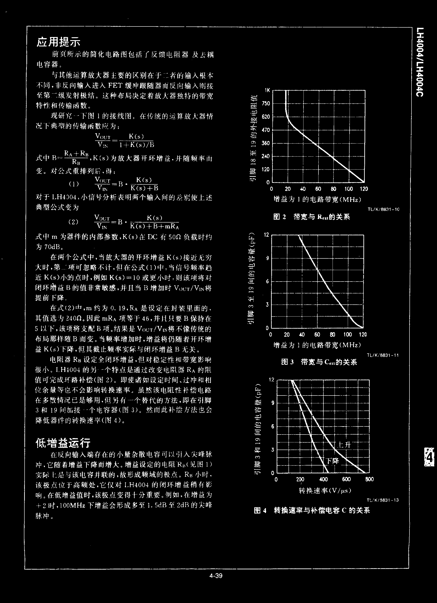
OCR 识别文字（可搜索层）
应用提示
前页所示的简化电路图包话了反馈电阻器 及云看
电容器，
与其他运算放大器主要的区别在于一者的输入根本
不同 ,非反向输入进入 FET 缓冲跟随器而反向输入则接
至第一级发射极结。这种布局决定着放大器独特的带宽
特性和传输冰数。
现研究- -下图 1 的接线图 在传统的运算放大器情
总下典型的传输天数应为:
VYouT _ KGs)
Vin 1+K(s)/B
A Be= Rs 1K (8) CK ae FP Ea it SFB Bat it
变。对公式重排列后,得:
a) Vour K(s)
Vinx =B: K(s)+B
对于 LH4904 , ee Sd BT Fe BA Pa A nd fle bu
典型公式变为
(2)
Vout_p,____ KG)
Vin K(s)+B+mRa
A m ASEM ABS WK (s) A DC #500 负载时约
为 70dB。
在两个公式中,当放大器的开环增益 K(s)接近无穷
大时 ,第项可忽略不计,但在公式(1)中,当信号频率趋
近玫(s)小的点时,例如K(s)一10 或更小时,则该项将对
闭环增益B 的值非常敏感,并且当 了增加时 VooryVin将
提前下降.
在式(2)中,m约为0.19,RA 是设定在封装里面的，
其值选为 240Q。因此 mRA 项等于 46,并用只要也保持在
5 以下,该项将支配了项。结果是 VooTVyVis将不像传统的
布局那样随了而变。当频率增加时,增益将仍随着开环增
赣KG)下降,但其截止频率实际与闭环增益 了 无关。
FELBEL dS Re 设定全闭环增益,但对稳定性和带宽影响
很小 LH4004 的另: -个特点是通过改变电阻器 RA 的阻
值可完成环路补偿(图 2)。即使者如设定时间、过冲和相
位余量等也不会影响转换速率。虽然该电阻性补偿电路
在多数情计已是够用,但另有一个替代的方法,即在引脚
3 和 19 问棉接 -个电容器(图 3)。然而此补偿方法也会
降低器件的转换速率(图 4)。
低增益运行
在反向输入端存在的小量杂散电容可以引入尖峰脉
冲 ,它随着增益下降而增大。 增益设定的电阻 Ra(匈图 1)
实际七是与该电容并联的 ,故形成频域的极点。Rs 小时，
该极点位于高壬处,它仅对 LH4004 的闭环增益稍有影
响。在低增益值时,该极点变得十分重要.例如,在增益为
十2 时,100MHz 下增益会形成多至1.5dB至 2dB 的类峰
脉冲。
1K ;
= 750 -一二-
Fe 620 下 |
ae
A 470+ +
后
2 360上 一一一一
KH 240 上-一 一- -一一-
2 iF
gm 120 { 一
iy 0
0 20 40 60 8 100 120
增益为 1 的电路带宽(MHz)
TL/K/8831-10
图2 带宽与 Reach HR
fe
si
&
型
至
五
Cn
4
on
Pa
ap
0 20 +40 6 100 120
增益为 1 的电路带宽(MHz)
TL/K/BB31-11
3 带宽与Ce的关系
和
©
T
|
|
wo
1
引脚 3 和 19 闻的电容量(pF)
Oo
200 400 600 800
be HR CV /us)
oOo
TL/K/3831~-13
4 转换速率与补偿电容 C 的关系
4-39
Op0oyHT/A00HT第 41 / 128 页
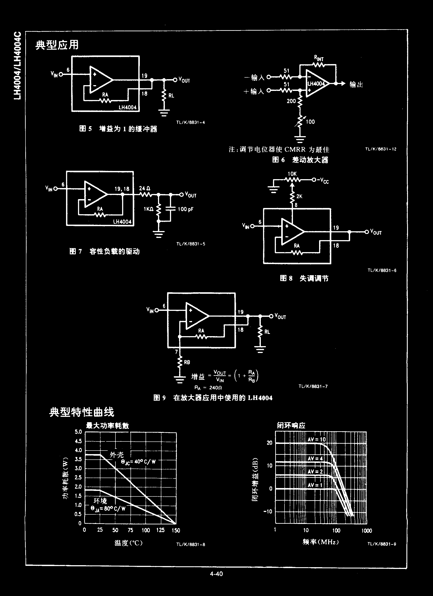
OCR 识别文字（可搜索层）
LH4004/LH4004C
RINT
5
51 输出
一输入
十输入
200
TL/K/8831 -4 100
图5 增益为 1 的缓冲器
注:调节电位器使 CMRR 为最佳 TL/K/8831-12
图6 差动放大器
TL/K/8831~5
图7 容性负载的驱动
TL/K/8831-6
= Your - (: + a)
= 增益 - Re
A, = 2400 TL/K/6831-7
图9 在放大器应用中使用的 LH4004
典型特性曲线
BADEN 闭环响应
5.0 —— —
45 A¥V=10
40
35
3.0
25
2.0
15
1.0
05
10
功率耗散(W)
闭环增益(dB)
=
u
TL/K/8831~9
4-40第 42 / 128 页
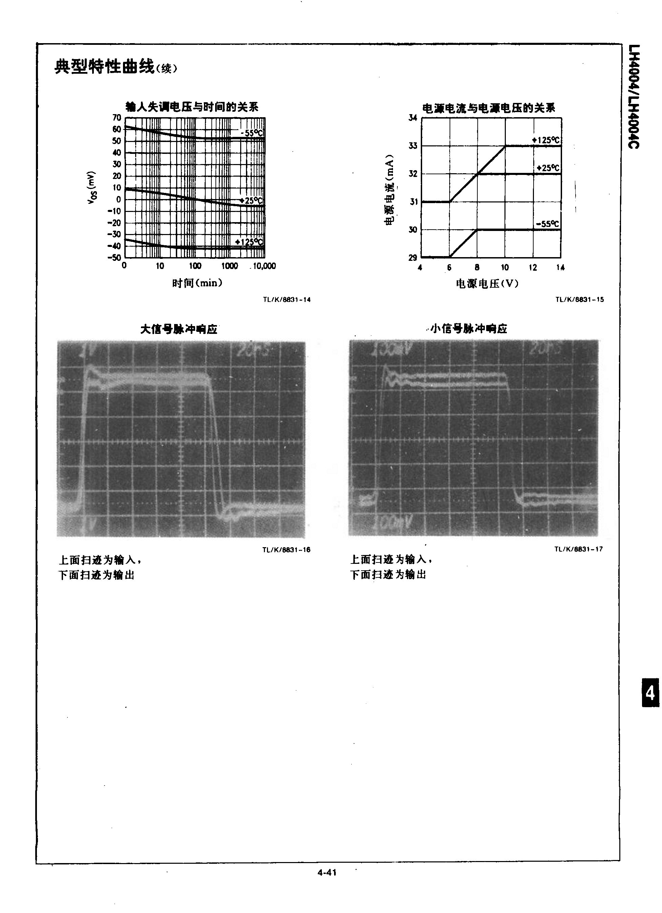
OCR 识别文字（可搜索层）
典型特性曲线(续
输人失调电压与时间的关系 电源电流与电源电压的关系
se i aa
Ut | |
we =
Ce]
Uy
| a
TT OT
pT TTT «1 25ech
[ET
电源电流(mA)
电源电压(V)
TL/K/8831 ~14 TL/K/8831-15
大信号脉冲响应 . “小信号脉冲响应
TL/K/8831 -16 TL/K/8831-17
上面扫迹为输入， 上面扫迹为输入，
Flag Amd 下面扫迹为输出
Dv0CHHT/PO0PHT第 43 / 128 页
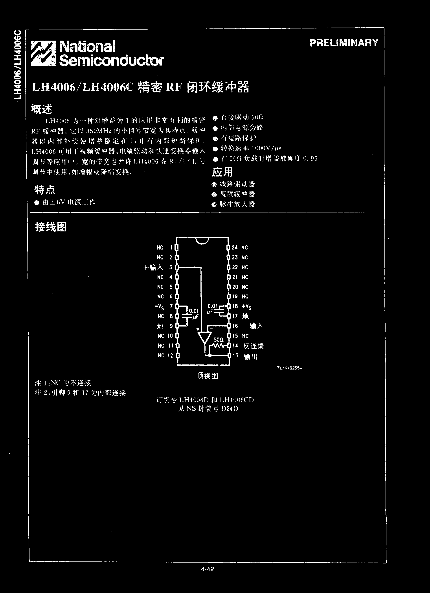
OCR 识别文字（可搜索层）
LH4006/LH4006C
i Naticnal PRELIMINARY
2 Semiconductor
LH4006/LH4006C 精密 RF 闭环缓冲器
概述
LH4006 为-种对增益为 1 的应用非常有利的精密 @ Fedo) 500
RF 缓冲器, 它以 350MHz 的小信号带党为其特点。缓串“登 太部电源党路
器以内部补偿使增益稳定在 1,并有内部短路保护。 和@ 有短路保护
LH4006 可用于视频缓冲器.电线驱动和快速变换器输入 @ HEHE 1000V /ps
调季等应用中。宽的带宽也允许LH4006 A RE/IF 信号 时在500 负载时增益准确度 0. 95
调节中使用,如增幅或降幅变换。 应用
ao 线路驱动器
特点 @ 视频缓中器
和@ 由士6V REO © 脉冲放大器
接线图
NC 1 24 NC
NC 2 23 NC
十输入 3 22 NC
NC 4 21 NMC
NC 5 20 NC
NC 6 19 NC
“Vs 7 18 +Vs
nc 8 17 地
地 9 16 一输入
NC 10 15 NC
NC 11 14 反连局
NC 12
13 输出
TL/K/9255-1
Te
iE 1:NC 为不连接
注 2:引脚 9 和 17 为内部连接
订货导 LH4006D 和LH4006CD
见NS封装号D24D
4-42第 44 / 128 页
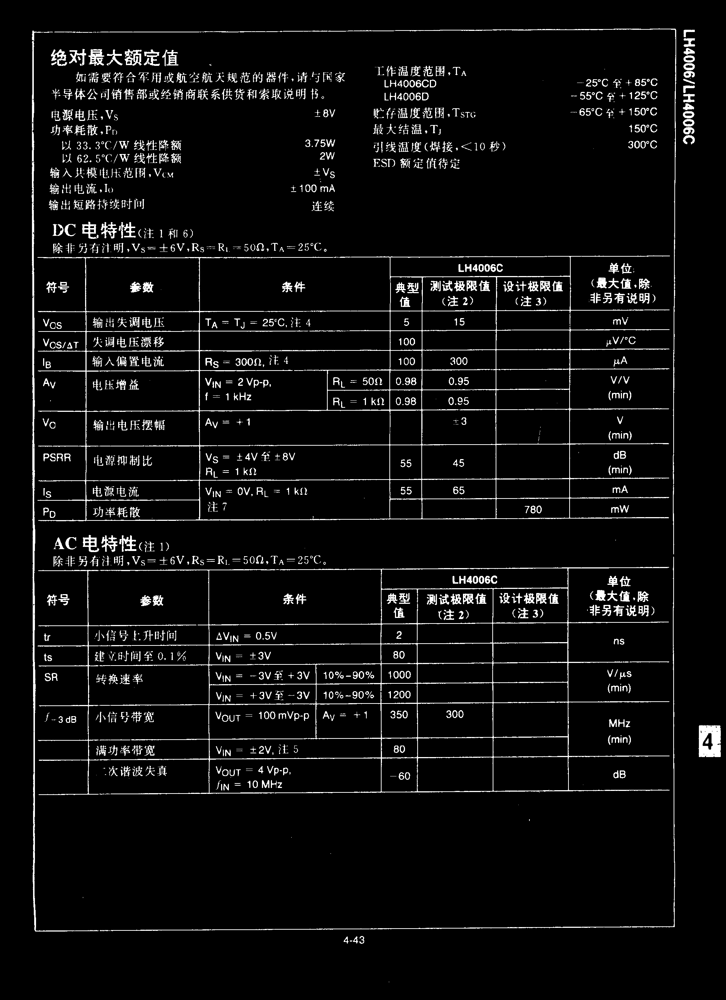
OCR 识别文字（可搜索层）
绝对最大额定值
Tad fee OM BX HHL HF BRO te 工作温度范围,T
如需要符合军用或航空航天规范的器件,请蕊民家 LH4006CD A 25°C # +85°C
半导体公司销售部或经销商联系供货和索取说明 节。 LH4006D 一55*C 到十125"C
电源电压,Vs +8V 贮存温度范围,Tsrc 一65"C 到十150"C
SHR RE RL. Po 最大结温,Ti 150°C
VA 33. 3°C/W 线性降额 3.75W 引线温度(焊接,<10 BD) 300°C
以 62. 5°C/W 线性降额 2W Esp 额定值待定
输入共模电庄范围,Vew 土VS .
fg tH HTC» To +100 mA
输出短路持续时间 连续
DC BB REE ci: 1 Al 6)
Bedk 47 AA, Vs= 46V,R5= Ri =500,Ta,= 25°C,
LH4006C 单位;
符号 参数 条件 典型| 测试极限值 | 设计极限值 | 《最大值,除
值 GED GE 3) 非另有说明)
Vos 输出失调电压 |TA=T=25C,注4 5 15 | mV
Vosvat | 失调电压漂移 100 pv
Ip 输入偏置电流 [Rs = 3000, 7E 4 100 300 pA
Ay HE He 8 25 Vin = 2 Vp-p, Ry = 5092 0.98 | 0.95 V/V
f= 1 kHz RL = 1ko | 0.98 0.95 (min)
Vo 输出电压摆幅 Ay= +1 +3 ; V
. Hl (min)
PSRR | wa yea ay it Vg = $4V # +8V dB
; RL = 1k 58 45 (min)
Ig | 电源电流 Vin = OV, RL = 1k0 55 65 mA
Po 功率耗散 te? 780 mw
AC ERAS TE Gt
es AAA, Vs = +6V,Rs=R, =500,Ta = 25°C,
LH4006C 单位
符号 参数 条件 典型 | 测试极限值 | 设计极限值 | AER
值 GED Ex) | '非另有说明)
tr 小信叶上上升时间 AVIN = 0.5V 2 4 ns
ts ae vet a] 4B 0.1% Vin = +3V 80 |
SR 续换速率 Vin = -3V至+3V | 10%-90% | 1000 | V/s
. Vin = +3V至-3V | 10%-90% | 1200 (min)
了-3dB Tne Eh te oF Vout = 100 mVp-p | Ay = +1 350 300 MH
了
[aon Vin = £2V, 1 5 80 mn
-次谐波失真 Vout = 4 Vp-p, _
fin = 10 MHz 60 0B
4-43
9900°H1/900PH1第 45 / 128 页
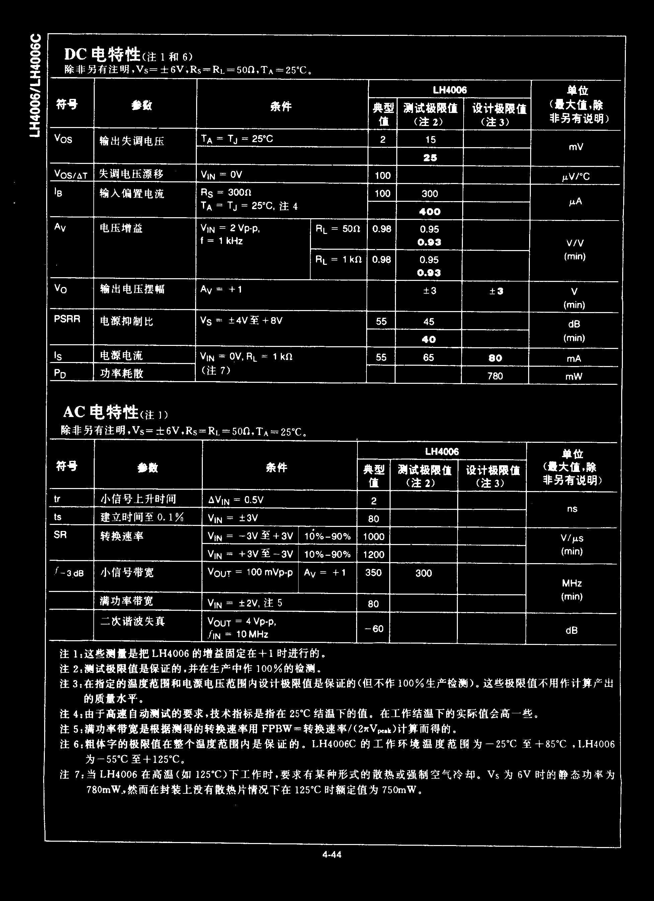
OCR 识别文字（可搜索层）
LH4006/LH4006C
DC 电特性(注1和6e)
BR AE 55 TE AA, Vs= 4 6V.Rs=Ri=502,Ta = 25°C,
L LH4006 单位
符号 参数 mH 典型| 测试极限值 | 设计极限值| 〈最大值,除
=n fi | GE» GE3) 非另有说明)
Tr ~一个一 + 十
Vos 输出失调电压 |TA = Ty = 28°C 2 il 15 nV
| 25
Vosvat | 失调电压漂移 | VnN=ov 100 | | PVAC
je 输入偏署电流 Rs = 3000 100 300 A
| [Ta = Ts = 28, 注4 上 400 Bs
Ay 电压增益 Vin = 2Vp-p， Ru = 500 | 0.98 0.95
f= 1 kHz 0.93 viv
三 个一 二一 十-.
RL = 1kn | 0.98 0.95 (min)
a | | o%93 |
Vo 输出电压摆幅 Av= +1 +3 +3 V
十 由 (min)
PSRR | 电源抑制比 Vg = +4V至+8V “| ss | 45 | dB
| | | | so | | (min)
Is 电源电流 Vin = OV, RL = 1kn 55 6 | so | mA
Po | 功率耗散 GE 7 TL 780 mw
AC 电特性(注))
除非另有注明,Vs=士6V,Rs=RL一500,TA一25"C。
厂 全
LH4006 | 单位
符号 参数 条件 典型 | 测试极限值 | 设计极限值 | 《最大值,除
4 | fi | Gea | GE» 非另有说明)
tr | 小信号上升时间 | AVin = 0.5V 2
ts | 建立时间至 0.1% | Vin = +3V | 80 | "
SR 转换速率 Vin = -3V至+3V | 16%-90% | 1000 | | V/s
| Vin = +3V ¥ ~3V | 10%-90% | 1200 (min)
1/-3dB | 小信号带宽 Vout = 100mvp-p | Ay = +1 | 350 300 上
MHz
十 | |
满功率带宽 Vin = £2V, HE 5 80 (min)
pe ses nm 十
二次谐波失真 Vout = 4 Vp-p,
fin = 10 MHz | dB
注 1:这些测量是把 LH4006 的增益固定在十1 时进行的。
注 2:测试极限值是保证的,并在生产中作 100%的检测 。
TE 3:在指定的温度范围和电源电压范围内设计极限值是保证的(但不作 100%生产检测)。这些极限值不用作计算产出
的质量水平。
注 4:出于高速自动测试的要求 ,技术指标是指在 25"C 结温下的值。在工作结温下的实际值会高一些。
注 5:满功率带宽是根据测得的转换速率用 FPBW =转换速率/(2x*Vee)计算而得的。
注 6:粗体字的极限值在整个温度范围内是保证的。LH4006C 的工作环壕温度范围为一25"C 至十85"C ，LH4006
为一55"C 至十125"C 。
注 7:当LH4006 在高温(如 125"C)?下工作时,要求有某种形式的散热或强制空气冷却。Vs 为 6V 时的静态功率为
780mW,然而在封装上没有散热片情况下在 125°C 时额定值为750mW 。
4-44第 46 / 128 页
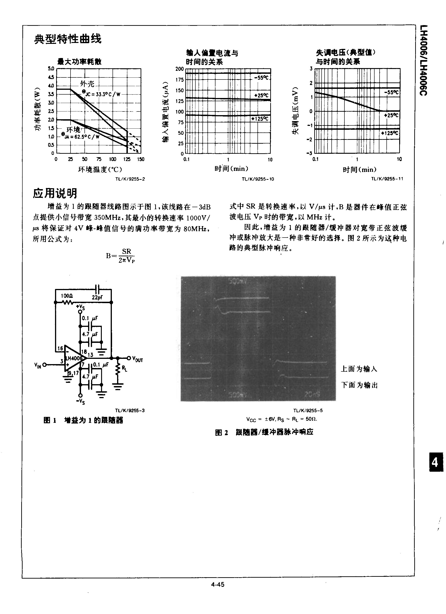
OCR 识别文字（可搜索层）
=
<=
典型特性曲线 z
输和人偏十电流与 失调电压(典型值) &
最大功率耗散 时间的关系 与时间的关系 rc
50 200 — 3 =
ss r=
~ 4 人 a S
B 3s = > oO
= » ig 三
跟 乞 ® 4
a 20 a =
Ro Z K
#
05
0 0
0 yw] 50 7% 1100 125 150 0.1 1 10
环境温度(“C) fy ja] (min) tf [A] (min)
TL/K/9255-2 TL/K/9255-10 TL/K/9255-11
应用说明
增益为 1 的跟随器线路图示于图 1 ,该线路在一3d4B 式中 SR 是转换速率,以 V/ns 计,B 是器件在峰值正弦
点提供小信号带宽 350MHz ,其最小的转换速率 1000V/ 波电压 Vp 时的带宽,以 MHz 计。
ws 将保证对 4V 峰-峰值信号的满功率带宽为 80MHz， 因此,增益为 1 的跟随器/缓冲器对宽带正弦波组
所用公式为，; 冲或脉冲放大是一种非常好的选择。图 2 所示为这种电
SR 路的典型脉冲响应。
po SR ‘
2nVp
上面为输入
下面 为输出
TL/K/9255-3 TL/K/9255~5
图1 增益为1 的跟随器 Voc = +6y,Rs = Ry = $081.
2 跟随部/缓冲器脉冲响应第 47 / 128 页
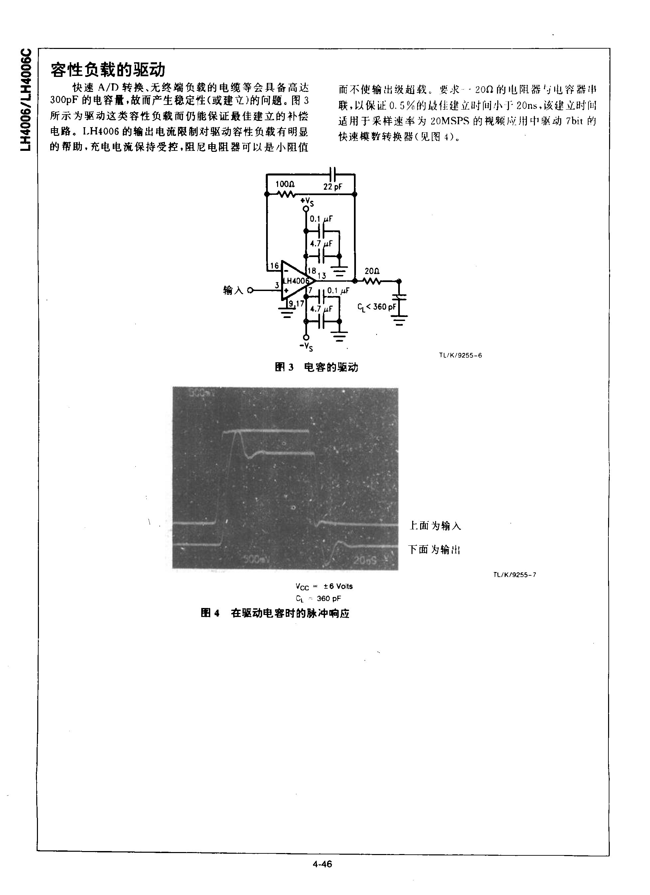
OCR 识别文字（可搜索层）
LH4006/LH4006C
容性负载的驱动
快速 A/D 转换.无终端负载的电缆等会具备高达
300pF 的电容量 ,故而产生稳定性(或建立)的问题.图3
所示为驱动这类容性负载而仍能保证最佳建立的补偿
电路。LH4006 的输出电流限制对驱动容性负载有明显
的帮助,充电电流保持受控,阻尼电阻器可以是小阻值
mit ae 要求- 200 1 HY BA ae Sy AY ah
FR VA PRuE 0. 56 (HY be TE aE IY Ta] > 20ns ,该建立时间
id AT REE 4 20MSPS 的视频应 aie 7bit 的
快速模数转换器(见图 4) 。
TL/K/9255-6
TL/K/9255-7
Veo = +6 Volts
C =
360 pF
4 在驱动电容时的脉冲响应
4-46第 48 / 128 页
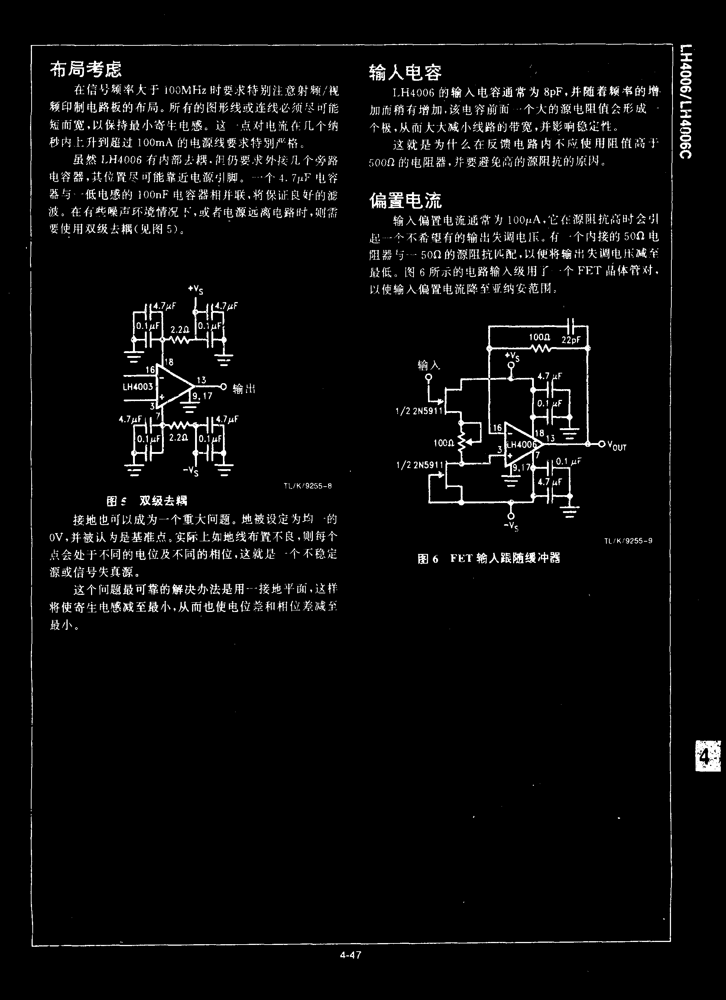
OCR 识别文字（可搜索层）
布局考虑
在信号舌率大于 100MHiz 时要求特别注意射频/视
频印制电路板的布局。所有的图形线或连线必须尽可能
短而宽,以保持最小寄生电感。这 :点对电流在几个纳
秒内上升到超过 100mA 的电源线要求特别严格。
虽然 LH4006 有内部去斐,得仍要求外接凡个淮路
电容器,其位置尽可能香近电源引脚。…个 4. TF 电容
器与-低电感的 100nF 电容器相并联,将保证良好的波
波。在有些噪声环境情况 下 ,或者电源近离电路时,则震
要使用双级去看(见图5) 。
TL/K ‘9255-8
RRA
fis
接地也可以成为一个重大问题。地被设定为均 -的
OV ,并被认为是基准点.实际上如地线布置不良,则每个
点会处于不同的电位及不同的相位,这就是 -个不稳定
RRS KA.
这个问题最可靠的解决办法是用一接地平面,这样
将使寄生电感减至最小,从而也使电位差和相位差减公
最小。
输入电容
LH4006 的输入电容通常为 8PF,并随着频训的增
加而稍有增加,该电容前面…个大的源电阻值会形成 “
个极,从而大大减小线路的带宽,并影响稳定性。
这就是为什么在反馈电路内不应惩用阻值高二
5008 的电阻器,并要避免高的狐阻抗的原内。
偏置电流
输入偏置电流通常为 100pA,它在源阻抗高时会引
起一个不希望有的输出失调电压。有 -个内接的 509 电
阻器与… 500 的源阻拉虑配,以使将输出失调电压减友
最低。图 6 所示的电路输入级用了 -个FET 晶体管对，
以使输入伪置电流降至亚纳安范围，
输入
9
L,
1/2 2N5911
1002
1/22N5911
TL/K/9256-9
Bio FET 输入跟随缓冲器
4-47
9900?HT/900VH1第 49 / 128 页
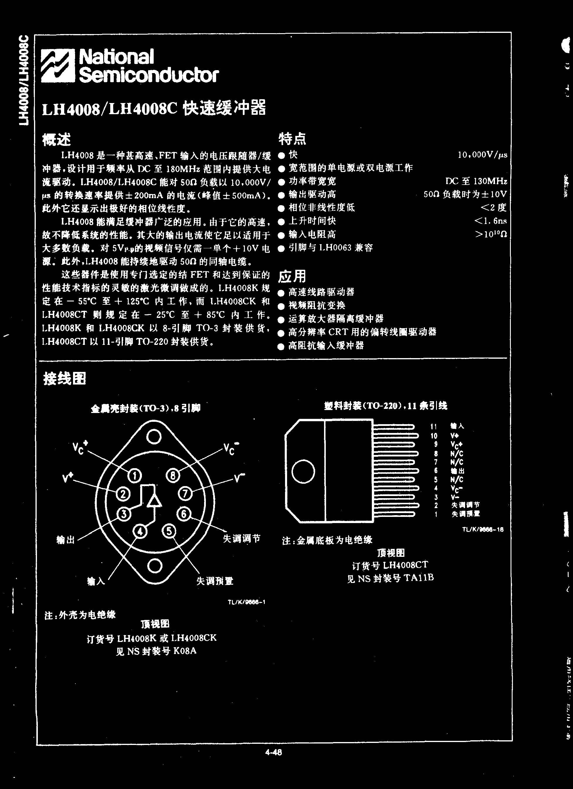
OCR 识别文字（可搜索层）
LH4008/LH4008C
National
& Semiconductor
LH4008/LH4008C 快速缓冲器
概述
L.H4008 是一种甚高速 .FET 输入的电压跟随器/组
冲器,设计用于频率从 DC 至 180MHz 范围内提供大电
流驱动。LH4008/LH4008C 能对 509 负载以 10,000V/
ps 的转换速率提供士200mA 的电流(峰值土500mA) 。
此外它还显示出极好的相位线性度。
LH4008 能满足缓冲器广泛的应用。 由于它的高速，
故不降低系统的性能。其大的输出电流使它足以适用于
大多数负载。对 5Vpe的视频信号仅需一单个十10V 电
源。此外,LHRH4008 能持续地驱动 500 的同轴电缆。
这些器件是使用专门选定的结 FET 和达到保证的
性能技术指标的灵敏的激光微调做成的。LH4008K 规
定在一55C B+ 125°C 内工作,而 LH4008CK 各
LH4008CT 则规定在一25"C 至十85C 内工作。
LH4008K 和 LH4008CK 以 8-5] Be TO-3 封装供货，
LH4008CT 以 11-引肢 TO-220 封装供货。
接线图
@RRHE(TO-3).8 310
TL/K/9666~-1
iE SE BR
RE
订货号 LH4008K 或 LH4008CK
见 NS 封装号天08A
@快 10,000V/ps
@ 宽范围的单电源或双电源工作
@ 功率带宽宽 DC 至 130MHz
eo 输出驱动高 500 负载时为土10V
@ 相位非线性度低 <2 度
@ 上升时间快 <1. 6ns
eo 输入电阻高 >10°
@ 引脚与1.H0063 兼容
应用
@ 高速线路驱动器
@ 视频阻抗变换
© 运算放大器隔离缓冲器
@ 高分辩率 CRT 用的偏转线图驱动器
@ 高阻抗输入缓补器
最料封装(TO-220) ,11 条引线
一hu和Un
—~
a
TLK/9866-18
注 :金属底板为电绝缘
顶视图
订货号 LH4008CT
见 NS 封装号TAI11B
ce
Were:
ec nem ol os Os ae第 50 / 128 页
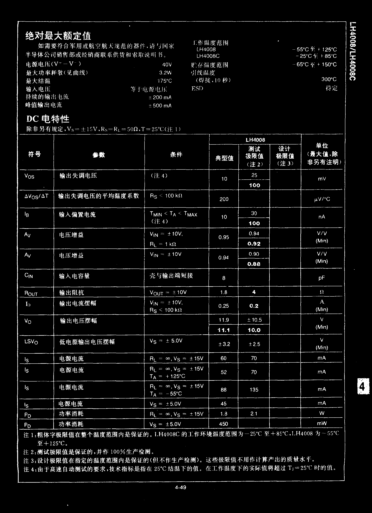
OCR 识别文字（可搜索层）
绝对最大额定值
如需要符合军用或航空航大纲范的器件,请与周家
工作温度范围
- 7 LH4008 —55°C ® + 125°C
半导体公司销售部或经销商联系供货和索取说明节。 LH4008C ~ 25°C ¥ + 85°C
电源电讨(V- 一V- ) 40V 贮存温度范围 ~ 65°C ¥ + 150°C
OES 2 GO ies @ 3.2W 1] AR HA IE
fa k ih 175°C CELHE 10 Bb) 300°C
输入电讨 “BT CL ESD 待定
持续的输出电流 +200 mA
峰值输出电流 +500 mA
DC 电特性
BRAE A BE» Vs= $15V.Rs=R. = 50,7 = 25°C CE 1)
LH4008 te
a 测试 设计
符号 参数 条件 典型值 | BER | 极限什 (最大值,除
GE2 (#3) 非另有注明)
Vos 输出失调电压 GE 4) 10 25 | mv
400
AVos/AT | 输出失调电压的平均温度系数 | Rs < 100 kn 200 avec
la 输入偏置电流 TMIN < Ta < TMAX 40 30 nA
GE’) 100
+
Ay 电压增益 Vin = 鞋10V， 0.95 0.94 | V/V
RL = 1k0 0.92 (Min)
Av 电压增益 Vin = +10V 0.90 V/V
0.94 cea (Min)
Cin 输入电容量 壳与输出端短接 8 pF
Rout 输出阻抗 Vout = +上10V 1.8 a | | a
I 输出电流摆幅 Vin = 2£10V, A.
° Rs < 100 ka 0.25 0.2 7 (Min)
Vo 输出电压摆幅 11.9 +10.5 V
41.1 40.0 (Min)
LSVo 低电源输出电压摆幅 Vg = £5.0V $32 £25 过
(Min)
is | 电源电流 RE = ©,Vg = 土15V 60 70 mA
Is 电源电流 RL = co,Vs = +15V
Ta = +125°C 52 70 mA
is 电源电流 RL = ©, Vg = 土1SV
| T = 85°C 88 135 | mA
Is 电源电流 VS = +5.0V 45 mA
Pp 功率消耗 RL = oo,VSs = +15V 1.8 21 | w
Po i 功率消耗 Vg = +5.0V 450 mw
注 1:粗体字极限值在整个温度范围内是保证的。开
至十125"C 。
注 2:测试极限值是保证的,并作 100%%生产检测。
注 3:设计极限值在指定的温度范围内是保证的(但不作生产检测)。这些银限值不用作计算产出的质量水平。
注 4:由于高速自动测试的要求 ,技术指标是指在 25°C 结温下的值。在工作温度下的实际值将超过 Ti一25"C 时的值。
H4008C 的工作环境温度范围为一25"C 至十85"C.LH4008 为一55"C
4-49
D800PHT1/800¢H 7第 51 / 128 页
OCR 识别文字（可搜索层）
LH4008/LH4008C
DC 电特性
除非另有规定,Vs=寸15V,Rs=RL一500,TA王25"C(注 1)(续)
|
LH4008C
T aay] tt
符号 测试 设计
参数 at 典型值 | 极限值 | 极限值 | See
t | Gea | GS» “
Vos 输出失调电压 (注4) 10. 50 | mv
AVos/AT | #8444 平 | |
os 输出失调电讨的平均温度系数“| Rs < 100kn 200 ave
1 | _
| | |
B 输入偏置电流 NS Ta < TMAX 10 30 nA
Ay 电压增益 Vin = £10V, | | 一
| -tm | 0.95 | 0.92 v/v
Ay 电压增益 | Vin = +loV 0.94 0.9 VAV
Cin 输入电容量 壳与输出端短接
| 8 pF
Rout 输出阻抗 | Vout = £10V | 1.8 4 T a
lo 输出 Se _ ae 100 ne 0.25 0.2 | “Ais
Vo 输出电压摆幅 L _[ 119 站 +10.5 V
LSVo 。 | 低电源输出电压所由 vs = + 5.0¥ a2 | aos rn
| ”| 一 (Min)
Is 电源电流 Ry = ©, Vg = +15V 60 | .7o mA
电源电流 [Vs = +5.0V | 45 | mA
PD 功率消耗 RAL = co,Vs = +15v | 1.8 24 Ww
Pp 功率消耗 Vg = +5.0V 450 | | mw
AC 电特性LH4oos(Ti=25*C,vs=上15V,Rs=Rre=500)
下 LH4008C/LH4008
单位
符号 参数 ste 典型值 | 测试极限值| 设计极限值| OAT
| GE 2) GE 3) 非另有注明)
Sn 转换速率上升沼 Vin = 20 Vp.p
， | 20%-80% 10000
Sn 转换速率下降沿 Vin = 20 Vp-p | 7000
20% -B80% |
TK [ Vin = 1.0 Vrms _| 180 I 160
功率带宽 | vn=20vpp | 1 | 1
相位非线性度 BW = 1.0to50 MHz 2
上升时间 | AVIN = 20 Vp_p | 16 |
AVin = 20 Vp.p
+125°C,
注 2 ARE RIES HEHE 100%生产检测。
注 3,设计极限值在指定的温度范围内是保证的(但不作生产检测)。这些极限值不用作计算产出的质量水平。
注4:由于高速自动测试的要求 ,技术指标是指在 25"C 结温下的值。在工作温度下的实际值将超过 T= 25°C 时的值。
4-50第 52 / 128 页
OCR 识别文字（可搜索层）
TL
=
典型特性曲线 5
Go
最大功率耗秀 电源电流与 =
SAR RR ; 本 几电源电压的关系 =
6 -一一
PFE (x, = 15°C/W) Lt. eae 2
5 一 人 200 ~ 8 4
区 4|-一上一十-二 — & 100 <t 上 +25
#8 环境 (Oy = 40°C/W) Pe 8 bo上 +125
we 3 = --一 的 = .
器 |上 33.
及 z 100 Be |
1 —— +--+ - 4 -200 #2
Q =300 0 JU L
0 2 \50 75 100 125 150 “15-10 -5 0 5 10 15 5 10 15 20
温度("C) 输出电压(V) 电源电压(士V)
输出摆幅与 ”输入偏置电流 -
电源电压的关系 与温度的关系 增益相位与频率的关系
45 如 站 =
-人 $26 | is =R, = 500
Vg 52 15¥
G Vin=1 Verna
126 a? i
a nn 3 45 +180 一
三 @ -| | | 到
€ 5 = “15 — 0
zo “
-180
0 | |出
5 10 15 20 -50 0 50 100 10 ， 100 1000
电源电压 Ha BE CC) 频率(MHz)
TULK/9666-5
SS EAH 小信号下降时间
3 100 m¥/div. | > 100 mv /div. in
局 局
> R= 508 >
& | Yest15Y A R, =500 |
3 六 | | 3 Vert 15¥
2 =
5a 4
& 500 ps/abv. | Ry 1ns/div. i |
时间(500ps/div) 时间(lns/div) .
TL/K/9666-12 TLIK/9666-13
大信号上升时间 大信号下降时间
7 5V/aW.
全 DEE 7 Ee 2500
x LE a] initial
we = WEE1SY
> V¥g= 8 15¥ B a 二
局 4
5 2
= eal
= 上 &
500 ps/div. L 500 ps/dw.
itt fa] (500ps /div) BY le] (500ps/div)
TL/K/9666- 14 TLIK/9666-15
4-51第 53 / 128 页
OCR 识别文字（可搜索层）
LH4008/LH4008C
| 带宽测试电路
网络分析器
HPB753A
iP
1667;
TL/K/9656-3
应用提示
推荐的布局注意事项:当使用LH4008 时,因它要对
超过 180MHz 的频率提供功率增益 ,故必须遵守 RF/视
频印制电路板的布局规则。推荐使用接地平面,每个器
件的电源应接一低电感的电容器去耦。此外,接地平面
屏藏可延伸至器件的金属外壳,因为外壳与内部电路是
减至最小。
O+15V
O~15¥
TL/K/9666-6
图 2 Ke
短路保护:可以在V+和Vt 引脚间及V -和Vc 引
脚间接入一阻值合适的电阻器来作短路保护,如图 2 和
Asha. BT FARM:
Vt _ Ve
Rum Tee Tac
FE i HH A ES SO i Pt
电压的摆幅.用接地的电容器使vt A Vc 引脚去看,将
对瞬态脉冲保持满输出摆幅。 “
ia =0.1 yr
TL/K/9666-7
a
图3 用电阻器限流
电绝缘的。另一方面,外壳应接至输出端,使输入电容量
功率带宽测试电路
网络分析器
HPB753A
EME
f } -
= > 人
多个电源
HP141557A
TLAK79666-4
SHEAR: Lit LH4008 Fl eK MILT
FL 2S RS Fe A Se ER He HA BR
但由(CXdV/dt)形成的峰值电流,应限制在器件的绝对
最大峰值电流额定值以下 。
7
AV
(an) x CL < Igyt < “£500 mA
此外,由驱动容性负载而形成的功率耗散加上备用
功率应保持在封装功率额定值以下，
Puiss > Poc + Pac
pkg.
Puiss > (V+ — V—-) * Ig + Pac
pkg.
Pac = (Vp.p)? x fx CL
式中:
VP-p为峰-峰输出电压摆幅
f 为频率
Cr 为负载电容量 .
在运算放大器环路内工作:器件可以作为电流增强
器或隔离缓冲器在有运算放大器(如 LH0032,LM6161
或LM118)的闭环回路中使用。在运算放大器的输出端
和 LH4008 输入端之间应接一个 4720 的隔离电阻器。
LH4008 宽的带宽和高的转换速率保证环路具有运算放
大器的特性且不需要额外的补偿。
硬件:为了利用这两种器件全部的驱动能力,特别
是为了在扩展温度范围下工作,每个器件应装一散热
片。两者的外壳与电路是绝缘的,可以接到系统的底板
上。
zB!
HE UR Ae Be LA Bake ra RR.
SK Dp 46 BE ae 9 BY 9] SH OR ET AE
电源引线(在小于器件封装 1/4"至 1/2"以内)接到接地
平面上.。 应用2 只0.1nF 次片电容器和1 只4.7HF 因体
锂电容器并联接到每根电源引线上 。
4-52第 54 / 128 页
OCR 识别文字（可搜索层）
Fa Pe
典型应用
LH4008/LH4008C
TL/K/9666-8
TL/K/9666-2
4-53
BOQbH T/S00tHT
4第 55 / 128 页
OCR 识别文字（可搜索层）
LH4008/LH4008C .
FREY BY FA ce)
激光二极管发射器
+15V
G
415Y
四
TL/K/9666—16
1W9500
TL/K/9666-11
防护驱动器
TL/K/9666-9
TL/K/9666-17
4-54第 56 / 128 页
OCR 识别文字（可搜索层）
fie
National
Semiconductor
LH4609/LH4009C 快速缓冲器
概述
LH4009 是 -了囊其高速;FET 输入鸠电压跟随缆/组
冲器,设计用于频率从 DC 至 190MHz 频率范围内提供
大电流驱动。LH4009/LH4009C 对 500 负载能以
10000VVas 的转换速率提供士200mA 的电流(峰值十
250mA)。此外,它显示出极好的相位线性度。
LH4009 能兆是缓冲器广泛的应用. 由于它的病速，
故不降低系统的性能。其大的输出电流使它足以适用于
大多数负载。对 5VPr的视频信和导仅需 :单个十10V HY
源。此外,LH4009 能持续地驱动 500 49 [el BHA
这些器件是使用专门选定的结 PET 和达天保证的
性能技术指标的灵敏的激光微调做成的.LIL.H4009K 规
定从-- 55°C 至十125"C 内工作 ,而 LHRH4009CK 则规定从
— 25°C 至十85*C 内工作。LH4009K 及 LH4009C¥ 以8-
引膨 TO-3 封装供货.LH4009CT 以11-引脚 YO-220 封
装供货,并规定从一25*C 至十85"C WUE,
特点
@ tk
cm ORE PEL a ST ke 工作
SHR
ee hay
@ 相位非线性度低
@ |. FRAT hte
@ fa AHL
@ 引脚与1.H0063 HA
个 六装拓路保护
应用
@ 视频阻抗变换
@ 运算放大器隔离缓冲器
10000V/ps
DC 至 150MHz
500 负载时为士10V
2 度
2ns
> 10h
@ SOPH CRT 用的偏转线图驱动器
@ ELL TA A SE OF ah
Sb Fe AS IE AK
失调预置
TL/K/9405-2
WARE
订货导 LH4009K me LH4009CK
iL NS 4 KOBA
塑料封装(TO-220) .J1-
O
AE
金属底板是电绝缘的
订货号 LH4009CT
见 NS 封装号 TA11
引脚
11 A
10 Ve
9 Vor
一办
z
~
3
TL/K/9405- 18
B
4-55
36007H1/600PH1第 57 / 128 页
OCR 识别文字（可搜索层）
'LH4009/LH4009C
绝对最大额定值 ，
如需要符合军用或航空航天规范的器件,请与国家 SE #250 mA
半导体公司销售部或经销商联系供货和索取说明书。 iil 30 sec
Ha Ue ECV + — V9 40V LH4009 —55°C B+ 125°C
最大功率耗散(见曲线) 3W LH4009C —25°C 至+85C
最大结温 175°C 贮存温度范围 -65"C 至+150C
Se A HEE 等于电源电压 引线温度
持续的输出电流 土200 mA (焊接,10 秒) 300°C
ESD TED
DC 电特性除非另有规定,Vs=- 上15V,Rs= Ri一500,T 一25"C
LH4009
| 单位
符号 参数 亲件 、 (最大人
测试极限值|设计极限值 eu
AB Gen | Ges) | 非另有注明)
Vos 输出失调电压 (注 4) 10 25 |
_ | | 159
le 输入偏置电流 GE 4) 5 30 = nA
ioo | =
Av = = :
| 电压增益 Vin = +tov,RL = 1kn 0.92 oes V/V (Min)
Av il efi, FS $84 2 Vin = £10V 0.87 0.85 V/V (Min)
Cin 输入电容量 10 | pF
Rout | 输出阻抗 | Vout = +10V | | 5 a
Vo 输出电压摆幅 士41 了 V (Min)
(Svo | 低电源输出电压担幅“| Vs = 250V 225 TP vim
Is | 电源电流 Vg = +15V,RL = co， 47 60 mA
15
: 4
LVIs | 低电压电源电流 Vs = +5.0V 45 60 mA
Pp Th RIA Fe Vg = £15V, RL = oo 1.26 18 十 W
Pp 功率消耗 Vg = £5.0V,R, = © 600 | mw
DC 电特性除非另有规定,Vs= 士15V,Rs一Ri一509,TA一25"C
LH4009C
符号 on 条件 | CORR
Risk PR | IAT 9
典型什 | GED GE 3) | 非另有注明)
Vos 输出失调电压 (注 4) [ 10 50 mV
Ig | 输入偏置电流 GE 4) | 5 | 3 | nA
Av Ha FB He ae _Vin = £10V,RE= 1k | 092 0.9 V/V (Min)
Av 电压增益 T Vin = 2 10V 087 | 085 VIN (Min)
CN | 输入电容量 pF
Rout 输出阻抗 Vout = £10V 5 | a
Vo 输出电压摆幅 | +11 +10 | V (Min)
Vo om th a KE Vg = +5.0V 42.5 V (Min)
Is | 电源电流 Vg = 土15V, RL = oo 42 60 mA
LVIs 4G FB FAs Vs = +5,0V 45 60 mA
Pp 功率消耗 Vg = +15V,RL = oo 1.26 1.8
Po 功率消耗 Vg = +上5.0V, RL = co 600
4-56
| ——#
-|第 58 / 128 页
OCR 识别文字（可搜索层）
| re
x
AC EB STE 1, = 25°C, Ve= £15V.Rs=500,Ry,=500 FS
oa
LH4009 已
符号 条件 单位 二
id em mc, | 测试极限值| 设计极限值 | AR |S
(注 2) (注3) 非另有注明) 3
~~ ; : ro)
SR Se eB LY Vin = 20 Vpp _
" 20% -80% 11,000 V/us (Min)
SR 转换速率 REI VIN = 20 Vpp -
20% -80% 8000 V/us (Min)
BW 带宽 Vin = 1.0 Vrms 190 160 , MHz (Min)
PBW 功率带宽 Vin = 20 Vpp 150 130 MHz (Min)
{FE Bf Tay AVIN = 20 Vpp 1.2 ns
传输延迟 AVIN = 20 Vpp 4.3 _ ns
TE 1:粗体字极限值在整个温度范围内是保证的。LH4009C fy TE ERA EH 25°C 4+ 85°C,. LH4009 为 55°C
至十125"C。
注 2:测试极限值是保证的,并作 100%生产检测。
FE 3;:设计极限值在指定的温度或温度范围内蚌保证的(但不作生产检测)?。这些权限值不用作计算产出的质三水平。
注4:由于高速自动测试的要求 ,技术指标是指在 25"C 结温下的值。企工作温度下的实际值将超过 Ty = 25°C 时的值。
典型特性曲线 |
最大功率耗散 电源电流 输出电压皖幅
| 与温度的关系 .与温度的关系 ‘6 与电源电压的关系
T T 7 证 7 am ~
Bs | 于 HPP a eson | HO YY
m4 How a ”和|的
“ a s | ， ot
Rs Bw - & ‘ |
说 Bs iV = 15¥ | 3° vote
ae or Be PP veo TE z 4 pio
1 WT . a - # io im | i i fea = & 2 |
_| 1 i | L L i" 上
0 100 125 150 60-40 ~20 0 20 40 60 BO 100120140 “2 4 8 B12 4 16
ik BE CC) WARE CC) HDR AH CLV)
输入偏置电流与 失调电压与 增益和相位
电源电压的关系 与频率的关系
10s ] Yue o¥ 3 rt IE 1
A wot +44. -+R, =500 一- 7 al
a A oh ee VS=t15Y 机 ~T eT
i= 10m Swf a Soot ae
= Ion 思 加上十一 -4—4 x -2 | ， 0 =
四 BS oft. Lp a4 Hho He
Ss ae ic x 78 R TR, = 50a is TTT] gz
im - K aa im i Tee Y= ¥en on ~180
220 pom me — L vo=H15¥ |! |
1 | ‘s Lisi a
“15-10 -5 0 5 10 15 0 2 4 6 8B 0 12 14 16 10 100 1900
fis A (ht HL Fs CV) 电源电压(士V) 频率(MHz)
TL K/9405-9
4-57第 59 / 128 页
OCR 识别文字（可搜索层）
LH4009/LH4009C
典型特性曲线(续
ASLAM
5V/dW.
1500 ps/civ. | Vg = £15V
TL/K/9405-10
小信号上升时间
200 mV/dw. |
|
上 十一上一十一
给入|人|
| AU 输出| |
本
| 1 =500
[500 ps/div. | | vs 52 15¥
TL/K/9495~12
te ABS
网络分析器
ST wR
HP11667A
HP8753A
TL/K/9405-14
KES FRM
5V/div. 人 |
a 输入 输出| |
Pr +
R = 500
500 ps/div. Vg = 2 15V
小信号下降时间
200 mV/div.
上
| R, = 500
500 ps/div. Ve =i 15V
功率带宽测试电路
网络分析器
HP8753A
St aR
HP11667A
1GHz H
率放大器
微型电路
No. ZHL-2 ~8
TL/K/9405-11
TL/K/9405-13
TL/K/9495-15
4-58第 60 / 128 页
OCR 识别文字（可搜索层）
应用提示
推荐的布局注意事项:当使用LH4009 时,内其要提
供频率超过 180MHz 的功罕增益,故必须遵任 RF/视频
印制电路板的布局规则。 推荐使用接地平面,对每个器
件的电源应接 “低电感的电容器去斐。此外,接地平面
民蔽咱延伸至器件的金属外完,因为外过与内部电路是
电绝缘的。另 方面,外壳应接圣输出端,使输入电容量
减至最小。
O +15V
12k
O -~15Y
TL/K/9405-3
El 1
iS
短路保护:LH4009 以内部安装短路保护为技特点。
它将保护天件防止输出对地短路达 30 秒,超过这个时
间器件会损坏。
容性负载:设计 LH4009 由于驱动如电容量超过几
生皮法的应轴电缆那样的容性负载而对振荡并不敏感。
但由CCx dVy/dt)形成的峰值电流,应限制在器件的绝对
最大峰值电流额定值以下。
(as
At
SEE Sb FL BR ah ASE Bh BR wt TE A Oy 3G A 1
功率应保持存封装功率额定全以下;
Pdiss > Poc + Pac
pkg.
Puiss 2 (Vt ~ V~) X Ig + Pac
pkg.
Pac = (Vp-p)? f x Cy
式中,Vep为峰-峰输出电庄摆幅
为频率
Cr 为负载电容最
在运算放大器环路内工作:器件呀作为电流增强器
或隔离缓冲器在运算放大器(如Ho032,LM6161 或
LM118)的闭环回路中使用。在运算放大器输出端和
LH4009 输入端之间应接 "个470 的隔离电阻占。
LH4009 宽的带宽和高的转换速记保证二路具有运算放
大器的特性且不需要额外的补偿。
硬件:为了利用这两种器件全部的驱动能力,特刊
是为了在扩展温度范围下工作,每个器件应装 散热
片。两者的外壳与电路是绝缘的,可以接到系统的底板
上。
注意!
电源必须旁路 ,以防止在所有电路 内振荡。必须用
实际长度最短的引线将低电感陶瓷圆片电容器从每个
电源引线(在小于器件封装 1/4"至 1/2"以内)接到接地
平面上。 应用2 只0.1PF 次介电容器和1工具4.7nF 击体
锂电容器并联接到每根电狐引线上。
) x CL < lout < £250 mA
4-59
06007H1/600¢HT第 61 / 128 页
OCR 识别文字（可搜索层）
|
LH4009/LH4009C
电路图
典型应用
+15V
O
激光二极管发对器
+15V
O
LH4009
TL/K/9405-16
TL/K/9405~1
TL/K/9405~-6
“4-60第 62 / 128 页
OCR 识别文字（可搜索层）
FLAY BY FA
输入
同轴电费驱动器
TL/K/9405 -7
1WB@500
TL/K/9405~-8
4-61
26007H1/600FH1第 63 / 128 页
OCR 识别文字（可搜索层）
| ， ，
3 National
Semiconductor
2| LH4010/LH4010C 快速 FET 缓冲器
概述 特点
LH4010/LH4010C 是高速`.FET 输入的电压跟随器 人 坎闪汪的单岂源下双电源工作
/缓冲器,设计用于频率从 DC 至 100MHz 范围内提供大 @ 功率带宽
电流驱动。 LH4010 对 500 负载能以 2500VVhs 的转换速 @ 输出驱动高,1000 负载时为土10V
率提供士100mA 的电流(峰值十250mA)。此外二者在 @ 相位非线性度低
20MHz 以下均显示出极好的相位线性度 。 @ 上升时间快“
LH4010 能满足缓冲器广泛的应用,诸如高速线路驱 @ 电流增益高
| 动器,视频阻抗变换、核装置放大器.驱动电抗性负载用 © 输入电阻高
的运算放大器隔离缓冲器以及高速 AD 转换器和比较器 @ 引脚与LH0033 兼容
用的高阻抗输入缓冲器。 应用
这类器件是使用专门选定的结 FET 和达到保证的 © 高速电缆驱动器
性能技术指标的灵敏的激光微调做成的.LH4010 规定从 @ 隔离缓冲器
一55*C 至十125*C 内工作,而 LH4010C 则规定在 一25"C @ ADC 输入缓冲器
至十85*C 内工作。LH4010/LH4010C 以1.5W 金属TO- @ 运算放大器电流增强器
8封装或 16 引线双列直插式封装 N16A HK.
2500V/ps
DC 至 20MHz
2°
2ns
120dB
10100
电路图和接线图
LH4010/LH4010C 项视图
订货号LH4010CN
见 NS 封装号 N16A
SMH (TO-8)
NC
Vo+
项视图
外壳为电绝缘。
FRSA RH TO SCORE 订货号 LH4010G B LH4010CG
见 NS 封装号 H12B
TL/K/9349-16
TL/K/9349-24
TL/K/9949-1
4-62第 64 / 128 页
OCR 识别文字（可搜索层）
绝对最大额定值
如需要符合军用或航空航天规范的器件,请与国家 箱折守这的 Teo mA
半导体公司销售部或经销商联系供货和索取说明 革。 上作温度范围
电源电压(V+ --V-) 40V LH4010C 一25"C全十85"C
最大功率耗散 LH4010 — 55°C 全 +125°C
〈见曲线》 1.5W 贮存温度范围 一65"C公十150"C
最大结温 175°C 引线温度
Sg A Ha FB 等于电狐电压 (焊接,10 B) 300°C
DC 电性能
除非另有注明,Vs一十15V,VnN=OV,RL=ik,TA一25"C(注1)
LH4010C
3 三 mae a 单位
符号 参数 Re oma ink 〈最大值 ,除
典型值 BR a 4 2
G# 2) GE 3) Aaa”
Vos 输入失调电压 na Ta = Ty = 26°C 5 10 20 av
i
Ip 输入偏置电流 TJ=25"C (注 1) 0.5 1 50 nA
Vo 输出电压摆幅 Vin = £14V GE 1) +12 212 V (Min)
Vin = £10.5, Ry = 1002 +9 __¥ (Min)
Rin 1 输入阻抗 Ty = 28°C, Vin = 士1V 4910 2
Ig 电源电流 22 26 mA
Rout f 4g HB Vin = 土VDC， 10 0
AR, = 1009 # co
| 二
Av 电压增益 Vin = 土10V 0.96 9.96 | V/V (Min)
Vin = +10V, RU = 1000 0.90 0.90 V/V (Min)
4-63
900PH1/010PH I第 65 / 128 页
OCR 识别文字（可搜索层）
LH4010/LH4010C
DC BAST REF AEM Vs=+15V, Vin=0V,Ri= 1h, Ta =25°CGE DD |
一一一一一 ae
LH4010 |
- [一一一-| 单位
符号 参数 条件 测试 设计 (最大值,除
典型值 | 极限值 | 极限值 非另有注明)
| i CEQ | GED |
Vos 输入失调电压 Vin = OV, Ta = Ty = 25°C 5 | 1o ] v
GE 1,4) 25 m
4
le 输入偏置电流 Ty = 25°C | __ 200 500 | pA
(注 1,4) | 10 | nA
-|一 = 4 小- 十
Vo 输出电压摆幅 Vin = +14V | +12 V (Min)
i T T
Vin = +10.5, RL = 1000, .
Th, = 25°C +9 V (Min)
Fin 输入阻抗 Ty = 25°C,
| Vin = £1V 1010 a
Ig 」 电源电流 | 22 26 4 mA
Rout 输出阻抗 Vin = Voce GE 4) 3 a
| ARL = 1002 3 © mt |
Ay 电压增益 Vin = 土10V | 0.97 | V/V (Min)
Vin = £10V, RL = 1002 0.92 V/V (Min)
AC 电特性 除非另有注明,Vs=土15V,Rr=lkQ,Rs=50Q0,TA一25C
re a
LH4070/LH4010C Mati
< | 1
符号 参数 条件 测试 设计 CRAM
典型值 | 极限值 | 极限值 非另有注明)
CGE 2) | & 3)
ty 小信号上升时间 AVIN = 0.5V 15 | ns
CE 5) Ry = 502M, Vin = 0.5V 2.5
| : 十 上 [一
外 传输延迟 AVIN = 0.5V 2.0 ns
(注 5) IN | =
Bw 小信号带宽 _ | 200 __ | MHz (Min)
CE 7) Ru = 500 [140
SR 转换速率(注 6) Vin = £5V | 2500 2000 V/ps (Min)
注 1:粗体字极限值在整个温度范围内是保证的。LH4010C 的工作环境温度范围为一25"C B+ 85°C, LH4010 A — 55°C
至十125"C 。
注 2 :测试极限值是保证的,并作 100% 4
注 3设计极限值在指定的温度或温度范围内是保证的(但不作生产检测)。这些极限值不用作计算产出的质量水平。
注 4:由于高速自动测试的要求,技术指标是指在 25"C 结温下的值。在工作温度下的实际值将超过 T= 25°C 时的值。
注5:见 AC 测试电路。
注 6:转换速率是在十2. 5V 与一2. 5V 之间测得。见 AC 测试电路 。
注 7:带宽是由上升时间按公式{f=t/r 计算而得。
4-64第 66 / 128 页
OCR 识别文字（可搜索层）
EE
典型特性曲线
TO-8(“G”)封装的 N16A 封装的
as RATER 最大功率耗散 增益与输人电压的关系
TT T
; mt 十让 Ka | Te
Find >
# we xq
= 中 =
| | CETTE Tr
0 25 5 75 100 125 150 * 2 50) 75 10 125 150 “5 sos 0 5 10 18
HAE CC) WBE CC) 输入电压(V)
小信号脉冲 大信和号脉冲 频率响应
上 下 | ft. bf tpt j 。 4 + tht |
证 - pat ean ae
ep fen EE ga BCH | g
een adhee picenie anal ca . &
二 | : eat tye 4) ~ Le rv
© -w 一 nearer fe -4 上十十 | = aI 0 i
< -oo| | -L Ty | TR =500 zs ° |十工上 六 0 “ 计 al
em) | ws=50n i Rs = 500 my PCC =
0 2 4 6 8 10 0 2 4 6 8 10 , 1 10 100 1000
时间(ns) 时间(ns) 频率(MHz)
输出电压与 输出电阻与
电源电压的关系 ,输出电流的关系 他 输入偏填与温度的关系
we ffeeage 4 Lt 二十十| 3: :
~~ 上 i aE 全
Soup fyb +444 on 1000 yg e
出 2f--p ff 4b wef S pk S ; oes 大
uo f--4 4 | 1-4 = = io 1a or
@ sf it _ | xz 4 z= = = =
z 6 4 Ri aL iz 1 _|
4 a | —
2 | 0 | -|
46 8 10 12 4 16 18 2 -160 -8 0 8 160 22 © © 8 10 10
电源电压(士V) 输出电流(mA) 温度("C)
失调电压与 电源电流与
电源电压的关系 » 电源电压的关系
10 125° as Tssoc |
25°C +. ¢
T= 25°C
55°C
10
失调电压(mV)
电源电流(mA》
+ 0
0 10 20 0 10 20
tb ECE) 电源电压(士V)
TL/K/9349-3
4-65
DOLOPHT/0L0¢HT第 67 / 128 页
OCR 识别文字（可搜索层）
LH4010/LH4010C
'使输入电容量减至最小。
AC 测试电路
应用提示
推荐的布局注意事项:当使用 L.H40i0 及 LH4010C
时,因它们要提供频率超过 100MHz 的功率增益,故必
须遵守 RF/视频印制电路板的布局规则。 推荐使用接地
平面,对每个器件的电源应接--低电感的电容器去耦。
此外,接地平面屏蔽可延伸至器件的金属外壳,因外帝
与内部电路是电绝缘的。另一方面,外壳应接至输出端，
失调电压调节 ,尖失调预置引脚与失调调节引敌得
接时,1L.H4010 与 LH4010C-`二者的失调电压可由激光主
动微调,来达到保证的技术指标。这种预校准使器件可
在大多数 DC 或 AC 应用中使用,而不需对每个器件作
单个失调调零。如希望失调调零时,可简单地通过断开
失调预置引脚 ,并在失调调节引脚与 V-间接一个 1000
微调电位器而达到,如图 1 所示。
TL/K/9349-13
图1 LH4010 KF
由单个电源或不对称电源工作:这两种型号的器件
在得不到或不需要对称电源的应用中均可容易地使用。
典型的应用可以是接到 Vt = +5V,V- =一12V MOS
移位寄存器的接口。在这种情况下,由于器件的电压增
益小于 1 将发生明显的输出失调。 这种额外的输出失调
误差可由下式表示;
AVo = (1 — Ay}
(vt 一V-)
= 0.005V+ — V7)
10XFET it tt
510
TL/K/9349-2
Av 为无负载电压增益,典型值为 0. 99
V+为正电源电压
V-为负电源电压
在上述例子中,AVo 将为一35mV。该值可如上述调
SES. 对于 AC MAMMA. EDC 输入如“典型应用”
一节中的图示那样子以适当地偏置时， 则不发生额外的
失调。
短路保护:为了优化瞬态响应及输出摆幅,从
LH4010 和 LHRH4010C 中省略了给出电流限制。可以在
V+和Vt 引脚间及V-和VE 引脚间接入一阻值合适
的电阻器,来作短路保护,如图 2 所示。电阻器的阻值可
BERRA: 、
十 V_
-Ruw=姜-=二
Isc Isc
AF,
Isc委100mA
“在输出晶体管集电极中包含的限制电阻器将减小输出
电压的摆幅.以电容器接地使 vt A Vc SB GAR ERT
瞬态脉冲保持满输出的舞幅。另一种保持满直流输出摆
幅的有效限流技术示于图 3。
TLVK79349-14第 68 / 128 页
OCR 识别文字（可搜索层）
MARR
TL/K/9349-15
图3 用电流源限流的 LH4010
容性负载:设计 LH4010 用于驱动像电容量超过儿
千皮法的同轴电缆那样的容性负载而对振功并不敏感。
但由人CXdVvadt)形成的器件峰值电流应限制在绝对最
大峰值电流额定值以下。内此
ead x Cr < lour s +250 mA
典型应用
核子质点探测器
LV150Y
O 输出
O715V
TL/K/9349-17
此外,由驱动容性负载而形成的功率耗散加上备电功率
应保持在总封苇功率额定值以下，
Paiss 2 Ppc + Pac
pkg
Paiss > wt Vo) x Ig + Pac
pkg
Pac = (Vpp)® xf < CL
式中:VePp为峰-峰输出电讨摆幅
f 为频率
.Cu 为负载电容量
在运算放大器环路内工作:丙种器件都可作为电流
谱强器或隔离缓冲器在运算放大器(如 1H0032，
LM6361 或LM118)的闭环回路中使用。在运算放大器
的输出端和工H4010 输入端之问应接…个470 的取离
电阻器。LH4010 宽的带宽和高的转换速率保证环路具
右运算放大器的特性凡不需可额外的补偿。.
硬件:为了利用器件全部的驱动琵妃,特别中为了
在扩展温度范围下工作.应装 :散热片。外元与电路绝
缘,可以接到系统的底板上。
注意!
HDG eR he A A the UH
‘SE Ba 45 PE Hee ED] A HA JE SPD EAE
电源引线(小于器件封装 174"至 172"以内?接到接地平
面圩。电容器应是上只或2只0.1pE 并联;在易出故障
的情况下加一只4, 75F 固体组电容器将会有用 .
高输入阻抗 AC 看合放大器
y*
Oo
TL/K/9349-18
4-67
J0LOPH1/0L0PHT第 69 / 128 页
OCR 识别文字（可搜索层）
_LH4010/LH4010C
“选择 Ci; 以达最佳脉冲响应。
TL/K/9349-19
设备屏蔽/线路驱动器 单电源 AC 放大器
TL/K/9349~-20
=12V
TL/K/9349-21
4-68第 70 / 128 页
OCR 识别文字（可搜索层）
BRAY fy Fe
y 1/2 0HO034
4. SMH z BEG I BS
cl ct v
150 pF 150 pF
220 220 vo
TL/K/9949-22
高速采样和保持
«+ ee a aR VO LM
:
EE
“ima S Ade TO-8(“G2”)封装
TLAKA9349-23
4-69
90HOVYHT/AOLOYH1第 71 / 128 页
OCR 识别文字（可搜索层）
LH4011/LH4011C
3
National
Semiconductor
LH4011/LH4011C 快速开环缕冲器
LH4011 是一种甚高速.FET 输入的电压跟随器/缓 @ 快速 5000VVps
冲器,设计用于频率从 DC 至 150MHz 的范围内提供大 @ 宽范围的单电源或双电源工作
电流驱动。LH4011/LH4011C 对 500 负载能以 5000V/ @ 带宽宽 DC 至 160MHz
ps 的转换速率提供士200mA 的电流(峰值土500mA) .此 @ 输出驱动高 500 负载时士10V
外,还显示出极好的相位线性。 @ 相位非线性度低 <2
LH4011 能满足缓冲器广泛的应用。由于它的高速，@ 上升时间快 <2ns
故不降低其系统性能。它的高输出电流使其足以适用于 @ 输入电阻高 >1010
大多数负载。对 5Vep视频信号仅需一个十10V 的单电 @ 引脚与 LH0063 兼容
HH. 此外,LH4011 能持续地驱动 509 的同轴电缆。
这类器件是使用专门选定的结 FET 和达到保证的 应用
性能技术指标的灵敏的激光微调做成的。LH4011K 规定 @ 高速线路驱动器
在一55"C至十125*C内工作,而LH4011CK则规定在 @ 视频阻抗变换
一25"C至十85*"C内工作。LH4011K及LH4011CK @ 运算放大器隔离缓冲器
必5W8-引脚TO-3封装供货.LH4011CT规定在一25"C至 @ BAB CRT 用的偏转线圈驱动器
十85"C 内工作,并以 11-引脚 TO-220 封装供货。 @ 高阻抗输入缓冲器
接线图
人金属充封装(TO-3) ,8-引脚 塑料封装(TO-220) ,11-引脚
11 MA
入
8 Ne
7 w/c
6 出
5 MAc
4 VG
5 Oe
2 失调调节
1 。 失调预时
. TL/K/9423-19
WH
注 :金属底板是电绝缘的
订货号 LH4011CT
见 NS 封装号TA11B
TL/K/9423-1
PE :外壳是电绝缘的
订货号 LH4011K 或 LH4011CK
WL NS 封装号K08A
[
4-70第 72 / 128 页
OCR 识别文字（可搜索层）
绝对最大额定值
如需要符合军用或航空航大规范的器件,请与国家
峰值输出电谢
+500 mA
= _ ， oes 工作温度范力
半导体公司销售部或经销商联系供货和索取涪明节。 unh4o11 -55"C H+ 125"C
电源电压CV+ 一V ) 40V LH4011C ~ 25°C 至+85"C
最大功率耗散(见曲线) 3.2W 贮存湿度范围 -65"C 4 + 150°C
最大结温 175°C 引线温度，
输入电压 等于电源电讨 (焊接,10 秒) 300°C
持续的输出电流 +200 mA ESD TBD
DC 电特性
除非另有规定,Vs==土15V,Rs=RL一500,T一25"C(注1)
LH4011
测试 设计 单位
sa) a E ; CRA fh ,除
| a 典型值 | 极限值 | 极限值 | 。 非另有注明)
GE2) | GED
Vos 输出失调电压 RL = 502 25
| Rs < 100 kn GED 10 100 mv
AVog/AT | 输出失调电压的 Rs < 100 KO 300 VC
平均温度系数 | Tuy < Ta < TuAx “
uF) 输入偏置电流 GE 4) 10 30 aA
100
Ay 电讨增益 Vin £10V, Ri = 1 ko 0.94
Re < 100k? 0.95 502 V/V (Min)
Ay 电讨增益 Row Ry = 509 0.94 0.92 V/V (Min)
TT T
CN 输入电容量 外壳与输出端短接 8 pF
Rout | 输出阻抗 .| Vout = +10V 4 _ Q
lo 输出电流摆幅 Vin = +10V,Rs < 100k0 0.25 0.2 _A(Min)
Vo 输出电压摆幅 | Ri = 502 11.4 +10 V (Min)
Vo fi ch a AB A Vg = +5.0V,R, = 509 42.7 |. +25 V (Min)
1S 电源电流 RL = oo,Vs = +15V 60 68 mA
Is | 电源电流 Vg = +5.0V 50 mA
Pp 功率消耗 RL = ,VS = +15V 1.8 W
Pp 功率消耗 Vg = +5.0V 0.5 W
4-71
2110VHT/AEEOYHT第 73 / 128 页
OCR 识别文字（可搜索层）
4
LH4011/LH4011C
7
DC 电特性
BESE 3 ARE. Vs=+15V.Rs=Ri=502,T= 25°C GE 1)
| . LH4011C- wis
- arn a | 位
测试 | 设计
ie aie 条伯 典型值| 极限值 | 极限值 | SE
| | (#2) | GED |
Vos 输出失调电压 Ty = 25"C,RL = 500 10 50
| Ag < 100k GE 4) | | | mv
| AVos/AT | Heth Sei ea AR AS Rs < 100kn 300 .
| 平均温度系数 -| TMIN < Ta < TMAX | | | RVAC
Ig [HAT He | GE 4) 10 30 nA
Ay 电压增益 . Vin = £10V, RL = 1k0 [ | | .
| Ls < 100k 0.95 0.92 V/V (Min)
Ay | 电压增益 Vin = £10V, Ry = 509, Ty = 25°C |
| rs < 1000 L J 0.94 03 V/V (Min)
TZ =
On 输入电容量 feat eee [3 | To pF
Rout 输出阻抗 | Vout = +10V 4 | n
lo | 输出电流摆幅 Vin = +10V, Rs < 100 kn | 025 | 02 | A (Min)
Vo | 输出电 Riz A Ru = 500 _ | 11.4 +10 - V (Min)
Vo ‘ie cH HF | Vg = +5.0V, RU = 509 427 | +25 Vv (Min)
6_ 电源电流 RL = co,Vs = +15V | eo | 68 Lema
Is 电源电流 Vs = +5.0V 50 | mA
PD 功率消耗 | RL = ©, Vs = +15V | 18 T W
十 4.
Pp BEE Vg = +5.0V 0.5 W
AC 电特性 T= 25°C, Vs= +15V,Rs=500, Ri =500
LH4011C/LH4011
ar 单位
符号 参数 条件 | ami | AGLI
典型值 | 极限值 | 非另有注明)
GE2 | GES
: [ = = 上 zz a, 入 T
SR 转换速率 Ry = 502, Vin = 20Vpp,20% 至80% | 5000 V/ns
BW 带宽 Vin = 1.0 Vrms 160 i 140 MHz
+一一 证 7
PBW | 功率带宽 | AVIN = 20 Vpp 80 | 60 站 MHz (Min)
相位非线性 | bw = 10 MHz至50 MHz [2 | | 坎
i= 时间 AVIN =1Y | 46 if
Lt IN PP So ns
传输滞后 | av = TYpp | 19 | | ns
谐波失真 | <ol it %
注 1:粗体字极限值在整个温度范围内是保证的。LH4011C 的工作环境温度范围为一25"C 至十85"C,LH4011 为一55"C
至十125"C 。
注 2:测试极限值是保证的,并作 100%生产检测。
注 3:设计极限值在指定的温度范围内是保证的(但不作生产检测) 。这些极限值不用作计算产出的质量水平。
注 4:由于高速自动测试的要求,技术指标是指在 25°C 结温王的值。在工作温度下的实际值将超过 T= 25°C 时的值。
|
4-72第 74 / 128 页
OCR 识别文字（可搜索层）
典型特性曲线
功率耗散(W)
功率耗散
『 T T T
5 Sh FEC ye = 15°C/W)
环境 (y= 40°C/W)
|一 一一一…
0 2 50 75 10 125 150
HR RE CCC) )
4a it HE ft (mA )
-15 -1I -5 0 5 10 15
fan TH HA HE CV)
电源电流(mA》
电源电流与、
电源电压的关系
100 TTI ] i |
本 “ssc
rt 二十十十二十
60 i + Tae!
jaee- eens
40 OPP Pept
半生
20 |一十十二+十上十- | bad
pL LPT
5 10 15 20
电源电庄(士V)
输出摆幅与
电源电压的关系 输入偏置电流
40 7
A |站1ao
~ 工 30
> = 90
+H E20 a Nog
= Fa ot ZS i 0 S
= Bx peat
. = 2 0 = ||] -90 瑞
& 乌 -10上上 | -180
0 2 ftom
5 10 18 20 “75-50-25 0 25 50 75 100 125
; < LE (OC
电源电压(士Y) 温度 © TL/K/9423-3 TL/K/9423-6
小信号上升时间 小信号下降时间 大信号下降时间
| |
人 加 - 今 oi Joy 国 4
5 | 3 t 全
Sl en AM > 3
E RL=500 E >
S 一十 ws S L
忆 | _ 忆 |
oo - - 所 4
x ji x €
EB 一 T 7 你
时间(lns/div) 时间(Clnsydiv) 时间(Clnsydiv)
TL/K/9423-4 TL/K/9423-15 TL/K/9423-16
大信号上升时间
~ FF
2 i {J
as] T
> R, =500 | im
ta Vg =a 15V
也 an
Pe. a
= i :
® pitti
| i |
if fa] C1ins/div)
TL/K/9423-5
4-73
OLLOFHT/LLOPHT第 75 / 128 页
OCR 识别文字（可搜索层）
LH4011/LH4011C
电路图
LH4011/LH4011C
带宽测试电路
STR
HP11667A
TLAK/19423-13
图1 带宽测试电路
TL/K/9423-2
功率带宽测试电路
5
多个电源
HP11667A
1GHz 功
率放大器
微型电路
图 2 功率带宽测试电路
TL/K/9423~14
4-74第 76 / 128 页
OCR 识别文字（可搜索层）
应用提示
推荐的布局注穴事项:当使用LH4011 时,因它要提
供频率超过 160MHz 的增益 ,故必须遵守 REF/视频印制
电路板的布局规则。推荐使用接地平面,对每个器件的
电源应接一低电感的电容器去耦。此外,接地平面屏蔽
可延伸至器件的金属外壳，,芭 为外过与内部电路是电绝
缘的。另一方面,外壳应接至输出端,以使输入电容量减
EB.
短路保护:可以在V+和 Vet 引脚间及V-和Ve 引
脚间接入一阻值合适的电阻器来作电路保护,如图4所
示。 电阻器的阻值可由下式表示
V+ TV-
Rum=+— 过二这
在给出晶体管集电极中包含的限制电阻器将减小输出
电甘的摆幅.以电容器接地而使 vt 和VE SE,
将对瞬态号冲保持满输出的摆幅。-
TL/K/9423~7
图4 限流电阻跨的使用
TL/K/9423-8
4-75
OLLOPH T/L LOPHT第 77 / 128 页
OCR 识别文字（可搜索层）
LH4011/LH401iC.
ne
应用提示(续 .
容性负载:LH4011 设计用于驱动像超过几千皮法
电容量的同轴电缆那样的容性负载而对振功并不敏感。
但由(CCXdV/dt)形成的峰值电流应限制在绝对最大峰
值额定值以下 。 :
AV
(in) x CL$ lout s +500mA
此外,由驱动容性负载而形成的功率耗散加上备用
功率应保持在封装功率额定值以下 。
P > Pog + Pac
diss
pkg.
Pass 2 (V* — V7) X Ig + Pac
pkg.
Pac = (op)? X PX OL
RH Vpn See a FA
f为频率
Cr 为负载电容量
典型应用
=15V
aa |
或隔离缓冲器在运算放大器(如 LH0032,LM6161 或
LM118)的闭环回路中使用。在运算放大器输出端和
LH4011 输入端之间应接一个 478 的痛离电阻器。
LH4011 宽的带宽及高的转换速率保证环路具有运算放
大器的特性且不需要额外的补偿。
硬件:为了利用两种器件全部的驱动能力,特别是
为了在扩展温度范围干工作,每个器件应装一散热片。
两者的外壳与电路绝缘,可以接到系统的底板上。
注意!
电源需要旁路,以防止所有电路内的振东。必须用
实际长度最短的引线将低电感资介圆片电容器从每个
电源引线(小于器件封装 1/4"至 1/2"以内)接到接地平
面上。电容器应是一只或 2 只 0. 1PF 并联;在易出故障
的情况下加1 只 4.7pF 团体钮电容器将会有用。
同轴电线驱动器
+15V
TL/K/9423-9
1W CW 末级放大器
4-76
© #30V
TLIK/9423-10第 78 / 128 页
OCR 识别文字（可搜索层）
eI Aw
TL/K/9423-12
激光二极管发射器
+15V +15V
全
TL/K/9423-17
TL/K/9423-18
QLLOPHT/1LOPHT
4-77第 79 / 128 页
OCR 识别文字（可搜索层）
LH4012/LH4012C.
National
Semiconductor
LH4012/LH4012C 宽带缓冲器
概述 A a
LH4012 是一种甚高速缓冲器,设计用于频率从 DC @ PLD AT HEL UR OF Bi Fa AE ae
至400MHz 范围内提供大电流驱动。LH4012/LH4012C @ 超快的转换速率 11500VVps
对 50M 负载能以 11500V/ps 的转换速率提供土200mA © 宽范围的单电源或双电源工作
的电流。此外,还显示出极好的相位线性度。 @ 带宽宽 DC 至 499MHz
LH4012 能满足缓冲器广泛的应用。由于它的高速，@@ 输出
帮它不降低其系统的性能。它的高输出电流使其足以适 8 ate
用于大多数负载对5Vrr视频信号仅需一个十10V HH
电源。 应用
这些器件使用专门选择的双极晶体管构成,以达到 si Boh oh 98
MEW HERA HAR LHOIZAKRE esses ORES
十125"C 内工作,LH4012CK 规定在一25"C B+ BSC @ 运算放大器隔离缓冲器
@ 输出驱动高 502 负载时为士10V
1
1. 2ns
金属亮封装(TO-3)
TLAK79720~1
项视图
外帝至引脚 4 和 6(地 )为电连接
汀货号 LH4012K 或 LH4012CK
见 NS 封装号 K08A
TL/K/9720-2
4-78第 80 / 128 页
OCR 识别文字（可搜索层）
YR
TOT Oh 2Ee ae
Te Ree
绝对最大额定值
如需要符合军用或航空航天规范的器件,志喇因实 输出电流,持续 +200 mA
半导体公司销售部或经销商联系供货和索取说明书。 峰值 +400 mA
工作温度范赎
电源电压CV+ — VD 40V LH4012 一55*C 至二 125°C
最大功率耗散(见曲线) 3W tH4012C 一25"C # 十85"C
最大结温 175°C 贮存温度范围 一65"C + 150°C
fa A HEE Vout + Vin|-<3V 省线温度(焊接,10 秒) 300"C
ESD TBD
DC 电特性
BRAE 55 Aa ALE .Vs= 4 15V.Rs=Ri = 500, Ta = +25°CC4E 1),
-_ :
- LH4012
二 aie
符号 参数 Fe 7 测试极 设 〈最大值 ,除
hey 限值|设计极限值
GED | Gea) | Fees
Vos 输出失调电压 £20 +50 mV
| +55
A ed a oT. |
AVos/AT wee ea Tain < Ta < TMAX | 30 VC
° aoe G2 0.7 mA
Ay 电压增益 Viy = 上+10V,RU = 1Tko 0.98 0.95 V/V (Min)
Av FL FES at Vin = £10V 0.93 09 | V/V (Min)
0.9 me
Cin | 给入电容量 7 { _ PF
Rout 输出阻抗 Vout = +10V | 23 45 n
Vo gt LIKE AA - | 14.4 10 V (Min)
9
一十 1 1
PSRR FE AMT al Lt, 79 dB
LSAy 低电源电压增益 Vs = 土5V， 0.85 _
| Vin = +2.5V 0.92 0.85 一 V/V (Min)
| |
LSVo (Ok Hey ek HH Ha EE Vs = £5V 34 25 Vv .(Min)
十
Is 电源电流 RL = co,VSs= 土15V 65 75 mA
80
让 - | 十
LVIS 低电压电源电流 Vg = £5V 21 30 mA
Pp ; 功率消耗 RU = 2,Vg = +15V 1.95 2.25 {| Ww
Po 功率消耗 RL = oo,VS = +5.0V L 0.21 0.3 w
4-79
OZLOPHT1/ZL0PHT第 81 / 128 页
OCR 识别文字（可搜索层）
LH4012/LH4012C
DC 电特性
BRaE 5 AME. Vs=115V,Rs=Ri_=500,TaA= 4 25°C 1)
T - a 一 一
LH4012C
符号 | ann
参数 条件 ae |测试极限值|设计极限值| AO
Be Gen | (注3) | 非另有注明)
输出失调电压 | +20 +60 | mV
输出失调电压的 TMIN < Ta < TMAX 。
平均温度系数 | 30 VC
AMER (注4) | 02 07 mA
Vin =.+10V,R, = 1kO | 088 | 095’ | V/V (Min)
Vin = £10V 093 | -09 V/V (Min)
输入电容量 | | | pF
Vout = +10V 23 45 ; 2
输出电压欣幅 | 二 11.4 10 和 V (Min)
PSRR 电源抑制比 70 上 db (Min)
| 4
LSAy | 低电源电压增益 | vs = oy | 0.92 [v/v (Min)
LSVo 4K Hes RF | Vs= +5V 34 25 V (Min)
Is 电源电流 [ RL = oo,Vs = £15V | 65 1
LVIs | 低电; 电源电流 Vs = +5V 21
| |
Pp 功率耗散 | RL= ,vs=+tlsv | 195
Po 功率消耗 | Vs = +5.0V L024 .
AC FB ASHE 1, = +.25°C, Vs= + 15V,Rs=500,R, =50NGE 5)
LH4012/LH4012C 、
上 T 一广 -
符号 参数 条件 aa: ae (最大值 ,除
典型值“| 测试极限值| 设计极限值 eS)
. | GE2 (3)
SR 转换速率 il Vin = 20 Vp_p 11500 V/ps
SSBW | 小信和号带宽 Vin = 0.223 Vrms 460 400 MHz (Min)
十
PBW 功率带宽 Ry = 502, Viy = 10 Vp_p 230
下
相位非线性度 | BW = 1.0 MHz至100 MHz 1
上升时间 Vin = 20 Vp_p, t; = 500 ps
传输延迟
f = 100 MHz | 05 |
注 1:粗体字极限值在整个温度范围内是保证的。LH4012C 的工作环境温度范围为一25"C 至十85"C,LH4012 为一55"C
至十125"C 。
TE 2:测试极限值是保证的,并作 100%生产检测。
注 3:设计极限值在指定的温度或温度范围内是保证的(但不作生产检测)。这些极限值不用作计算产出的质量水平。
注 4:由于高速自动测试的要求,技术指标是指在 25°C 结温下的值。在工作温度下的实际值将超过 Ti一25"C 时的值。
注 5:测试电路见图1.唤 2。
4-80
NBN 3
I Ee A Ta ELS EL第 82 / 128 页
OCR 识别文字（可搜索层）
典型特性曲线
IZLOPHT/2L0PHI
fee ee fo LH
: 功率耗散与温度的关系 7 与温度的关系 ， 与晕度的关系
| | [. ft od |
- eee a a
E a oo =
a a Se 2
安 Bp te 让
® if bee Lo €
0 25 50 75 100 125 150 i q * 50 ~ 100 150
HABE CC)
eA
与温度的关系 1983 压缩与频率的关系
T TT T T
> < aca ESL SL
c 3 = x ; t ie [oo 州20 人
让 & + HN, 全 Ba
re is ies) i maa! >
= 了 a) 1 1 <
2 2 x -HH 证 HO
re aad mm 20}—+- a =500H 63 芋
x & a Ve = 15 上Ht 4
* cal 三 3 Wao i +
= < 42 上 ‘ &
= 4 eo C
* ; id Sa ST
-50 0 50 100 10 100 1000
A BEC) 频率(MHz)
增益和相位与
频率的关系
LL T
o tanta! | 全
2六一个让 加| t : | 3
AT Rg = R= 500 H 十二十 本 已
1 Cy. =a iv + INL I >
~~ -0上一于 +h f ae ~
te o>] a a
z= [ 上 ’ | a NK zp
am IN i 3
上 二二 | eH | -ao el -30 上 有 48
. it Eons iii ij | !
10 100 1000 0 2 © 8 10%
Hef TH] (5 00ps /div)
Sg MILT C4 V/div)
Hf fB] (500ps/div)
TL/K/9720~3
4-81第 83 / 128 页
OCR 识别文字（可搜索层）
LH4012/LH4012C
典型的 S 参数 vs=+l5V,Re=Rs=5o0
i sit | $21 $12 | $22
MHz Mag Ang | dB Ang dB Ang | Mag Ang
10 0.99 -3 5.27 一3.7 —60 54 0.87 176
100 0.99 一26 5.20 一33 -32 129 0.92 167
250 1.0 一82 5.15 一94 一14 69 0.94 138
500 0.80 一170 1.20 一182 一10 一22 0.60 96
小信号带宽测试电路
网络分析器
HP8753A
多个电
HP11667A
图 1 小信号带宽测试电路
TLAK19720-4
功率带宽测试电路
网络分析问
HP8753A
多个电源
HP11667A
功率放大器
微型电路
No. ZHL-2-8
图 2 功率带宽测试电路
TL/K/9720-5
4-82第 84 / 128 页
OCR 识别文字（可搜索层）
应用说明
布局:过驻电路板应具有 块固体接地炎面,而用
点到点闻的连线要短。不昌使用绕线板或绕接技术。PC
概的连接线应短 ,接地平面尽可能多。
没有播康的布局是最好的,但带短引脚的搬座的揪
孔对性能的下降不明显。
LH4012 有内装的 0.01pF 电源党路电容器,但附加
的4.7pF 钥中容器与引脚间需要有最大 VY
如距离起过儿英寸,则输入和输出信号应用同轴线
或微带馈送,以避免阻抗失配及形成反射。然而,在反馈
环路内部,所有的连线应短,以避免时间延迟及连带的
相位漂移。
源电阻 :设计 LH4012 使其能在 500 或更高的源阻
抗下工作. 假如由低的源阻抗豫动,特别是如果它为感
性的,则推荐用一串联的输入电阻使源阻抗成为 500，
否则吓能导致不稳定。
容性负载;和所有的缓冲器一样,容性负载会引起
不稳定 。这可以用一个电阻器与电容器或串联或并联或
-者混合中并联来降低负载的相位角使其不稳定性减
至最小。
负载电容器的充电电流
、 dv
Choad X a
应按负载电流不得超过其绝对最大极限值来考虑。
此外,由于旺动容性负载而形成的功率耗散加上备
用功率应保持在封装功率额定值以下。
Pac + Ppc < Pug. Diss.
Pac = (Vpp)2 x f X Cload
Poo = (Vt —V~) XI
JU Vp Ay Si Hi Fs BP
f HMR
在适算放大器环路内工作:器件可以作为电流增强
器或隔离缓冲器在运算放大器(如 L.H0032,LM6161 或
LM118)的闭环回路中使用。在运算放大器的输出端和
LH4012 的输入端之间接一个470 的踢离电阻器。
LH4012 宽的带宽和高的转换速率铝证环路其有运算放
大器的特性且不需要额外的频率补偿。
散热:为了利用 LH4012K 或 LH4012CK 两者全部
的驱动能力,特别是为了在扩展温度范围下工作时,器
件应装一散热片。
电压摆幅; 输入电讨允许在正和负电源电压电平之
间摆动,但必须在输出电压士3V 以内。假如从输入至输
出的电压盖大于土3V 时,则输入品体管之…的基极至
发射极二极管将在反向时发生故障,虞体管的性能将降
低并可能损坏。
短路保护;为了高性能起见,设计ILH4012 没有内部
保护。最简单的保护是在输出端串联-一电阻器。这种方
法的优点在于缓冲器输入和输出电压很靠近,即使在负
载短路期间也是如此。其主要的缺点是输出电庄摆幅降
低。精确度通常不是问题,因为在保护电阻器上的电话
降可以由电路内其他具有更多增益的地方补偿。若缓冲
器用在运算放大器的反馈环路内,则这一情况特别切合
4-83
93Zzt0yHT/ZEOPHT第 85 / 128 页
OCR 识别文字（可搜索层）
LH4012/LH4012C
应用说明(续，
用一串联电阻器的输出短路保护
415Y
TL/K/9720-8
TL/K/9720-6
+15V
O
同轴电缆驱动器
TL/K/9720-7
TL/K/9720-9
4-84第 86 / 128 页
OCR 识别文字（可搜索层）
Ba FRA
激光二极管发射器
+15Y +15V
100MHz 1W 的 VHF 功率振荡器
+15¥
TL/K/9720-12
TL/K/9720-11
4-85
QZLOPH Vel Or第 87 / 128 页
OCR 识别文字（可搜索层）
LH4033C/LH4063C
National
Semiconductor
LH4033C/LH4063C 快速
及超快速缓冲放大器
概述 特点
LH4033C 和 LH4063C 是高速.FET 输入的电压跟”@ 快速(LH4063)
随器/缓冲器,设计用于频率从 DC 至 100MHz 的范围内 @ 宽范围的单电源或双电源工作
提供大电流驱动。LR4033C 对 lkga 负载能以 1500Vyps @ 功率带宽宽 DC ¥ 100MHz
的转换速率担供士10mA HH He CHE LA + 100mA)D, 输出驱动高 509 负载时为土10V
LH4063C 对 500 负载能以高达 6000VVhs 的转换速率 .
degt + 250mA HY CE 500mA), Wh, SE Cate ns
20MHz 以下都显示出极好的相位线性度。 人 电流增益高 120dB
二者都能满足缓冲器广泛的应用,诸如高速线路驱 @ 输入电阳富 10"
动器.视频阻抗变换、核装置放大器、驱动抗性负载用的 .
运算放大器隔离缓冲器,以及高速 ADC 和比较器用的 应用
高阻抗输入缓冲器。 此外,LH4063C 可持续驱动 50 同 MA
轴电缆或作为高分辩率 CRT 显示用的快速摆动依转线 人@高速ATE
圈驱动器使用。关于另外的应用说明可参见 AN-48。 — @ 同轴电缆驱动器
这类器件是用专门选定的结 FET 和达到保证的性 @ 隔离缓冲器
能技术指标的灵敏的激光微调做成的。LH4033C 和 @ 高速 S/H 放大器
LH4063C 规定在一25"C 至十85"C 内工作, LH4033C 以 @ MABE
16-引脚模塑 DIP 供货.LH4063C 以 11-引脚 TO-220 封 @ 快速 A/D 缓冲器
装供货。
6000VVas
ams TE 输入
10 v4
oe |) Vor
8 NC
ed 7 NC
> 上一6 输出
5 NC
Lemmon 4 Yor
nes A Y=
TL/K/10008-2
——2 失调调节 16-引线横妮双列站插式封装
——— KE 订货号 LH4033CN
TL/K/10008-1 见 NS 封装号 N16A
11-引线 TO-220
订货号 LH4063CT
见 NS 封装号TA11A
‘第 88 / 128 页
OCR 识别文字（可搜索层）
斑
， <=
绝对最大额定值 本 s
MBAS Em RAEI IN sig “PR esoom 18
EE SBA ZS ii] YS PA aR 2 aN PHBE FA ic PT RY, LH4033C +250mA | 疡
电源电压(V+ 一V ) 40V 工作温度范围 =
fe Ko REL AAD LH4033C —- LH4063C -25"C们+85C | S
LH4063C 5W CE — 68°C 至 + 150°C eS
LH4033C 1.5W 引线温度(焊接,10 Bh) 300°C
最大结温 175°C
输入电压 +VS
持续的输出电流
LH4063C +250 mA
LH4033C +100 mA
DC 电特性除非另有规定 ,VS一土15V,Tanx委TA委Tvyax(注1)
_
Limits |
参数 条件 LH4033C 单位
T
最小值 | REG | BA
输出失调电讨 Rg = 1000, Ty = 25°C, Vin = OV 12 20 mV
Rs = 1000 (注2) _ 25 | mv
失调电压的平均温度系数 Sy Vin ~ OV 50 100 | pvAC
输入偏置电流 Vin = OV Ty = 25°C (EF 2) 500 pA
Ta = 25°C (注 4) 5.0 nA
_ ” Ty = Ta = TMAX 20 | nA
iy, FE 4 28 Vo = £10V,Ag = 1002,
By = TOKO 0.96 0.98 1.00 V/V
AB RL = 1k 1010 1011 人
fe SH BH Sie Vin = £1.0V, AL = 1.0k 6.0 10 a
fy tHE Nts PB aS Vi = +14V, Ry = 1.0k +42 V
Vi = +10.5V. AL = 1000,TA = 25°C +90 V
- . + 一 + 、
电源电流 Vin = OVGE 5), AL fk 21 24 mA
TBR Vin = OV (无负载) 630 720 mW
AC EB ASR 1, =25°C, Vs=+15V,Ro=500,Ri=1. 0kOGE 6)
极限值
参数 条件 LH4033C 单位
最小值 EE _最大值
转换速率 Vin = +10V 1000 1400 V/ ps
带宽 Vin = 1.0 Vims 100 MHz
相位非线性度 BW = 1.04 20 MHz 2.0 | 度
上升时间 AVIN = 0.5V _ 3.2 ns
传输延返 AVIN = 0.5V 1.5 上 ns
谐波失真 f > 1 kHz | <0.1 %
注1;LH4033C 仅在 25°C 下作 100% 2 REIN. AE BRIM AEF AY BE AHN BR LL PR GAG (ES ASD OK
注 3,由于高速自动测试的要求 .技术指标是指在 25°C SAI FOU. FET PEE FOU RR T= 25°C BT. LI OV 时,无负载工作的
结温含上升超过环境温度 40，60"C,在有载条件 上将超过得更多.因此 VOS会存1 BLE EL it De ee a
IB 4 HEY
注 3:LH4033C 仅作抽样检测。极限值不用作计算产出的质量水平。AVOS ?AT Heth LE 25°C 和 Tmax时测得的值计算出的平均值，
注 4 EM LS 7 分钟在静止空气中测得。 通过相关的自动脉冲测试来保证。
注 5:在 Ty == 25°C 时通过自动脉冲测试来保证。
注 5:不作 100%生产检测,仅以抽样检测认证。极限值不用作计算产出的质量水平。
4-87第 89 / 128 页
OCR 识别文字（可搜索层）
DC 电特性除非 另有规定,Vs一土15V,TwnN委TaA和Tax(注1)
LH4033C/LH4063C
极限值
参数 条件 LH4063C 单位
服小值 | 典型值 | BAG
输出失调电压 Rs < 100 kn,TJ = 25°C 10 50 mv
7 | BRL= 1009 GE 2) | 100 mV
Ay 34 Rs < 100 kn
输出失调电压的平均温度系数 S 300 ARVAC
-上 |
输入偏置电流 Ty = 25°C (注 2) 10 30 nA
_ 二 100 nA
电压增益 Vin = £10V,Rg = 100kn，
RL = 1.0k0 0.94 0.96 1.0 V/V
Vin = 土10V, Rs = 100 kn,
A, = 500, Ty = 25°C 0.91 0.93 0.98 V/V
WAS 1 外壳与给出端短接 | 80 pF
输出组抗 Vout = +10v,Rsx< 100kn
I 1.0 4.0 a
i RL = 502 |
输出电流摆幅 Vin = +10V, Rs < 100kn 0.2 0.25 Amps
输出电压摆幅 RL = 500 +10 | +13 V
Vs = +5.0V,R, = 500，
| Ty = 25°C 5.09 | 7.0 Vp.p
电源电流 Ty = 28°C, RL = 0, Vg = 土15V
GE 3) a5 65 mA
， | Vs=+50V(注3) 50 mA
功率消耗 Ty = 25°C, Ry = oo，
Vg = + 15V 1.05 1.95 W
| Vs = +5.0V 500 mw
AC ERASE 7 = 25°C. Vs=15£V. RL =500(注人,Rs=5o0
参数 条件 LH4063C 单位
最小值 “ 典型什 |
转换速率 Ry = 1.0k9, Vin = 土10V 6000 V/s
Vin = +10V, Ty = 25°C 2000 2400 | V/us
带宽 Vin = 1OVme | 200 | MHz
相位非线性度 BW = 1.0to20 MHz 20 | BE
”上升时间 AVIN = 0.5V | ia 19 | ns
传输延迟 AVIN = 0.5V 2.1 ns
一 ~二
谐波失真 <0.1 %
HE 1:LH4063C {2 4£ 25°C 下作 100%%生产检测。在极限温度下的技术指标以抽样检测认证,但这些极限值不用作计算产
出的质量水平。 .
注 2:由于高速自动测试的要求,技术指标是指在 25°C A PL. EL RE PA Ty 25°C 时的值.当
电源电压为士15V 时 ,无负载工作的结温会上升超过环境温度 40一60"C ,在有载条件下将超过得更多。因此 Vos
会有 1 至几毫伏的变化,而 fa 在升温过程中将显著地变化。对期望值可参阅 Ia 与温度的关系曲线。
注 3:76 T)==25°C 时台过自动脉冲测试来保证。 ;
TE 4:不作 100%生产检测,仅以抽样检测认证。极限值不用作计算产出的质量水平。
[
4-88
Pr-和， 一-
‘ar
te Ca. RD第 90 / 128 页
OCR 识别文字（可搜索层）
ee
evan
De ea
典型特性曲线
LH4033C 功率耗散
了T
25
~ 20
=
~ 1S
a 1.0
R
05
0 i
0 2 和 75 100 125 150
Ha RE CC)
LH4033C 电源电流与
电源电压的关系
人 20
E
#19
至
“7
5
HY DE HEIR C EV)
LH4063C 输出电压
‘a 与电源电压的关系
J i”
'6P- a =500 i
Sob Beta |
H ?2
Ye 1
€ 5
4A
it ty
5 10 15 20
电源电庄(士V7
&
2
HY RAB AS CV/V)
8
a
RR
LH4033C Haj HE a] Ry
&
10 20 50
40
Vs =415y | | 35
a =500
ay =1kQ | 了0 一
V2 1.0V rms
: 25 cs
1
一 20 LS
10 =
5
100 200 SO 10
频率(MHz)
FELT HE Yk (mA) 功率耗散(W)
输入/输出电压C(V)
开和下降时间Cns)
， LH4063C ede
外区ox- lsocA)
0 2 50 78 10 125 150
HUE CC)
LH4063C 电源电; Ib
本 与电源电压的关系
5 10 全 20
Mage IE C+)
LH4033C 负脉冲响应
Vs Sha. : |
LH4033C 上升和下降时间
， 与温度的关系
-二二
| v5 =和15Y
Ro= 500
LH4063C DC 安全工作区
输出 +电! 长CV)
LH4033C 输出电压
与电源电压的关系
Rata fom
Rs =100k2
10 cr) 20
Ha EEE CV)
LH4033C 正脉冲响应
ETE ，
-RE=TkQ Rs=500:
10 a 3和和 50 的
Ihf fa} (ns)
LH4063C 大信号
脉冲响应
09123456789 101112
it fH] (ns )
TL/K/10008-3
QE90PHT/DECOPHT第 91 / 128 页
OCR 识别文字（可搜索层）
LH4033C/LH4063C
典型特性曲线ct，
LH4033C A eB Bt LH4063C 输人电流
与温度的关系 e 与温度的关系 LH4063C S380 By
~ < ——_— 10 200
a. i
3 世 Sos t tt ‘00 ar
= =< ™ > HA to 公
型 . Fa) Cs 4 120 1
al ae BA] 100 oy
Be Vg = 357 EB 1M e 4 的 Feel
a O10 == 2 4 2 co 到
# 4 £ ® 2
.001 上 10 4 git i" 和 ry
0 站 50 75 100 125 0 res) 50 w 100 175 1 10, 100 1000
温度CC) tt BE CC) 频率(MHz)
在升温过程中,LH4033C LH4033C 输人偏置电流.
归一化的输入偏置电流 与输入电压的关系
-、 400 += = 800 人 10
=) preeed 4 ™ 三
e= pote 十一 ~~” ip (REMC | |
ee bp rte se 2°EE 下
2 10 ae oe 三 400 fi 村
| 亏 — = 一 -
SSS 二“上
村 一1 ~ 100 aE 二
0 2 4 6 8 10 % 1 2 3 4 § 6 7 8 108 6 4 2 0 2-4-6 -B 10
从电源接通起的时间(min) Ht fi] (ns ) 输入电压(V)
TLAK/N10008-4
应用提示
推荐的布局注意事项:当使用LH4033C和LH4063(
时,因它们将对频率超过 100MHz 提供功率增益,故必
须遵守 RF/视频印制电路板的布局规则.。 推荐使用接地
平面,对每个器件的电源应接一低电感的电容器去硝。-
失调电压调节 :当失调预置引脚与失调调节引戎得
接时,LH4033C 和 LH4063C 二者的失调电压可由激光
主动微调来达到保证的技术指标。这种预校准使器件可
在大多数的 DC 或 AC 应用中使用,而不需对每个器件
作单个失调调零。如希望失调为零,则可通过世开失调 - TUK/ 1008-5
预署引脚,而在失调调节引脚与V- 间接一个 2008(对 1 LH4033C MARA
LH4033C) a IkQa(对 LH4063C)7微调电位器简单地达
到,如图 1 和图 2 所示。
TL/K/10008-6
2 LH4003C 的失调调零
4-90第 92 / 128 页
OCR 识别文字（可搜索层）
ke AHEM)
ea SAS ES BRB HE sk st F
在得不到或不需要对称电源的应用中均可容易地使用。
典型的应用可以是接到V7 一+5V,V = - 12V MOS
MLR TEL. (eid toe bn PARTE
益小于 1,将发生明显的输出失调.该额外的输出失调误
uy A FARA:
AVo=U— Ay So ?
式中:
Av 为无负载电讨增蝎,典型从为0.99
Vt OAR AR IR
V 为负电源电压
在上述例子中,AVo 将为-35mV 。这可以用以前所
述的失调电庄调节将其调至零.对于 AC RY.
DC 输入如"典型应用” -和节中的图那样子以适当的俩
置 ,则不发牛额外的失调。
短路保护:为了优化肯态响应及和输出搜幅从
LH4033 和 LH4063 中省略了输出电流限制. 可以在V
Al Ve 引脚间及V -和 Ve 中脚间接入 -个阻候合适的
电阻器来作短路保护,如图 3 和图4 Pas. SEL AR PHL
(el hy Rat Bea :
一0.005(V+-V )
_Vt_v
Rum= yo = Ta
式中:Tsc:和100mA 对于 LH4033C
对于 LH4063C
Isc 250mA
TL/K/10008-7
Bl 3 用电阻器限流的LH4033C
在条出上晶体管集电极中包含的限制电阻器将减小
输出电压的摆幅。以电容器接地而使 V+和V 引脚去
斐,将使瞬态脉冲保持漠输出的搜幅。另“种保持满 DC
输出摆昭的有效限流技术到于网5.网6 和了图7，在网5
和图 6 中,电流源在正常工作过程中是他和的.下将全
部电源电床辑在 Vic 引脚。在在故障的情况下:电让通过
rt Bea OT ERY AIRE BR ATTA 5:
FEV 6 ft PUPAE SHOR EO Pee “td
v 0.6V
BE = - B20
1/3 (lsc) ”1/3 (200 mA)
Rum =
Vt = +15V
y= -1SY
TL/K/10008—-8
图4 用电阻器限流的 LH4063C
+15Y
Q1=Q2=2N2905
95=Q4=2N2219
O715V
TL K/10008-9
图5 用电流源限流的 LH4033C
4-91
D8690VYHT/D880VH?第 93 / 128 页
OCR 识别文字（可搜索层）
LH4033C/LH4063C
在运算放大器环路内工作:两种器件均可作为电流
增强器或隔离缓冲器在运算放大器(如 LH0032，
LH0062 或LM118)的闭环回路中使用。在运算放大器
的输出端和 ELH4033C 输入端之间应接一个 478 的隔离
电阻问。LH4033C 和 LH4063C 宽的带宽和高的转换速
率保证环路具有运算放大器的特性旦不需要额外的补
偿。
硬件:为了利用这两种器件全部的驱动能力,特别
是为了在扩展温度范围下工作,每个器件应装一散热
片
设计注塞事项
电源必须旁路,以防止所有电路内 LR4033C 和
LH4063C 两者的振划.必须用实际长度最短的引线将低
电感瓷介圆片电容器从每根电源引线(在小于器件封装
的 1/4"至 1/2"以内)接到接地平面上.对于LH4033C ,应
TL/K/10008-10 用1 只或2只0.1pF 电容器并联;在易出故障的场合，
图6 用电流源限流的 LH4063C 加1只4.7PF 固体乌电容器将有用。对于 LH4063C ,需
用2只bo.1lnF 次介电容器与1只4.7paF 固体乌电容器
容性负载:设计 LH4033C 和 LH4063C 都用于驱动 并联,接到每根电源引线上。
像超过凡千皮法的同轴电费那样的容性负载而对振划 电路图
并不敏感。但由(CXxdvy/dt)?形成的峰值电流应限制在器
件的绝对最大峰值电流额定值以下。故对于 LH4033C :
LH4033C
2 ¥
(vu) X CL < lout < £250 mA 输入
而对于 LH4063C;
(2) X CL < lout S$ £500 mA
此外,由于驱动容性负载而形成的功率耗散加上备用功
率应保持在总封装功率额定值以下 :
Pdiss > Pic + Pac
pkg
= (Vt — V-) X Ig + Pac
Pac = (Vp.p)? x f x GL
式中，
Vep为峰-峰输出电压摆幅
{ 为频率 ，
Cu 为负载电容量 \
| 通常短接
/
KMRL 7 RE
通常短接
TL/K/10008-141
4-92第 94 / 128 页
OCR 识别文字（可搜索层）
电路图(续，
典型应用
LH4063C
高速自动测试仪器
强制函数发生器
YRtF19
逻辑“1"冰全
YREF2
we”
eer cc eet eens
计算机控 | 。 |
制的输入
测试图形 ，
t gg
5 10
f ~ #5¥
TL/K/10008 - 12
TL/K/10008-13
4-93
JE90PH1/DECOPHT第 95 / 128 页
OCR 识别文字（可搜索层）
LH4033C/LH4063C
BY hy Fl
O-15¥
Y 射线脉冲积分器
TL/K/10008-14
高输入阻抗 AC ME RAR
TL/K/10008-15
fH > 100 MHz TL/K/10008-16
同轴电缆驱动器
TL/K/10008- 17 : TL/K/10008- 18
4-94第 96 / 128 页
OCR 识别文字（可搜索层）
BABY By Fox
间轴电缆驱动路
“选择 Cy 以达最佳的脉冲响应。
和输入
带失调调节的高输入阻抗比较器
Vu. yt
nei J
Vo
IW DW RRBA BS
100 pF
Ail = wes
Vel 通王逻辑"0”，
TL/K/10008-21
单电源 AC RAB
Voc = 12.04
0.001 pF
ij .o—
x
1M
TL/K/ 0008-23
© +3cv
TL/K/10008- 19
T 4.7 pF
iweson
0 pF
上
TL/X/10008-20
装置屏蔽/线路驱动器
和输，
TL/K/10008-22
4. SMH z 陷波滤波器
6 CI 只
150pPF 150pF
R2
1108 4
Vig | LH4033C OYour
C2 t ——
300 pF} 5 2rR1C1
Ri :- 2 R2
R1 RI } 、 C2
2200 2208 六 Gt = os
TL/K/10008~24
4-95
JESOPHT/SEE0PH 1第 97 / 128 页
OCR 识别文字（可搜索层）
LH4033C/LH4063C .
SRB hy Fc
高速采样和保持
| 1/2 DH0034 |
ir a
* eB RH
TL/K/10008-25
4-96第 98 / 128 页
OCR 识别文字（可搜索层）
Naticnal
s Semiconductor
LM102/LM302 申压跟随器
LM102 系列是高增瘟运算放大器,专门为增认为|
的电卜跟随器应用而设计的。器件制作在单块圣蕊片
上 ,含有先进的加工技术,以达到很低的输入电流和高
的输入阻抗。此外,输入晶体管在集电极-基极电压为宝
伏下王作,以有效地消除高温举电流。因此,它可在温度
稳定的元器件恒温箱中工作,以得到极低的输入电流和
低的失调电压漂移。
LM102 设计在士12V AE 1SV TAA HUM Ls BO
Ye, BPE SBE AH A HL ER BOE ITE OB RP
率响应”所有这些都使高频增益误差碱至最小. 内为
在单片结构中国有的走线电容量低,这使快速工作得以
实现而不需增加功率消有，
特 点
@ 转换速膏快 10Vj pts
© 输入电流低 10nA (max)
@ fh A HUM i 10.000mQ
@ NR IME ME H HE
@ FTE sae Ay :k He AE ie oT AL AR PY Fe TY
@ fe HK UN BG de of DR AC RE IMI91 ft
1L.M709,
电路图
天一v， (7)
输出(6)
嵌强此(5)
TL/H/7753-1
4-97
ZOE 1/Z0LW1第 99 / 128 页
OCR 识别文字（可搜索层）
LM102/LM302
应用提示
见曲线。
绝对最大额定值 由
如需要符合军用或航空航天规范的器件.请与加家。 |S CSE ec至425C
半导体公司销售部或经销商联系供货和索取说明书。 LM302 oc #+70°C
CE 6) . 必存温度范围 - —65°C 至十150"C
电源电压 +18V 引线温度(焊接,10 秒) 300°C
功率耗散(注 1) 500 mW ESD 额定值待定
输入电压(注 2) +15V
输出短路持续时间(注 3) 不定
FB ME >
LA'102 LM302
参数 条件 二 单位
| 最小值 | 典型值 |最大值| 最小值 | 典型什 |
输入失调电压 Ta = 25°C 2 5 | [ 5 15 mV
输入偏置电流 | Ta = 25°C 3 | 18 10 30 | nA
输入电阻 Ta = 25°C 10910 1012 | 108 1012 n
输入电容 | | 3.0 | 3.0 | pF
Aa 7 ey eS ak Ta = 25°C, Vs + 15V, .
Vout = iov B = ska 0.999 | 0.9996 | 0.9985 | 0.9995 | 1.0 上 V/V
输出电阻 Ta = 25°C 0.8 2.5 0.8 25 2
电源电流 Ta = 25°C 3.5 二 5.5 | 35 5.5 mA
Sh RA HB I | 75 | 20 mV
失调电压的 | 了
温度漂移 6 | | 20 ， PVAC
OAR Ta = TaMAX in 3 10 4.0 15 nA
Ta = TaMIN | 30 100 20 | 50 | mA
| 7 T 十一
大信号电压增益 Vg = +15V, Vout = +10V,
Ri = 10k 0.999 | |
$6 th HE PE Vg = +15V, AL = 10k0 +40 +10 v
GE 5) | | |
电源电流 Ta = 125°C | | 26 4.0 | mA
电源电压抑制比 +12V <Vg < +15V 60 60 a
Ely LM102 的最大结温为 150"C,而LM302 为 85"C .在高温下工作时， Hos 封装的器件必须根据结至环境150"C/W 的
热阻或结至外壳 20"C/W 的热阻降额使用。
，注2:电源电压小于士15V 时,绝对最大输入电压等于电源电压。
注 3:当放大器由低阻抗源驱动时,为防止当输出短路时的损坏和确保稳定性,需要在输入引脚趾接一个电阻器(至少
5k ,最好 10k) 。
TE 4:除非另有规定,这些技术指标对于 LM102 适用于士12V委Vs所士15V 及一55"C和Ta魏125"C ,对于 LM302 为 0C
<TaSt70C,
注 5:在有载时增加输出皖幅,可在增强器与 V-端之间接 一个电阻器得到，
注 6:关于LM102H 军用规范,请参阅 RETS102X。
输入必须由典型值为 10kQ(最小 5kQ)的源阻抗驱动以保持稳定。在输入引脚处如有杂散电容， 风总的源阻抗在高
频时将下降。在这种情况下 ,输入端应串接一个 10kQ 电阻器 ,位置紧靠输入引脚 ,以使杂散电容减到最小,并防止振功。
4-98第 100 / 128 页
OCR 识别文字（可搜索层）
r
保证的特性曲线 -Mio
输入电流
100 [一一:> ep i — |
二三三至三三三三三
ono oo
A oe es |
输出摆幅(十V)
全 [SET eee ee
2 CRN
= NON
2 SS Eg eX
< Fae FF os
@ Ey ，
[二 1
Bes -35 -19 § 78 45 65 85 1068 126
iE CC)
典型特手曲线 .Mios
电压增益和相位洁后
0.9999 Tm 9-01
Su 01
之 HO PSM
a
EE 989 1
fer 上
@ We vd t
oo Eg Hf 本
th 10k 100k 1M
频率(Hz)
正输出摆幅
[ JT J
Sere
er
S tot
> tT
= 上
a [一
* aa
mms
〈度)
on
f
AA iL
ff #0 HEH CKO)
电源电流(mAy》
ot
-§5 -3 -15 -9 25 45 65 85 105 125
温度CC)
电压增益和相位滞后
10
; 5
~ 8 a0 一
名 -§ + 225 ax
S 证
~ -10 HH UW 180 TD
= -15 T Rs AN 135
= Rs = 10432
- rae 90
加 2 ame Te cn
= 728 Rs = 342" 45
= -0 HH | Hl g
s Hi uasv || [Ps 230 #52") il
“OT, 28°C
o LS Uli
100k ™m 10M 100M
481K CHz)
RRS
输出摆幅(V)
ARLE RCV)
负载电限 (k0)
功率耗散(mW)
=- Nu wm Hm ww
-55 35 82S 45 AS OS 108 125
th ECO)
TL/H/7753-7
rok
105 126
“65 35 18 § 25 45 G5 85
Ha BE CCD
最大功率耗散
| Ty
5S00
400
300
200
im
aS 1
BSE HA HE OOO
eres
05 125
TL/M/7753-8
4-99
—!
Z20EN 1/201 W1第 101 / 128 页
OCR 识别文字（可搜索层）
LM102/LM302
保证的特性曲线 :Mso?
输入电流CnA)
典型特性曲线 :Mao?
电压增益(V/VV)
输出摆幅(V)
输出摆幅(十V)
2
2
eel EE Hi 28 F048 (LA JS
0.01
相位洁后(度)
100k 14
vw rT]
8 AL Cm A)
AGS HE
“ AG SE web TE ot
HIE a = HSV
of CIM Mae
"LETTE se
AT TTT
ETT TTT
‘ Kt
He, BE 9 tz (dB
A th PE CV)
p aee8 es un 0u8
'
ra
ECV)
eB Fi 8 28 F048 GS
Pec
= 1k
fie
Pras =3"n
vg=215V{_ [Rs = 30k
Ta -25
100k ™ 10M 100M
频率(Hz)
?2 3 a
负载电流(mA)
大信号脉冲响应
a ara 本
fl aa
电源电流(mA)
人
]
负载电阻Ckn)
温度CC，
最大功率耗散
se
~”
区
cr
a
YE 200)
sa
R&R 0第 102 / 128 页
OCR 识别文字（可搜索层）
典型应用
低通有源滤波器
_L c2e “截止频滨 10kHz 时的数值。
470 9F -使用温度稳定性好的镀银
AEA.
一
- TU/H/7753-3
A, 出
上
a1 Presi . |
7 0.1 uF ;
ee 工 | “OR BAR AH ST HEL AEE
I
TL/H/7753~4
使用温度稳定性好的金属
Fi “截止频率 100Hz 时的数值。
= eR AS A FF a8 TL/H/7753-5
高输入阻抗 AC 放大器
答出
— TL/H/7753-6
4-101
ZOCWT/Z0LT第 103 / 128 页
OCR 识别文字（可搜索层）
LM102/LM302
接线图
TL/H/7753~2
订货号 LM102H 或LM302H
见 NS 封装号 H08C
4-102第 104 / 128 页
OCR 识别文字（可搜索层）
DUA Navona
E44 Semiconductor
LM110/LM210/LM310 电压跟随器
概述 _ Wea Let ee ee oo
LM110 Ad JEM Hi Bw AC av ibe aay ag PP PMS '
为1 ha dcp ee Mane Sea LT re .
A LAA Aa Ee] HT JE CE tL EHR BE 0
中可直接与 101,741 和 709 HB RE BE OF eA Ae a -X
补偿用失调平衡措施。 本
LMIll0 系列可用于快速采样和保持电路.有滨北波 RRR
于标准 IC 放大器,这样跟随器可以包括在反馈环路中击 @ 小信和号带宽
不致引起不稳定性。 它们可以插入蔡代 LM102 系列电压 @ 转换速率
跟随器。 除高速及较宽的工作电拓范围以外,还提供较低 DMR BTR
LM110 规定的温度范围为-50CSTA所125 0，
-M210 W- 25°C Ta HBS, th} LM310 YW OCT,
ABH a ey a FS ot ik hi AA HO 温度范围认圾人 10nA
20MHz
30V/ps
+5V 42+18V
电路图 cs
(1) 平衡 vo
Ri 加 |
500 | sco
R2 R3
1K 1K
03 一~
crt,
10 pF
aan
91
fyi tt C6)
014
SA a(S)
Rit
200
-一一一 人
TL/H/7761~4
4-103
OLEAT/OLZWT/OL LT第 105 / 128 页
OCR 识别文字（可搜索层）
LM110/LM210/LM310
-L
| seat BA aE
如需要符合军用或航空航天规范的器件,请与国家 。 CREE 0
半导体公司销售部或经销商联系供货和索取说明书。 焊接说明
GES) 双列直播式封装
电源电压 +18V 焊接(10 秘) 260°C
功率耗散(注 1) 500 mW .小型封装
输入电压(注 2) 土15V 气相(60 秒) 215°C
输出短路持续时间(注 3) 不定 红外(15 BP) 220°C
工作温度范围 关于焊接表面安装器件的其他方法见 AN-450 “表面安装
LM110 一55"C 48+ 125°C 7法及其对产品 ” me
LM210 25C至+85C 方法及其 寺产品可药性的影响 。ESD 额定值待定。
LM310 OC 至+70C ESD 额定值待定
FB RTE cit 0
LM110 LM210 LM
.参数 “ete 2 _LM310 单位
[ena | 典型值 |最大值| 最小值 | 典型人 axa 最小值| 典型值 |最大值|
输入失调电压 Ta = 25°C 15 | 4.0 15 | 4.0 25 | 7.5 | mv
给入偏置电流 [Ta = 25°C | 1.0 | 3.0 | 10 | 30 | 20 | 70 | nA
输入电阻 Ta = 25°C 1010 | 1012 | 1010 | 1012 | 1010 | 1012 2
输入电容量 | 1.5 15 | | 1.5 pF
大信和号电压增益 Ta = 25"C,Vs = 土15V ; .
Vour = 2 10V, Ry = 8kg 0.999) 0.9999 0.999 | 0.9999 | 0.999 | 0.9999 viv
+ 十
输出电阻 Ta = 25°C 0.75 | 25 | 075 [25 0.75 | 25 6)
+ + t + t
电源电流 Ta = 25°C 39 | 55 | 3.9 | 55 | 39 | 55 | mA
输入失调电压 6.0 _| 60 L 10 | my
失调电压的 -55"C < TAS +85"C 6 6 MAVAC
温度漂移 +85 < Ta < 125°C 12 RMVAC
0C<TAS +70°C | ac | 10 pV/C
输入偏置电流 “ | 10 | 10 10 | nA
Kia BLES at “| Vs = £18V. Vout = #10V | 9 gag 0.999 0.999 VV
Ry = 10kn
输出电讨 Vg = +15V,RL = 10kn | 二 al 让
癌 _ 一 , L 一
MCE 5》 +10 | +10 +10 V
电源电流 Ta = 125°C | 20 | 40 2.0 ] 4.0 | mA
—- —+ 全 二
电源电压抑制比 |+5V< Vs < +18V 70 | 80 70 | 80 dB
上 1
TE 1:LM110 AER KIB 150°C, M210 % 100°C, LM310 为 85"C。在高温下工作时,Hog 封装的器件必须根据结至环
境 165"C/W 的热阻或结至外壳 22"C/W 的热阻降额使用。双列直插式封装结至环境的热阻为 100"C/W 。
注 2:电装电压小于士15V 时,绝对最大输入电压等于电源电压。
注 3:LM110 及LM210 持续短路时,允许外壳温度至 125*C ,环境温度至 70"C;对于 LM310,外壳温度至 70“C 或环境温
度至 55"C。当放大器由低盟抗源驱动时 ,为防止当输出短路时发生损坏,需要在输入端串接一个大于 3kg 的电蛆
， 器。Rs 最小为 5kQ ,在所有应用中为了动态稳定性而推荐 10k9 典型值。
注4:除非另有规定，这些技术指标适用于 士5SV委Vs委士18V，对于LM110 为一55 -C<TAS125C， 对于 LM210 为
一25C委TA委85"C ,及对于 LM310 为 0"C委TaA委70"C 。
注 5:在有载时增加的输出摆幅可在增强器与 V- 端之间接一个电阻器得到。
参见则线。
注 6:关于LM110H,LM110J 军用规范 ,请参阅 RETS110X。
应用提示
输入必须由典型值为 10kQ(最小 5kQ)的源阻抗驱动以保持稳定。若在输入引脚处有条散电容,则总的源阻抗在高
频时将下降。在这种情况下 ,输入端应串接一个 10kg 电阻器,位置紧洁输入引脚 ,以使杂散电容减至最小并防止振萝。
4-104第 106 / 128 页
OCR 识别文字（可搜索层）
we
F : . =
SAS PE RR mioseme0) | x
全
~
输入电流 三
100 eon =
Vs = 215 lz =
> ~
=z 加 a 2 r
s = 2 4k ra =
42 上十十 ~ 163 HY hed
za i Bei ©
< 上 pp aa
a R
at m= 10
-$5-35 -15 5 25 45 GS 8S 165 125 # 如 106 ity 10: 1682 tM tS
HA HE CC) 频率(Hz)
电压增益和相位滞后 电压增益和枯位消后 电压增益
0.9889 6.01 18 T 0.99909 [一
ayo 270 一 全
> om 增益 we 所 zs dex
~~ OF . 心 wr
之 相位 tN ge me TD Le
Be = = gE ma NU a 32 an
ass 1g 4 相位 Bina
a 2c Mi. =z
@ Wy :18V i: vas [Yee Ag = OLD 十二
Ry > 10k = Ta 28° = 一=-二
0.9 = 10 se 5 Ses es
tk 10k 190k 1 * non 1th aM 100M aie -的-多 $ 25 49 65 BS 145 125
频率(Hz) 频率(Hz) th ECO)
对称输出皖幅
S 全 >
S 路
2 区 到
H # x
® 4
& x &
“55-36-15 5 25 45 8S a5 165 125
ia FE CC)
电源抑制比
S a 一
出 外 <
= 2 =
i = 3
H ime
€ 5S 2
型 2
100 ik 10% 100% 了网 TOM ~$5 -35 -15 6 25 45 55 RS 105 125
频率(Hz) HIE CO)
. ThA S 761-28
4-105第 107 / 128 页
OCR 识别文字（可搜索层）
LM110/LM210/LM310
典型特性曲线Mslo) |
输出噪声电压 大信号脉冲响应
fe
输出摆幅(V)
均方噪声电压CnV/
0 1 人10 10h TM TO
频率(Hz)
电压增益和相位滞后
SCI CA
peg aT
人 = CORN oe
>" MEFS LI HH BAU NGM >
之 ag uo Fe 22ST og
外 Se eee OL TV)
: e2 Hier
' “ - ee
2 也 caer
* man |
190k 1m 1m 100M § ” 5 a
频率(Hz) 电源电压(士V)
，正输出摆幅
= feet fT
Tr Coy ~ na
a MCT = Ss Rest
s E g Eee
型 2 Re Bees Stine
gu i Fa oon a oo
所 = 4 ¥ Se eee
es on Ba eT fo tt a
, COC CTT » CEPT
” th tm 169k m™ e 19 2 » a
频率(Hz) HE Gm A)
Res
| a oA
S Lect lg 2.
~ | MIM TT = os £
rs 2 xg
ew IN Th =O
Zz LENT HH = %
PTT Te
PL TTI
4-106第 108 / 128 页
OCR 识别文字（可搜索层）
辅助电路
失调平衡电流
wat
TL/H/7761~-2
典型应用
次动输入装置放大器
Cy
aS He dn
T
“可以加此,以减小内部耗散
输出
R4 - AS
R2 Ag
R4
Av = 一
Y Re
TL/H/7761-4
L/H/7761-3
TL/H/7761-5
4-107
OLEW1/OLZW1/01 NT第 109 / 128 页
OCR 识别文字（可搜索层）
LM110/LM210/LM310
带高输入阻抗的快速反向放大器
C1
5 pF
2
150 pF
极性相反信号用比较器
4-108
输出/
TL/H/7761-6
TL/H/7761-7
TU/H/7761-9第 110 / 128 页
OCR 识别文字（可搜索层）
$224 Py FAs
R8
RSF
XeoK 3b
A/D 梯形网络用驱动器
+T9V
D1
1N4611
6.6V
RS “SD
20K
至梯形网络
R7
5K
数字开
模拟开关用缓冲器
模拟输入 v
数字驱动
“开关基片是用田固定的,以减小开关的输出电容。
5V 基准电压
至保持开关
至梯形网络
模拟输出
TL/H/7761-8
TLAH/7764-10
OLEWT/0FZW1/0LLWT
4-109第 111 / 128 页
OCR 识别文字（可搜索层）
LM110/LM210/LM310
AC 耦合信号用比较器
TL/H/7761-11
TL/H/7761-12
采用二进制加权网络的 A/D 转换器用比较器
v
至逻辑
电路
TLVH/7761-13
4-110第 112 / 128 页
OCR 识别文字（可搜索层）
TW ut rh
Bh BY fy (48)
双向电流源
19K
ww AA ret +
Yt
loge =< ERVIN
OUT Rt AS
R3 = R4 + RS
R1 = R2
R2
100K
也1%
采用梯形网络的 A/D Fei SS ALL RS
二衡
R6 Ra RZ
5K 5K 5K
Wr 5
RS R3
19K 10K
从开关来
只1
10K
= 模拟输入
正弦波振荡器
tz C3
05 ge BH ned
fo = 10 kHz
TL/H/7761-14
eae
电路
TL/HI7 761-15
TL/H/7 761-16
4-111
OFEINT/OLCINT/OL LIN第 113 / 128 页
OCR 识别文字（可搜索层）
LM110/LM210/LM310
BAY ho FB ae)
“截止频率 10kHz BPE, (EM BY Re HEAT 9 GE ZO ES,
“截止频率 100Hz 时的值。使用温度稳定性好的金属化聚碳酸酯电容恬。
ci
S46 pF
低通有源滤波器
高通有源滤波器
模拟电感器
L=R1 R2 Cf
R2
TL/H/7761-18
TL/H/7761-19
TL/H/7761~21
4-112
exe He
im 了 HH Ags...第 114 / 128 页
OCR 识别文字（可搜索层）
采样
输入
Q 可调的陷波滤波器
输出
采样和保持 ，
4 01
2N4391
C21
I Tuk
7 foe FE IR WO GA RE PBL ah RL ZH HH ZF a
Vout
1
TL/H/7761~-23
TL/H/7761-24
i, =
9" 2rR1C1
Al = R2 = 2R3
C1 = C2 = C3/2
TU/H/7761-22
4-113
OLEWT/OLZWT/0L LNT第 115 / 128 页
OCR 识别文字（可搜索层）
3 .
~ la
LM110/LM210/LM310
dR He HE FOR *
vy‘ Al
1”
cit
1 uF
ROR RCO = 工
PROCES =
,最坏情况下漂移小于 3mV/s
可变电容售增器
Al R2
1K . 10K
TL/H/7761-25
TL/H/7761 -26
TL/H/7761-27
4-114第 116 / 128 页
OCR 识别文字（可搜索层）
接线
TL/H/7761-30
封装接引脚 4(V )
项视图
订货号 LM1I10H,ILM210H 或LM310H
见 NS 封装号 H08C
双列直播式封装 双列直插式封装
1 14 平衡，
2 1 :
平衡 3 1 平衡 we
WME A uv 输入3
和输入 5 10 输出
v- 6 8 增强器 we
7 8 TL/H/7761 -32
顶视图
THH/7761-31 订货号 LM310M 或LM310N
项视图 Wh NS 封装号 M08A sk NOSE
if #4 LM110J,UM210j 或 LM310]
WL NS 寺装好 JI4A
4-115
OLEWNT/OL CW T/O14WN1第 117 / 128 页
OCR 识别文字（可搜索层）
LMW61217 sa
Banat National
Semiconductor
LM6121/LM6221/LM6321 高速缓冲器
概述 特点
这些高速、.增益为 1 的缓冲器,当驱动 500 负载时其 @ 转换速率高 800V/us
转换速率为 890V/ps,并具有 50MHz HI SARE, 3h @ 带宽宽 5OMHia
驱动大的容性负载时,这些器件能够驱动士300mA 的峰 @ 转换速率及带宽 100% Wik
ALITA RR. LM6121 系列为单片 IC ,提供的性能与 @@ 峰值输出电流 二300mA
LH0002 相似,并具有额外的电流限制及热切断的特点。 @ 高输入阻抗 SMa
这些缓冲器用国家半导体公司的 VIP,(垂直集成的 @ 与 LH0002H 引脚兼容
PNP)工艺制成,这种工艺提供的快速 PNP RAE tA © 带容性负载时不振苏
已很快的NPN 器件是一个真实的补充。 这种先进的结隔 @@ 保证在 SV 至+15V 下工作
| 离工艺可提供高速性能而不需要复杂和昂贵的介质隔 人@@ 有电流限制和热限制 .
离。 @ 全部指标规定驱动 509 线路
简化电路图 引脚接线图
eyed Bus
7
we a Dall Ee
"= Yas
TLAH/9223-2
“散热引肢
订货号 LM6221N 或LM6321N
见 NS 封装号 NOSE
TL/H/9223-3
项视图
注:引脚 6 接外壳，
订货号 LM6121H 或 LM6221H
RL NS 封装号 H08C
” _ TL/H/9223-1
〈《 )内的数字是指 8-引脚 N DIP,
4-116第 118 / 128 页
OCR 识别文字（可搜索层）
EXTRA RM E (Act
如需要符合军用或航空航天规范的器件,请与国家 H 封装 N
区 已 AN Gl hak Be at AS /, Tes ae ， .
Ye BP I TC ba GED isoc/W ACW
Hy 4 Fg 36V (+ 18) BERT) 150°C 450°C
输入至输出的电讨(注 2) +7V 工作温度范围
Sg A HL HE +Vsupply LM6121 —55°C % +125°C
输出对地短路 持续的 LM6221 -40C 全+85"C
(注3) LM6321 0C至+70C
巡存温度范围 —65°C # + 150°C 146 ea ta A ft 4.75 3 +16V
引线温度
(焊接,10 秒) 260°C
ESD & #2 (FE 10) +2000V
DC BB SE cit: 5)
LM6121 LM6221 | LM6321
测试 | 设计 测试 设计 测试 设计
i=] cia z
符号 参数 条件 AR | | 极限值 | 极限值 | meme | 鹤限值 | 极限值 | 极限值 | 单位
上| GEO | (注7) | GE® | GED | GE® | GED
1 | |
Avi HIKE at 1 RL = 1k. Vin = $10V |o9e0 coro 0.980 | 0.950] 0.970 | 0.080
Ave HLIKIS it 2 Ry = 500, Vin = +10V | 0o.9o0 ceoo 0.860 | 0.820] 0.850 | 0.820
Ays3 电压增益 3 RL = 502 Vin = 2Vpp 0.780
GY 8) Vi = 5V (1.5 Vpp) 0.840] 6 a6 0.780 | 0.700 | 0.750 | 0.700
上 | | |
Vos “| 失调电庄 AL 一 15 eo 30 60 50 400
| | L |
Ip 输入篇置电流 [AL = 1k, Ag = 10k2 | | 4 4 7 5
7 一上
RIN ET ， RL = 500. 5 | | |
Cin | 输入电容量 3.5 |
Ro 输出电阻 lout = +10mA 4 5 5 10 5
| | 10 zl
ist 电源电流 1 Rt = o% 15 30 18 20 20 22
Is2 电源电流 2 AL eV = BV 14 ie 16 18 18 20
+ + ~ } ———
Vor | Ha HEEB 1 RL = tk 13.8 “y 13.3 13 13.2 13
Voe fa th PEAR 2 Ry = 1002 115 +
1271 4g 115 40 11 10 | wan
Vos | HEHE 3 «© | RL = 500 i | ut 4 eo | w |e |
Vo4 输出摆幅 4 Ry = 502 1.6 Vpp
[ve = BV Gi 8) 18 | 13 1.6 1.4 1.6 | 15 | MRP
PSSR | HIRI vt = +5Vto +15V 60 | dB
70 55 60 50 60 50 | win
4-117
LZCOW T/L 2CONT/LZLOINT第 119 / 128 页
OCR 识别文字（可搜索层）
~~]
一一一一-
AC 电特性'注5
LM6121/LM622J7LM632]
符号、 参数 条件 aE
SR{ ”|转换速率 1 二 = +11V,RL = 1kn 1
SR2 转换速率 2 Vin = £11V,RL= 509] aoo | 55o
GE»
SRa 转换速率 3 Vin = 2Vpp, AL = 500 | 50
| _| V+ = 5V GE 8) | al
Bw 一3dB|带宽 Vin = 土100 MVpp
R, = 502 50 30
Cy < 10 pF ，
tt a 二 RL= 500,cLs10pPF | 70 十 | | —
下降时间 _| Vo = 100 mVpp 4 | | LL | _ |
传输延迟时间 |RL= 500,C,<10pF |4o |
Vo = 100 mVpp | L | _t |
Ru = 500, CU < 10 pF
{Vo = toomvep [| 1 a
注1; :绝对最大额定值表示极限值. SRA. RUSE AE LER 当器件在超过其额定工作条件下工作时,则 DC 和
.” AC 电性能指标不适用。
YE 2;在电流限制或热限制过程中,如输入至输出的差动电压超过 8V,则输入电流将增加。 在给和至输出的卷动电压直
过8V 时,输入电流应限制在十20mA。
注 3:LM6121 系列缓冲器含有限流和热切断装置,以防止发生故障状态。
注 4:在高温下工作时，这些器件必须根据 9A的热阻和 Timx降额使用，而 T一TA十gaAPp。LM6121H 及 LH6221H
的 cH 17°C/W, YN 封装的器件直接焊在印制电路板上及散热引脚(引脚 1,4,5 及8)接至 2平方英寸 2 价斯铀
片时,其热阻 bgA为 47"C/W。当装在插座内时,则 N 封装的热阻 bgA为 84"C/责。
TE 5:除非另有规定,Rs一509,Vs一士15V。 粗体数字适用于整个工作温度范围。 标准体数字适用于 Ta = 25°C, 电测试
“ 是用高速自动测试仪器进行的,故除非另有规定,Ti一TA。
注 6:保证,并作 100%生产检测。
注 7:在工作温度范围内保证(但不作 100% MD.
TES AMIR ED 8.5 V 时,Vi围绕该值摆动 Vep. EM ARE ABA A 2V ee fe — 55°C 下的 Ave
时将降至 1. 5Vey 。
注9:转换速率以士11V 输入脉忠和 500 源阻抗在 25°C 下进行测量.因为电 :增益在驱动 500 负载时其由理信为 0.9，
”故输出摆幅将约为土10V。 转换速率是对在士5V 电平间路迁的上升沿和下降沿计算而得的。 进行高速测量以
.使器件发热减至最小。 关于转换速率与结温的关系见典型特性曲线。 在极端温度下测量时,输入脉冲幅度应减
至士10OV。对于精确测量,输入转换速率至少应为 1700VVns。
注 16:测试电路包括 120pF 与 15000 串接的人体模型 。
4-118第 120 / 128 页
OCR 识别文字（可搜索层）
poe
Ba RU Re Bg BE ge 5 4)
HM a (dB
过冲百分数
电源电流(mA)
规定,Ti eat
频率响应 转换速率与温度的关系
2— ’ — 89 1300 7
RUST i T.
ole x 1200}-—/--
| ti 广-
。 -一 = 1100 f---
这 om | 二二十
一中一一一| = —
=e . “goof
x 上
-二 & ao上
CE 00 i i
1 5 10 20 5 : "30 0 5和 1 49
频率(MHz) 闫名(MHz， tik CO)
大信号响应 六信号响应
« 过冲与容性负载的关系 RAL 一1TKf
下上一一 | Re 加| wd who
sof —.—__} 一 S S
sp Le 4
2六 加 2
全上上一 - x +.
"一一 & &
st 4 |
Qa Le aa 有
10 100 1000 10,000
RL A hit (PF) Ht i} (20ns/div> Wf TH] (201./div)
x 电源电流 二3dB 带宽 转换速率
— 7 全 一 +
. “AT “FEEEEE二所
|- | < FF =
nb 十 < ie AP
上 & 器 800上十 一 -十-|
8} | = = 8 on CAC E TC
f - 3 Koy t+ tA, = 500-—+~J
4 三 一 i Ped woo Lod 4 -十-一
o iw 0 | +L.
0 2 4 6 B 1012 14 16 18 20 G 2 4 6 B 10 12 14 16 18 20 0 2 4 6 B 10 12 14 16 18 2
电源电压(士V) WALI CS VD AYR HE CV)
功率带宽
1400 28 |
1200 一”站二一十一-一 -十一一一- ]
全 四 a a oo
= 1000 S 2 [一 了
2 a x 16 上一下一一|
a 村 上直人
tis ‘00 8 12 + 一
ag 长 上-一- 4 一1
x 0 . 8 ese =i]
= OT =
ono ab | 和一|
0 0
0 4 BR 2 16 20 2% 2 5 10 2 5 1%
输入振幅CVPpy) 频率(MTHiz)
TL/H/9223-4
4-119
LZESINT/LZZOWT/LZL OWT第 121 / 128 页
OCR 识别文字（可搜索层）
LM6121/LM6221/LM6321
典型特性曲线 除非另有规定,站一25"C(续)》
输入返回增益(SI1) 正向传输增益(S12) 电流限制
2 se 10 T —— 200 500 4
sl-. - 180
1 T 六 64 5 幅度 = 160 a 400
“o> 7 oo“ 一 4 140 o~
S| we waxy 2 jo £
s eas) ~;
~ Sy oF 100 SS sob
my 2 kw. aoe #
Bg - = fo, o 三
-2 16 a: LMI ao ye 200
位 ad wee ipa 20 [ | |
-3 baad 9 -10 0 100 1.
1 2 3 10 20 5 t00 t 2 5 10 20 5和 100 -7550-25 0 25 50 75 100 125 150
频率(MHz) 频率(MHz) 结温("C)
TL/H/9223-5
应用提示
BRM
电源旁路方法对 LM6121 系列缓冲器的稳定性不
是关键。 然而,如果存在大量电感,它们的大电流输出结
合高转换速率能在电源线上造成显著的电压瞬变，例
如,900Vyas 的转换速率对 500 负载将产生 18Ay/ps 的
di/dt。此值再乘以 50nH 的接线电感,则产生 0. 9V 瞬
变。为使该问题减奎最低程度,应在紧挨器件处使用高
质量的去斐装置。 建议用1 只0.1pF 瓷介电容器与1 只
或2只2.2pF钥电容器并联。推荐使用接地平面。
负载阻抗
ag FA 509 源驱动时,LM6121 对任何负载都是稳定
的。如在“过冲与容性负载的关系曲线?中所示,最坏的
情况是约 1000pF MMA HRM. MRA LIK
个电阻器分流将减少过冲。
ese
和任何高频缓冲器一样,LM61?1 在源电感高时会
PERE. 最坏情况条件发生于 50pF 的纯容性负载,这
时可承受 100nH 以下的源电感量。对 509 负载,电感量
可高达 200nH。在组冲器输入端加接一个电阻器,以略
微减小带宽为代价即可使该灵敏度下降。1009 的电阻
器在用 400nH 以下的源电感,对任何负载都能保证器件
的稳定性。 ;
过压保护
LM6121 输入和输出引脚间的 7V 绝对最大额定值
”可以最好地保护器件。 这种网络通常对缓冲器输出没有
若被超过时 ,则会严重受损或毁坏。
如果缓冲器的输入至输出的差动电压允许超过
7V,则基极-发射极结将反向击穿,并将与正向偏置的基
极-发射极结串联。参阅 LM6121 简化电路图,晶体管包
括正输入用的Qi 和 Qs 及负输入用的 Q 和 Q4。 假如人允
许任何电流流过这些结,则反疝偏置的结将产生局部发
热,形成潜在的损伤。损伤的影响通常是增加失调电压、
增加偏置电流和(或)降低AC 特性.损伤是积累的,并可
能最终导致整个器件的失效。
将一个 100k0 电咀器(Ri)及一个小电容器(Cl1)的
并联组合与绥冲器输入端串联,并将一个 100k0 电阻器
《R2)桂接在缓种器的输入端至给出端之间(见图 1) ,就
影响 。然而,如缓冲器的电流限制或切断电路起作用,并
且输出端具有一个远小于 100kg 的以地为基准的负载
时,则可能出现大的输入至输出的电压。于是 R1 和R2
成为一个分压器,使输入-输出电压之关在输入电压高
达 14V 时保持在 7V 最大额定值以下 。该保护网络应足
以保护 LM6121 免受任一工作于士15V 或低于十15V
电源电压的运算放大器输出的损害。
100 pF
100 ko
TL//9223-6
图1 带过压保护的LM6121
加
4-120第 122 / 128 页
OCR 识别文字（可搜索层）
National
Semiconductor
LM6125/LM6225/LM6325 Sikes pz
概述 特点
LM6125 系列是高速增益为 1 的缓诈器,当驱动 500 @ 转换速率涡
负载时其转换速率为 800Vyps 并及有 50MHz 的小信号 全带宽帘 5OM
带宽。当时动大的容性负载时,这些缓间器能取动十电尝全输出电流 an
300mA YUE CEL HE Mi As die Be. 1-M6125 县有功率缓冲器 ° IN Se ERE AGH of OM
HPL AF 9 AY A A I A CUTTS ac aH
FVII LA BLE MAR HE SiR IRE A 电子切断
这些缓间器用国家半导体公司的 VIP,(垂直集成的 @“双_态"输出
PNP).艺制成,这种工艺提供的快速 PNP GRATE tog 失效时示警的故障标记
已很快的 NPN 器件是一个真实的补充。这种先进的结隔 @ 转换速率和带宽 100% Kol
离工艺可提供高速性能而不需要复杂和昂贵的介质陋 @ 保证在5V 至 15V 下工作
800V/ps
离。 @ 全部指标规定驱动 500 线路
简化电路图和方框图 引脚接线图
TL/H/9222-3
* BORSA OV
订货号 LM6225N 或 L.M6325N
Wl NS 封装号 NI4A
TL/H/9222~1
TL/H/9222-4
项视图
注:引脚 4 接外党
TL/H/9222-2
订货号 LM6125H 或 L.M6225H
见 NS封装号 H08C
( )内的数字是对 14-引脚 N-DIP
4-121
SZESINT/SZZ9INT/SCLOWT第 123 / 128 页
OCR 识别文字（可搜索层）
LM6125/LM6225/LM6325
绝对最大额定值注1
如需要符合军用或航空航天规范的器件,请与国家 封装
半导体公司销售部或经销商联系供货和索取说明书。 ; H N
Oya GE 4) 150°C/W 40°C/W
HHL, As sev (=18¥) 最大结温(T)) 150°C 150°C
输入至输出电压(注 2) £7V TRIE .
输入电压 + Vsupply LM6125 —55°C 至 + 125°C
输出对地短路 LM6225 —40°C 至十85"C
GE 3) 持续 LM6325 oc #+70°C
标志输出电压 GND < Vflag < +Vsupply 工作电源电压范围 4.75V + 16V
贮存温度范围 —65°C + 150°C
引线温度
《焊接,10 B) 260°C
ESD ®# UE 11) +1500V
DC Bs técr 5
LM6125 LM6225 | _ LM6325
符号 典型| 测试| 设计 | 测试 | 设计 | 测试 | 设计 |单
参数 af th | 极限值 | 极限值 | 极限值 | 极限值 | 极限值 | 位
[G@o| ep | ao | a&n| ao jan
Ay = 1k, Vin = +10v{0.990| 0.980 | 0.980 | 0.980 | 0.970 0.950 |
{ 0.970
Ri = 509, Vin = +上10V | 0.900] 0.860 0.860 | 0.820] 0.850 | 0.820 | v/v
0.800 min
Ry = 502, Vin = 2Vpp | 0.840] 0.780 0.780 | 0.700 | 0.750 | 0.700
vt = 5V (1.5 Vpp) a | 0.780 | | | |
RL= 1k 15 so 30 6o 50 | 100 mw |
RL = 1k0,Rg = 10k0 | | 4 4 7 5 。 7 Tua
、 _j | -|
Ri = 502 ， 5
3.5
-一 _ |
Ro 输出电阻 IouT = 土10 mA 3 | 5
10
Is} [ene RL = oo 15 | 18
isa 电源电流 2 RL = 0,V* = 5V 14
Is/D 断路时电源 Ry = ©,V+ = 土15V 1.1 1.5
ate aan | |
Vol 输出摆幅1 RL = 1kn 13.5 13.3
vos “| 输出摆幅2 Ri = 1000 12.7 11.5
Vos 3 Ry = 5002 12 11
Vos | 输出摆幅4 RL = 500 1.8 1.6
V* = 5V (iE 8) : } 4
PSRR | 电狐抑制比 Vt = +5V至土15V 70 60
Vo. | 低电压标志 — | Is标志引脚- 500 Ha 300
引脚输出 GE 9) 400
ton 大电流标志 VvoH标志引脚= 15V 0.01 .10 10
引脚输出 Vsb= OV (注9) , 20 |
4-122第 124 / 128 页
OCR 识别文字（可搜索层）
DC 电特性qi ce
| LM6125 | LM6225 | LM6325
| Tas T a3
| 符号 参数 条件 典型| 测试 | 设计 | wa | 设计 | 测试 | Bt | 单位
| 值 | 极限值 | 极限值 | 极限值 | 极限值 | 极限值 | 极限什
GE 6) ED | Uk © GET) | (注6) | GED
| Vrh | 切晰网伟 14 二 二 v
Ey SEAL Ty 20 | | V
Vin ee -
| aD IF.2h 2.0 |
v 切断引肝 { | | | v
IL ts 0.8 |
本 0.8 0.8 0.8 0.8
IB Ee 4 0.8 上 | tL max
Ie 44) 31 Ba Vs/p = OV _ ~10 - _ - _- HA
|和输入低电流 | 007| -20 0 20 | 0 | 20 | max
ties AB Th AD Vso = 5V 7 ~10 7 7 7 7 pA
输入大电流 | -~20 10 20 10 20 max
| wueala=ov | 50 | -十一二一
lo ALAS LBL 引脚一0
Vour = +5V或 -av| ， 2000 | 50 too | 100 i" 200 | pa
AC BUM ct: 5
LM6125 LM6225 | LM6325 |
符号 参数 条件 典型| 测试 | 设计 | 测试 | 设计 | 测试 | 设计 | 单位
值 | 极限什 ‘aR 极限值 | 极限值 | 极限值 | 极限什
注6 GH 7) ; cb) 2 3
| | + {FO | {FO | GE7 | (注6) | GED |
SR, 转换速率 1 Vin = £11V, Ry = 1kO | 1200;
Sho | 转换速率2 Vin = +11V,RL = 500 | 800 | 550 550 550 Vis
GE 1) :
SRy | 转换速率3 Vin = 2Vpp, Ry = $02 | 50 m
q. tv" = 5V GE 8) | -| | | |
BW - 33B 带宽 Vin = 100 mVpp wiz
RL = 500. 50 30 . 30 30 nin
| Cl < 10 pF I |
tr te A. shit at RL = 500,C_ <10pF | 80 ns
1 Re ey fey Vo = 100 mVpp : a | | 4.
tpp 传输延迟时亲 RL一5on,CLsiopF | 40 | ns
Vo = 100 mVpp .
- am | | i { }
过冲 Ry = 500,C, s10pF | 10 %
| {Vo = 100 riVep a 4 | | | | |
VFT Vin. Vout 切断引脚王0OV
断千时的馈通 |VN = 4Vp-p,1MHz | -50 dB
Ri = 500
二-一 pe. 4 4 a 二
Cour .| TTA i 切断引脚一OV 30 pF
| eas ] —-| } 1 { { 十 |
isp EDM AED) | “700 ns
| |
4-123
SZESINT/SZZOINT/SZ1 91第 125 / 128 页
OCR 识别文字（可搜索层）
LM6125/LM6225/LM6325
[一
注 1:绝对最大额定值表示极限值。若被超过,则器件可能发生损坏.当器件超过其额定工作条件工作时,则 DC 和 AC 电性能技术指标不适用。 ‘
TE 2. CE HL SACL OAL AAU hl ae eta, UUM AL dt aN te a VS SS nS, A 2 oo SVN eo
#+20mA.
TE 3:LM6125 系列组部器含有限流和热切断装置以防止发生故障状态 。
TE 4:在高温下工作时,这些器件必须根据 gA的热阻和 TJmax降额使用,而 TI) = TA +6)APD, LM6125H 和 LM6225的 BC为17"C/W。当N封装的器件直接焊
在印制电路板上及散热引脚 (引脚 3,4,5,10,11 及 12)接至 2 平立英寸 2 交斯钢片时,其热阻 A为 40"C7风。当装在播座内时,则六封装的热阻 0A为
60"C/W。
注 5:除非另有规定,Rs一500,Vs= 士15V。粗体数字适用于整个工作温度范围。妹准体数字适用于 TA=25°C. 电铀试是用高速自动测试仪器进行的 ,故路
非另有规定,TI=TA。
注 6:保证,间作 100% EF OM.
注 7:在工作温度范围内保证(但不作 100% MD.
注 8:输入的偏置为 2. 5V 时,VIN围绕该作楚动 YPP。在所有温度内输入摆幅为 2VPP ,但在一55"C 下的 Av3测试除外,这时将降至 1. 5VPP。
注 9故障标专在汇流或热故障探测过程中设定(低),此外还可由断开引和脚设定。这是个开式集电极输出,需要外接一个上拉电阻器。
注 10:转换束率以土11V 输入读冲和 S00 源阻抗在 25"C 下进行测量。因为电还增益在坚动一个 500 负载时其典型佣为 0.9,故输出摆幅将约为土10V。转换
速率是对在士5V 电军之韶获迁的上升沿和下降沿计算而得的.进行高速测其以使器件发热王至最小.关于转换速率结温的关系见典型特性曲线。在
极限温度下测量时,给入脉冲幅度应减至土10V。对于精确测量,输入转换加率至少应为 1700V/us。
注 11 :测试电路包括 120pF 与 15009 串接的人体模型。
典型特性曲线除非另有规定,TA=25*C,Vs= +15V
频率响应 转换速率与温度的关系
9 名 1300
-2 homer’ 名 如 @ ™ +
3
5 = > 1100 |
Ly -4 © ge ag 00 .
= Fel bs 900 十
-6 | oF 海
# am 也500.
-8 i 人 700
1 10 100 -0 0 5 10 19
频率(MHz) 结温("C)
大信号响应
本 过冲与容性负载的关系 (Ry = 1k)
3s
» & >
® 2 ~ re
*& Es ie
=
5
‘ oo 010.000 at [él] (20ns /div)- at li] (20ns /div)
负载电容(PF)
TL/H/9222-6
4-124第 126 / 128 页
OCR 识别文字（可搜索层）
典型特性曲线除非 44 HL» Ta = 25°C, Vs= E1SV ER)
电源电流 一3dB 带宽 转换速率
20 70 rT -一 1600 ~~ - ]
| 1400
= 6 | 加 2 & Ry = oo 7 oy 1200 全 Ry = oo _
三 it = 9 1000 [fn
= mB a oa
Boe + ie 4 ll i a 00 了
SB 由 酋 RL= 500-一二
eo, — Bw i = 40 |
十 了 | 0 二
0 J i 20 mat 1 0 a | | ee
D24581012141618 20 0245810121415 1820 0 2 4 6 8 10 12 14 16 18 20
电源电庄(士V) 电源电压(士V) HU LHe Ct VD
输入返回增益 ，
转换速率 功率带宽 (S11)
1400 B 1 2 -一 80
__ 7 _4 _]
x 1200 二-- 24 1
2 1000 |] hae — $ 20 A"
= 1000 | 加 全 幅度 全
之 soo 忆 16 ma 0 : 4 二
证 |- # m fob rs
wg OT ai I #7 ga) -1十 ue
3K 400 | LS Kgl KE = = 广-十 +
EF xm ~ Vg =215V a ‘ I i -2 16
4 了 | : fate
0 0 sa 3 0
0 4 8 12. 16 20 24 1 2 5 10 20 名 100 t 2 5 10 20 50 100
输入振幅(VepP) 频率(MHz) ; 频率(MHz)
可 正向传输增益(S21) om
fT]
eh ta BEOE | oUF
<
一 4 140 一 E
fea] = nw)
a2 120 ay
~~ ok. ! 100 x SS
eX _, ne 至
2 | ， ao 莹
-5上 4和 R
-8上 pags 2 ]
-10 Ay | aren 0 1909 L_+_Lt Jj
1 2 5 0 0 50 100 =7550-25 0 25 50 75 100 125150
频率(MHz) 结温("C)
TLAH/9222-7
4-125
SZESIT1/S2Z9IN1/SZLOWT第 127 / 128 页
OCR 识别文字（可搜索层）
|
LM6125,LM6225/LM6325
典型接线图
应用提示
电源去由
电源旁路方法对 LM6125 系列缓冲器的稳定性不
是关键。然而,如果存在大量电感,它们的大电流输出结
合高转换速率能在电狐线上造成显著的电压肯变。例
如,900Vyus 的转换速率对 500 负载将产生 12A/ps 的
di/dt。此值再乘以 50nH 的接线电感,则产生 0. OV BR
变。为使该问题减至最低程度 ,应在紧挨器件处使用高
质量的去耦装置。 建议用1 RO. pF 瓷介电容器与1只
或2只2.2pF 锂电容器并联。推荐使用接地平面。
| eR
24 FR 500 源驱动时,LM6125 对任何负载都是稳定
的。如在“过冲与容性负载的关系曲线"中所示,最坏的
情况是约 1000pF 的纯容性负载。在负载电容上并联一
个电阻器分流将减少过冲 。
源电感量
HE ta BL oh BE RELIG 125 在源电感高时会
产生振落。 最坏傅况条件发生于 50pF 的纯容性负载,这
时可承受 100nH 以下的源电感量。对 500 HR,
可高达 200nH。在缓冲器输入端加接一个电阻器,以略
微减小带宽为代价即可使该灵敏度下降。1009 电阻器
在用 400nH 以下的源电感 ,对任何负载都能保证器件的
稳定性。
MEER
故障标志引脚是一开式集电极输出端,要求外接一
全上拉电阻。在工作过程中标志电压是高态的,在故障
条件过程中则是低态的。如内部电流受限制或热切断作
用,或切断(S/D)引脚受外接逻辑驱动至低,则产生故障
条件。当回到正常工作时标志电压回到高态。
(4*5至 +15Y)
Ve
缓冲输出
TL/H/9222-6
如不用 S/D 引脚 ,则应接到 V+
过压保护
LM6125 输入和输出引脚间的 7V 绝对最大额定值
若被超过时 ,则会严重受损或毁坏。
如果缓冲器的输入至输出的差动电压允许超过
7V,则基极-发射极结将反向击穿,并将与正向偏置的基
极-发射极结串联。参阅 LM6125 简化电路图,晶体管包
括正输入用的 Qi 和 Qs: 及负输入用的 Qs AQ, 假如多
许任何电流流过这些结,则反向偏置的结将产生局部发
热,形成潜在的损伤。 损伤的影响通常是增加失调电压、
增加偏置电流和(或?降低 AC 特性。损伤是积累的,并可
能最终导致整个器件的失效。 ，
将一个 100k 电咀器(R1)及一个小电容器(CC1)的
关联组合与缓冲器输入端串联,并将一个 100kQ 电阻器
(CR2)插接在缓冲器的输入端至输出端之间(见图 1就
可以最好地保护器件。这种网络通常对缓冲器输出没有
影响。然而;如缓冲器的电流限制或切断电路起作用,并
且输出端具有一个远小于`100kn 的以地为基准的负载
时,则可能出现大的输入至输出的电压。于是RI 和 R2
成为一个分压器,使输入-输出电压之差在输入电压高
达 14V 时保持在 7V 最大额定值以下。该保护网络应足
以保护 LM6125 免受任一工作于士15V 或低于士15V
电源电压的运算放大器输出的损害。
100 pF 100kn
Vout
TL/H/9222-8
图1 带过压保护的 LM6125
一一一-一
4-126第 128 / 128 页
该页无 OCR 文字层